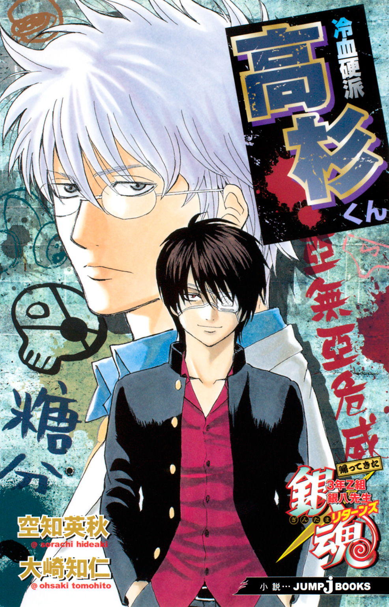
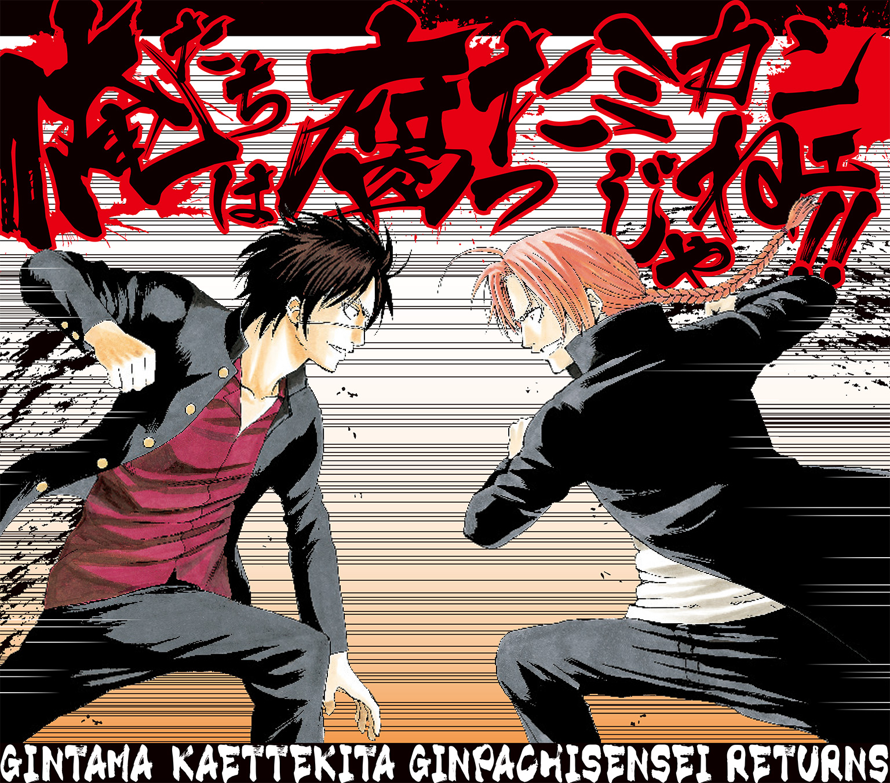
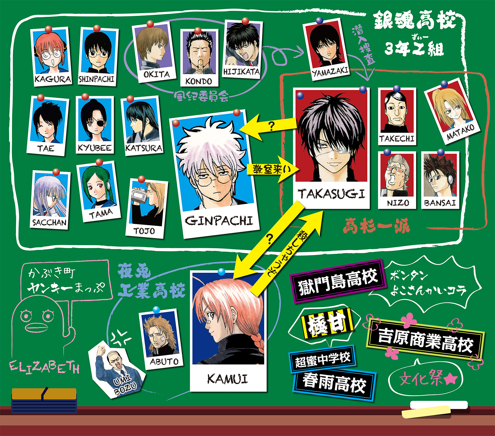
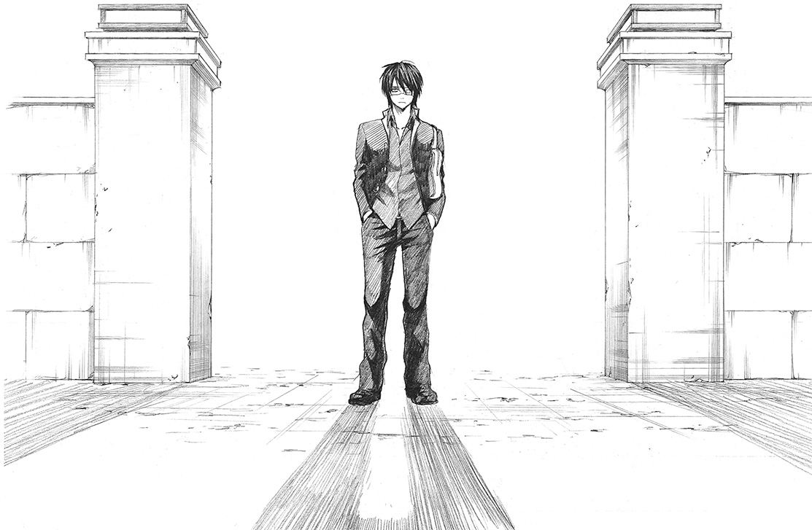
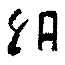
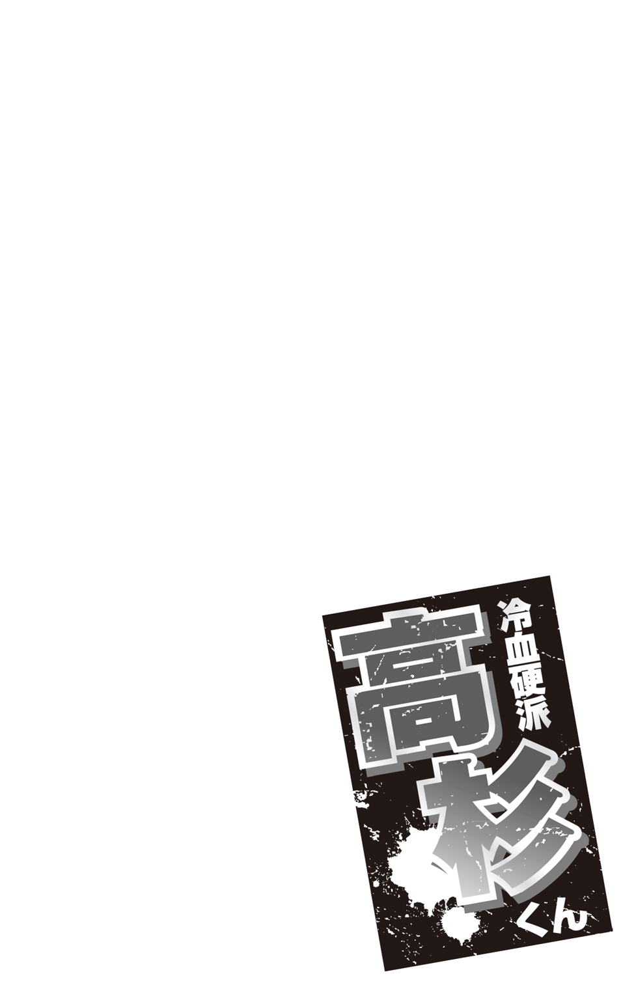
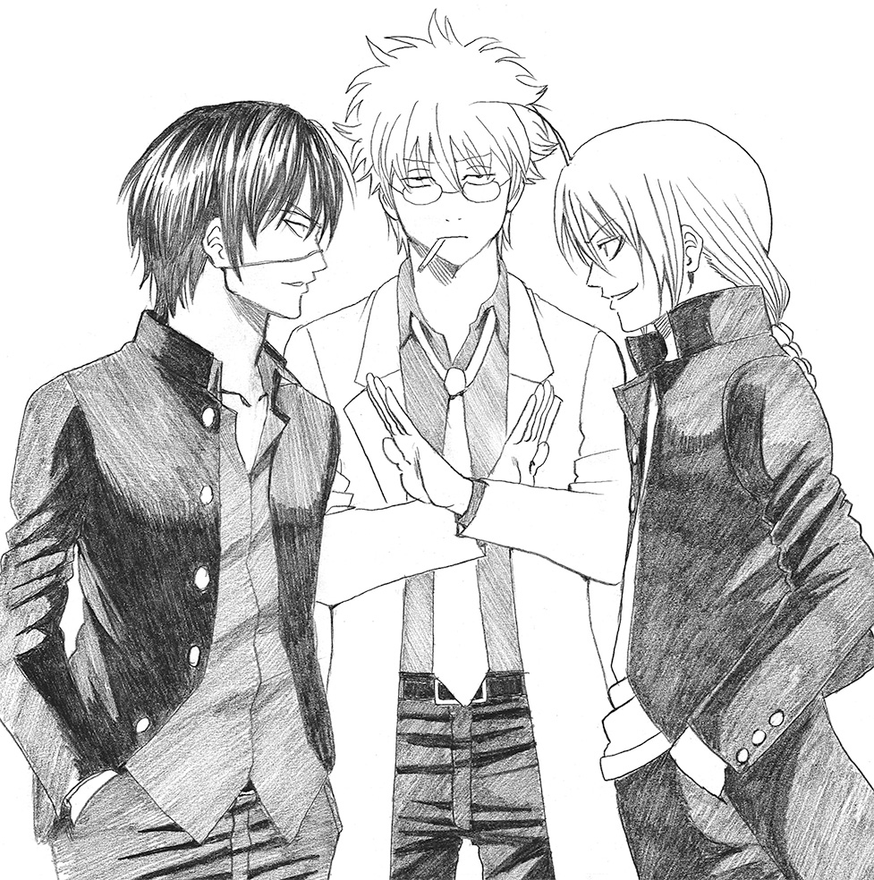
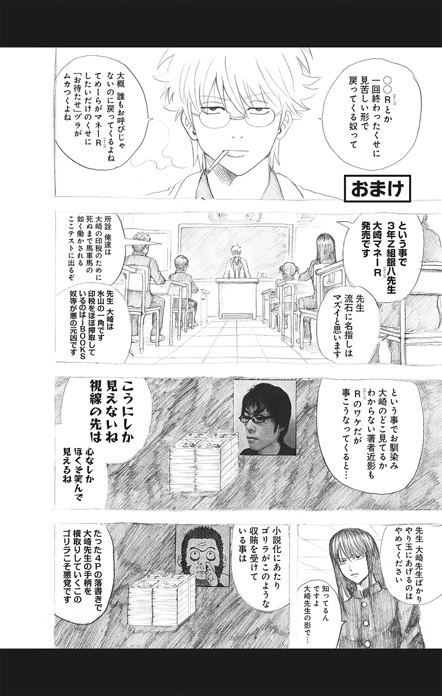
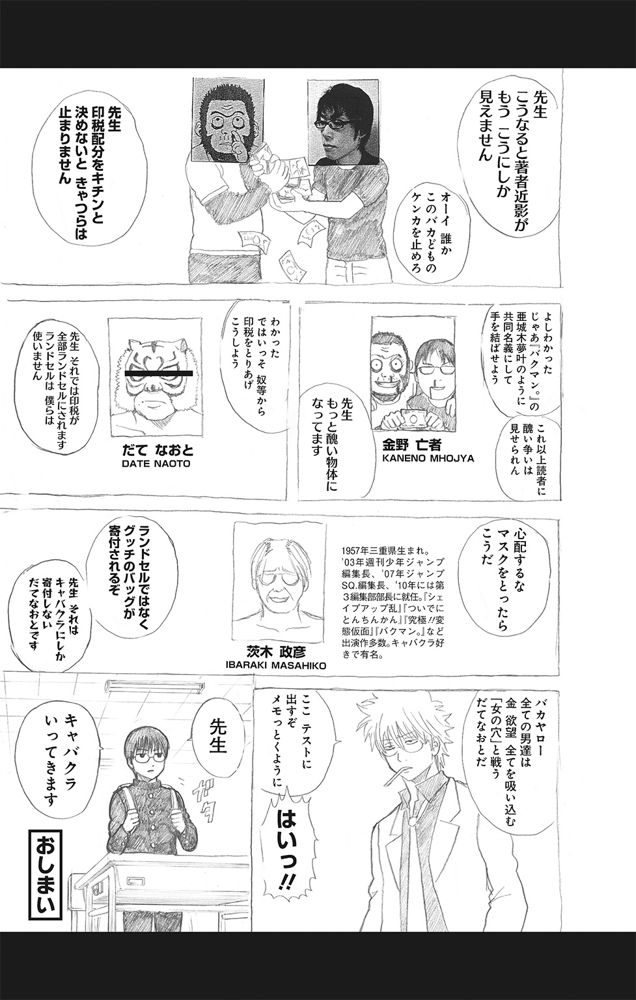

| 銀魂 帰ってきた3年Z組銀八先生リターンズ 冷血硬派高杉くん | |
| 空知英秋 & 大崎知仁 | |

この本は縦書きでレイアウトされています。
また、ご覧になる機種により、表示の差が認められることがあります。


この作品はフィクションです。
実在の人物・団体・事件などにはいっさい関係ありません。
帰ってくる。
あの人が、とうとう帰ってくる。
誰が？ バットマン、じゃない。ウルトラマン、じゃない。あぶない刑事、じゃない。もっとあぶない刑事じゃもっとない。
じゃあ、誰がって？
銀魂高校創立以来、最強で最凶で最恐のヤンキー――高杉晋助が、である。
長期停学中だった高杉。その停学が解け、本日、銀魂高校に帰ってくるのだ。
というわけで、一人の女が目をキラキラさせて、それを待っているのだった。
女――来島また子である。
また子は、昇降口の前に立ち、校門をじっと見つめている。
もうすぐ、あそこを通って晋助様が来る！
ああ、晋助様！ 早くお会いしたいっス！
恋する乙女の心境で、また子がモジモジソワソワしていたら......きっ、来たァァァァ！
校門をくぐり、一人の男子生徒がこちらに向かってくる。
学ランの前を開け、ワインレッドのシャツを見せ、前髪越しに眼帯も見える。間違いない、晋助様だ！
「晋助様ァァァ！ お久しぶりっスぅぅぅ！」
辛抱たまらず、また子は駆け寄った。
長らくの不在、本当に寂しかった。
晋助様のいない日々。校舎が灰色に見えた。ま、もともと銀魂高校の校舎の外壁は灰色だったんだけど、それが三割増しで灰色に見えた、ということだ。
でも、そんな日々とはもうお別れ。
やっと......やっと晋助様が復学してくれたのだ。
「晋助様！ 長期の停学、本当にお疲れ様でしたァァ！」
また子は最敬礼で出迎えた。
「ふ、別に疲れちゃいねえよ。停学なんざ、ただの休暇と同じだ」
うつむき加減の高杉。そのクールな声が、また子の股に、いや心に染みていく。ああ、晋助様、なんて素敵なお声......。
「晋助様、停学中はなにをされていたんですか？」
「別に、なにってことはねーよ。世の中の移り変わりを眺めてたさ。......しかし、相変わらずこの世は腐ってやがるな。くだらねえ悪法や、条例の改悪、枚挙に暇がねえぜ」
そこで高杉は顔を上げ――
「私はかぶき町青少年健全育成条例改正に断固抗議するゥゥゥ！」
シャウトしたのは、高杉のコスプレをした武市変平太だった。
「お前かいィィィ！」
また子はブチ切れてつっこんだ。蹴りの嵐を降らせる。だが、また子に蹴られまくりながらも、武市は続ける。
「非実在青少年という言葉を削除したとはいえ、その根本的な考えは変わっていない！ 表現活動を狭めるだけの条例改正には断固抗議しますよ！」
「うるせえェェ！ お前の実在を削除したいわ！ せっかく晋助様だと思ったのに！ 死ねっ、このっ！」
「ふん、好きなだけ蹴りなさい猪女！ 目を閉じて、女子中学生に蹴られていると思えば、痛くもかゆくもありませんよ！ あ、でも、私はロリコンじゃなくてフェミニストですからね！」
「いや、がっつりロリコンだろーが！ ていうか、ロリコンにＭまで加わってるじゃねえか！」
心ゆくまで武市を蹴ったあと、仕切り直してまた子は聞く。
「で、武市変態」
「いや先輩だから、変態じゃないから」
「武市先輩、晋助様はいつ来るんすか？ 停学が明けるのは、今日のはずっスよね？」
「案ずることはありませんよ、また子さん。もうじき――」
と、そこで武市の声が止まり、そばに人の気配が。
ふらり、と姿を現したのは――
「しっ、晋助様ァァァ！」
また子は歓喜の声を上げた。
鋭い眼光、匂い立つカリスマ性、武市のコスプレとは次元の違う華――今度こそ、間違いなく、絶対に、高杉晋助がそこに立っていた。

「よう、おめーら。変わりはねーか？」
ぞくりとするような、本物の声である。
「はいっ、晋助様！ また子は変わりなかったッス！」
元気いっぱいに返事をするまた子。
嬉しかった。今日からまた高杉と行動をともにすることができるのだ。
高杉を筆頭に、また子、武市変平太、そして河上万斉、岡田似蔵。この五人が、いわゆる「高杉一派」と呼ばれているグループだった。
ぶっちゃけ、校内では不良グループと見なされていた。だが、また子は、自分たちが周りからどう見られていようが気にしなかった。
不良、ヤンキー、ドロップアウト組――言いたい奴は好きに言えばいい。
自分は晋助様のそばで、高杉一派の一員として行動できれば、それでいいのだ。それが私の青春なのだ。そういう青春って、なんか素敵やん。あ、これは晋助様じゃなくて紳助さん。
なんてことを思っていたら、高杉はさっさと校舎に向かって歩き出していた。
再会の感動なんかにひたっている暇はない、ということだろう。クールな晋助様、素敵っス！
と、そこへ突然、マイクを持った女子生徒が一人駆け寄ってきた。
誰かと思えば、放送部の花野アナである。
「３年Ｚ組の高杉晋助さんですね。放送部の花野と申します。停学が明けて今日から登校ということですが、今の心境を一言お願いできますか？」
さすがは学校一の大物ヤンキー。さっそく放送部の取材である。
マイクを向けられた高杉は、冷たい笑みを浮かべて答えた。
「心境か。そうだな。今まさに刀の鯉口を切ったところ、という感じだな。ぬるま湯につかりきったこの学校に、さてどうやって最初のひと太刀を浴びせるか、目下思案中といったところだ」
か......。
かっけえっス、晋助様！ 刀の鯉口を切ったところ、なんて、なかなか言えないっスよ！ ナイスたとえ！
また子は感動。だが花野アナは、
「あのー、わかりにくいので、もっと簡単にお答えいただけますか？」
と、そっけない。
「いや、ちょっとォォ！」
また子は、思わず花野アナに食ってかかった。
「今のコメント、めっさかっこよかったでしょうが！ わかりにくいって、アンタの感性が鈍いだけじゃないっスか！」
「別にかっこよさは求めていないんです。わかりやすいコメントをいただきたいんです。というわけで高杉さん、わかりやすくお願いします」
すると高杉は一言。
「停学が明けて嬉しいです」
「いや、シンプル！ 晋助様、なんてどシンプルなコメントなんスか！ ああ、でも、そんな晋助様も素敵っス！」
また子は感動。だが花野アナは、
「あのー、もっと中身のあるお答えをいただけますか」
「だから！ アンタが言い直せっつったから晋助様は......」
すると高杉は一言。
「アニメが再開して嬉しいです」
「晋助様！ アニメ再開って、それ停学と関係ないっスよ！ ああ、でも、アニメ再開を喜ぶ晋助様も素敵っス！」
すると花野アナは、
「では、高杉さん、アニメとかけまして」
と、まさかのむちゃぶり。
「ちょ、なぞかけ？ なんで急になぞかけなんスか」
「高杉さん、アニメとかけまして」
「いやいや、晋助様、こんなむちゃぶり、無視していいっスよ！」
すると高杉、
「ととのいました」
「やるんスか！ もはや旬とは言い難いそれ、晋助様やるんスか！ 小説版初登場の晋助様は、そういう感じなんスか！」
「アニメとかけまして」
「はい、じゃあもうやってください晋助様！ アニメとかけまして！」
「レジでプレゼント用のラッピングをお願いする、と解きます」
「レジでプレゼント用のラッピングをお願いする、と解きます。その心は！」
「放送（包装）が待ち遠しい」
「うまい！ 晋助様、さりげにクオリティ高いっス！」
「すぎっちです」
「言っちゃうんスか！ それまで言っちゃうんスか！ どんだけサービスするんスか、晋助様！」
そこへ武市まで参戦する。
「ととのいました！」
「ちょ、武市先輩まで？」
「アニメとかけまして！」
「はい、じゃあどーぞ！ アニメとかけまして！」
「かぶき町青少年健全育成条例改正、断固反対と解きます！」
「いや、もういいっスから、その話は！ でも、一応その心は！」
「ロリコン万歳！」
「いや、まったくととのってねーだろーが！ なんだそのなぞかけはァ！ アンタみたいなのがいるから、条例改正されるんスよォォ！」
「変平太っちです！」
「そこは『たけっち』でいいだろーがバカ！ なんでわざわざ語呂悪い方にするんスか！」
そうやってまた子がガンガンつっこむ隣で、花野アナが冷静にまとめる。
「えー、では、高杉さん、停学明けの心境としては、ロリコン万歳ということでよろしいですね？」
「よろしくないよろしくない！ それ言ったの、こっちの変態だから！」
「それから、来島また子さん、あなたのパンツはシミツキパンツだということで、よろしいですね？」
「それもよろしくないわ！ なんスかいきなり！ 誰スか、そんな情報流してんのは！ あ、晋助様！ 誤解しないでくださいね！ 私、パンツは毎日替えてますからね！」
つっこみまくって、喉がカラカラになるまた子であった。
最凶ヤンキー高杉の帰還は、連日、学校新聞や校内放送などのメディアで大々的に報じられた。
謎めいた大物ヤンキーの復学は、やはりニュースのネタとしては格好のものだったからである。
『悪の華、再び咲かん！』
『血に飢えた野獣、荒野に再臨！』
『スーパーレジェンドヤンキー、高杉帰還！』
『空知は、レジェンドになれず！』
という感じで、その扱われ方は、ちょっとしたスターであった。
だが、そういう状況を面白くないと感じる勢力も、銀魂高校の中には、いるのだった。
高杉一派以外のヤンキーグループである。
なんで高杉だけが大物扱いされるんだ、ほんとにあの野郎はつえーのか、なめやがって、俺たちももっとチヤホヤしろよ。
という不満が、彼らの間にはくすぶっていたのである。
そして、高杉が復学して十日ほどたったある日、そういう不満を持った連中が、とうとう行動を起こしたのであった。
放課後、また子のケータイに、河上万斉からのメールが届いた。
〈晋助が、体育館裏でヤンキーたちに囲まれているでござる♪〉
音符のマークに軽くイラっとしつつも、また子はただちに体育館裏に走った。
「晋助様ァァァ！」
体育館裏に着くと、高杉は十人以上のヤンキーに取り囲まれていた。少し離れたところで、ギターケースを背負った河上万斉が様子を見ている。
また子は、すぐに万斉にかみついた。
「万斉先輩、なにボーッと見てんスか！ 晋助様を助けないと......」
「その必要はないでござるよ。あんなチンカスどもに負ける晋助ではござらん」
「それは、わかってるっスけど......」
高杉ィ！ と、そこへ怒声が響いた。高杉を取り囲んだヤンキーたちの声である。
「高杉ィ！ 今日がてめえの命日だァ！」
「いいか、てめえの命日は今日だ高杉ィ！」
「命日を今日にしてやるからな高杉ィ！」
「高杉の命日は今日だからな高杉ィ！」
「いや命日命日うるさいっスよ！ なんスか、この連中」
また子はつい反射的につっこんでしまったが、当の高杉は口元に薄笑いを浮かべて黙ったままだ。
「万斉先輩、やっぱり加勢した方が――」
言いかけたまた子を、
「待て」
と万斉が遮る。
「大丈夫でござる。今、晋助の魂の鼓動が変わったでござる」
「晋助様の？ なにに変わったんスか？」
「うむ。静寂、無音の境地から......」
そこで万斉が一瞬沈黙する。
「なんスか？ 無音の境地から、なにに変わったんスか！ 凶暴なメタルとかっスか？」
「いや......校歌だ」
「は？ 校歌？」
「ああ、銀魂高校の校歌だ」
「大丈夫なんスかソレ！ 魂の鼓動が校歌なんかに変わって、戦いに勝てるんスか？ てか、そもそもうちの学校、校歌なんかあったんスか？」
「ぬしは銀魂高校の校歌を知らないでござるか？ ならば拙者がうたってやろう」
万斉は言うと、背負っていたケースからアコースティックギターを取り出した。
「や、今そんなことしてる場合じゃ――」
と、また子が戸惑うのもかまわず、万斉は朗々とうたい出した。
銀魂高校校歌
学び舎は、「まなびや」と読むんだぜ
「がくびしゃ」じゃないんだぜ
ほとんど受験勉強しなかったから
受かるかどうかバクチだったぜ、旦那さん
バクチ旦那さん
僕たちの季節は、いつも曇天だ
そしてこの校歌は、０点だ
嗚呼、銀魂高等学校
嗚呼、銀魂、嗚呼、高等、嗚呼、学、嗚呼、校
最後のコードをかき鳴らし、万斉がシャウトした。
「センキューでござるぅぅ！」
「いや、うるせェェェ！ なんなんスか、このクオリティ低すぎる校歌！ 『新訳紅桜篇』に引っかけてんのか知らないっスけど、ところどころＤＯＥＳっぽいし、あと、最後『嗚呼』多い！」
「校歌と言えば、『嗚呼』でござろう」
「確かにそんなイメージあるっスけど！」
また子がそう返したときだ。
ヤンキーたちが動いた。
「命日ィィ！ じゃなかった高杉ィィ、死ねェェ！」
「晋助様！」
また子がとっさに走り出そうとした、その瞬間だった。
別の方向から、人影が飛び出してきた。
影は目にも止まらぬ速さでヤンキーたちの間を駆け抜けた。
砂塵が舞い、高杉を襲おうとしていたヤンキーが、次々と地面に倒れていった。
最後の一人がどさりと倒れ伏したとき、砂塵が晴れ、影の正体が判明した。
リーゼントに長ラン姿――岡田似蔵であった。
似蔵は、手にした武器でヤンキーたちを叩きのめしたようだ。手製のブラックジャックだろうか。袋の中になにかを詰めたような形の武器だ。
その袋を高々と掲げて、似蔵は言った。
「晋ちゃん、コロッケパン買ってきたよォォ！」
「いや、パンで殴ってたんかいィィ！」
どうやら似蔵は、高杉に言われて売店にパンを買いに行っていたらしい。
「いやー、やっぱりコロッケパンは人気だねェ。これ、ラス１だったよ晋ちゃん」
のんきな口調の似蔵に、また子はつっこむ。
「いやいや、ラス１の貴重なパン、武器にしてどーすんスか。パンぼろぼろじゃないっスか。あと、あれだけ殺気立ってたのに、コロッケパンで殴られて負けるって、敵もどんだけ弱いんスか」
「やっぱり殺っ気立ってる奴には、コロッケパンは効くねえ」
「いや、無理やりコロッケとからめんなァ！」
「似蔵」
と、そこへ高杉。
「チンカスどもの始末、ご苦労だったな。褒美に、そのパンはおめーにやるよ」
「マジでっ？ ありがとう、晋ちゃん！」
「いや、感激してるっスけど、それ結果的に、自分で買ってきたパン、自分でボロボロにして、自分で食べてるだけっスよ」
「やっぱり一回ボロボロにしたパンはうまいからねェ」
「いや、一日寝かせたカレーみたいに言わなくていいっスから」
なんてことをまた子が言っていると、高杉はさっさと歩き出した。
また子たちも会話を打ち切って、あとを追う。
たまり場に向かうのである。
体育館裏から、そう遠くないところに、一軒のプレハブ小屋がある。元はなにかの部室だったが、今そのクラブは廃部となっている。誰も使わなくなったその小屋を、高杉一派はたまり場にしているのだった。
たまり場には、すでに武市がいた。
部屋の一番奥に、どこかから運び込まれたソファがある。
高杉はそこに腰を下ろした。古ぼけたソファでも、高杉が座ると玉座のように見える。
他の者たちも、めいめいの場所に座ったり、壁にもたれたりした。
たまり場に、高杉一派の五人全員がそろっていた。
しばらくの沈黙のあと、高杉が物憂げな声で言った。
「......退屈だな」
その一言で、部屋の空気がピリッと張りつめた。
「なにかねえか？ 面白ェもんは」
校内メディアで大きく扱われようが、ヤンキーの襲撃を受けようが、高杉の退屈はまぎれないのである。
「それでしたら、こういう話はどうですか」
と、武市が口を開いた。
ロリコンがらみの話だったら、ソッコーつっこんでやろう、とまた子は身構えたが、その必要はなかった。
数か月前から、かぶき町の高校生の間に、奇妙なステッカーが出回っていた。
ステッカーは長方形で、黄色と黒の縦じま模様、右下に「極甘」と書かれている、ふざけたデザインだった。値段は、一枚数万円だという。
むろんそんなステッカーを欲しがる奴はいない。ステッカーは、強引に売りつけられるのである。盛り場や駅の裏で、いきなり囲まれ、買えと迫られる。拒めば、暴力で脅される。ステッカーを鞄の見える位置に貼っておけば、もう二度と売りつけられることはない。そう言われ、泣く泣く数万円を支払い、ステッカーを買わされている人間が大勢いるのだった。
「――銀魂高校の生徒もかなり被害に遭っているようですが、現時点では、どこの連中がやっていることなのか、正体は不明です」
武市がそう言って、説明を終えた。
「正体が不明というのは？ 顔をさらしてないってことかい？」
似蔵が聞くと、武市はうなずいた。
「そのようですね。押し売りグループは、マスクやサングラスで顔を隠し、服も学校の制服ではなく、私服のようです。数人で一グループになり、腕もたつと」
「なんか一昔前のヤンキーみたいっスね、ステッカーを無理矢理買わせるなんて」
また子は正直な感想を口にした。
そのとき高杉が口を開いた。
「......ぶっ壊してやるか、その押し売りグループ」
全員が高杉の方を見た。
「壊して、どうする？」
万斉が聞いた。
「連中が集めた売り上げ金、ガメちまうかい、晋ちゃん」
似蔵の言葉に、高杉は、ふっと笑う。
「......俺は、ただ壊すだけだ」
その笑みに、また子はぞくりとした。
氷の微笑を浮かべた王が、退屈をまぎらわす玩具を見つけたようだった。
また子は気持ちが高揚してくるのがわかった。再集結した高杉一派が、いよいよ動き出すのだ。
「じゃ、さっそく調査っスね！」
また子が元気よく言うと、万斉が立ち上がった。
「よし！ となれば、まずは景気づけに校歌でもうたうでござるか！」
「や、それはいいっス」
冷ややかにまた子はつっこむ。
「またあのワケわかんない校歌ッスよね。もういらないッス。あんなの聴いても、景気づけになんないスから」
「いや、さっき聴かせたのは一番だ。今度は二番でござる」
「だからいいっスってば」
「それでは聴いてください、ワンツースリーフォー、さんハイ！ キュー！ ゴー！」
「いや、ずいぶんとややこしいカウント！」
「嗚呼〜！」
「で、いきなり『嗚呼』っスか！」
たまり場にまた子のつっこみが響くのであった。
というわけで、翌日から、また子たちは調査を開始した。
放課後、校門のそばに立ち、通りかかる生徒の鞄をチェックし、「極甘」のステッカーを貼っている者がいたら、呼び止めて話を聞く。そういうシンプルな聞き込みであった。
高杉をのぞいた、四人での行動である。高杉はたまり場に残っていた。王は城で結果を待つのみ、というわけだ。
しかし、である。
また子たちの聞き込みは、なかなかうまくいかないのだった。
「ねえ、ちょっと話聞きたいんスけど」
鞄にステッカーを貼った生徒を見かけると、また子が声をかける。
だが、呼び止められた生徒は、また子たちの姿を見た途端、蒼ざめて逃げ出してしまうのだ。中には悲鳴を上げる奴なんかもいる。
声をかけても、すぐに逃げられてしまう。要するに、高杉一派だということで、相手がビビってしまうのである。
そうやって五人続けて逃げられたあと、また子は黄色い頭をかきむしった。
「あーもう！ これじゃあ聞き込みになんないスよ！」
「仕方ありませんよ」
と、溜め息まじりに言うのは武市であった。
「我々の校内でのイメージはお世辞にもいいとはいえない。声をかけられた方から見れば、ステッカーの押し売りグループと大差ないのかもしれませんね」
「まったく嘆かわしいねェ、人を色眼鏡で見るなんざ」
と言ったのは、思いっきり色のついた眼鏡をかけている似蔵なのだが、また子はそのことはつっこまずにおいた。
でもって、はかどらない聞き込みの最中、万斉はというと、シャカシャカと音のもれるヘッドホンで音楽を聴いている。それも、また子の苛立ちに拍車をかける。
そこへ、武市がこんなことを言い出した。
「私、思うのですが、また子さんが最初に声をかけているのが、よくないのではないでしょうか」
「はあ？ どういう意味っスか？」
「あなたのその黄色い頭と蓮っ葉な口調が、いかにもヤンキー然としていて、それが相手を怯えさせているのかもしれません。ここは折り目正しい印象の私が声をかけた方が、まだうまくいく確率が高いんじゃないかと」
「折り目正しい？ ロリ目やらしい、の間違いじゃないっスか？」
「つまらない揚げ足をとるものじゃありませんよ、また子さん。そういう性格だから、あなたはデリケートな作業に向かないんですよ。バカ」
「いや、おめーがバカ」
「とにかく、次にステッカーを貼っている生徒がいたら、私が一人で声をかけてみますからね。死ね」
「いや、おめーが死ね」
などと言い合っていると、ちょうどそこに鞄にステッカーを貼っている生徒が通りかかった。気の弱そうな男子生徒である。
「私が行きます。あなた方はそこで見ていてください」
武市はそう言い置くと、男子生徒のあとを追った。それを、また子たちは離れたところから見守る。
武市に声をかけられ、男子生徒が振り返る。一瞬、ぎくっとした様子を見せたが、逃げ出したりはしなかった。やはり、外見のイメージはまた子よりも武市の方がいいのだろうか。少し面白くない気分を味わいつつ、また子は武市が戻ってくるのを待った。
やがて、武市が男子生徒と別れて戻ってきた。
「なにか聞けたんスか」
また子が聞くと、武市はうなずいた。
「ええ。かなり有益な情報が聞けました。彼の知り合いで、中学生の妹がいるという生徒を三人教えてもらいました」
「へえ、中学生の妹がいる人を三人も教えてもらったんスか！ すごいじゃないっスか！ って、死ねェェ！」
また子は武市の腹に蹴りを放った。
「なーにを聞き出してんスかアンタはァ！ 中学生の妹ぉ？ 結局ロリ目じゃないっスか！ ステッカーの話はどこいったんスか！」
「落ち着きなさい、また子さん。今回の事件は、おそらく女子中学生が鍵を握っています。いや、握っている可能性が高い。いやむしろ、握っていなくてもいいじゃないですかこの際」
「おいィィ！ 最終的にただのロリコン全開じゃないっスか！」
「なにをやってるんだい、まったく」
という声は似蔵だった。
「聞き込みに自分の趣味を持ち込むなんざ感心しないね。次は俺がいくよ」
「似蔵......」
あんたで大丈夫っスか、と、また子が言いかけたとき、タイミングよく、鞄にステッカーを貼った生徒が通りかかった。
似蔵は一度うなずいてみせ、その生徒のあとを追った。また子たちはそれを見守る。
似蔵は、武市と同様、生徒としばらくやりとりをかわしたあと、こちらに戻ってきた。
「どうでした？」
また子が聞くと、似蔵はうなずいた。
「かなり有益な情報を聞けたぜェ。三丁目の角にあるパン屋のコロッケパンは絶品らしい」
「へえ！ 三丁目の角の！ ってボケェェ！」
似蔵のリーゼントの先端を摑んで、また子はシャウトした。
「おいしいパン屋情報なんかいらないんスよ！ ステッカーの話を聞いてこいっつってんスよ！」
「落ち着けよ。俺はただ、売店のコロッケパンが売り切れてたときの保険として、近所のパン屋情報をインプットしておきたいだけなんだよ」
「いや、どんだけコロッケパンに関して用意周到なんスか！」
似蔵につっこんだあと、また子はかぶりを振って続けた。
「もういいっスよ。アンタらにやらせるより、私がやった方が万倍マシっスよ。やっぱり私一人で声をかけます！」
また子はそう宣言して、近くを歩いている生徒の鞄をチェックし始めた。
が、こういうときに限って、鞄にステッカーを貼っている生徒が見当たらない。
イライラと視線を巡らせていると、
「おや、あの人の鞄にステッカーが」
と、武市の声がした。
武市が指さす方向には一人の男子生徒が歩いていて、確かにその鞄にはステッカーが貼ってある。
「よーし」
と、そいつに向かって歩きかけて、また子は気づいた。
サングラスに無精髭のその生徒は、長谷川泰三、学校ではマダオと呼ばれている男だった。
そして、マダオの鞄に貼ってあるステッカーの文字は「極甘」ではなく、もっと別の言葉だった。こう書いてある。
『仕事をくれ、とは言わない！ 金をくれ！』
「いやいや武市先輩、あれはウチらが追ってるのとは別件スよ、別件。ステッカーが別モンですもん。てか、なんスか、あのステッカーのフレーズ。人として最低じゃないスか」
「そうでしたか......。では、あの人はいかがですか？ あの人の鞄にもステッカーが」
と、武市は今度は別の女子生徒を指さす。
見ると、その生徒は、機械少女のたまだった。そのステッカーの文字は、
『ガガー、ピー』
「いや、なんなんスか、あのステッカー！ ガガー、ピー？ 故障？ 故障を訴えたいんスか？」
「お、あいつの鞄にもステッカーがあるぜェ」
と、今度は似蔵が別の生徒を指さす。
見ると、その長髪の生徒は桂小太郎。狂乱のバカ貴公子の鞄に貼ってあるステッカーの文字は、
『スタんバってました』
「いや、あれも別件スよ、別件！ てか、あいつはこの学校で一番関わっちゃいけない奴っスよ！」
「では、あれはどうです」
武市が指さす方向には、東城歩が歩いている。鞄のステッカーの文字は、
『LOVE LOTION LOVE LOFT』
「いや、あれも別件スよ！ てか、あのステッカー、なんかカッコいい感じになってますけど、『ローションとロフトが好き』って言ってるだけっスよ！」
「じゃあ、あいつはどうだい？」
似蔵が指さす先には、また桂小太郎が歩いている。鞄には、なぜかさっきとは違うステッカーが貼られていて、
『スタバでスタンバってました。くすっ』
「イラつくわァァ！ 最後の『くすっ』が超イラつくっス！」
「では、あの人はどうです」
武市が指さす先には、猫耳女のキャサリンが歩いている。鞄のステッカーは、
『』
「いや、まっったく読めないっスよ！ 母国語？ あいつの母国語っスかアレ！」
「なら、あいつはどうだい」
似蔵が指さす先には、桂小太郎が歩いている。今度のステッカーは、
『ドトールでドタンバってました。ぷーっくっくっ！』
「いやもうウゼェェェ！ てゆーか、何回通りかかるんだテメーはァァ！」
つっこみながら、とうとう桂に飛び蹴りを浴びせるまた子であった。
でもって、こんな感じに聞き込みがうまくいかないなか、河上万斉はなおもシャカシャカと音のもれるヘッドホンで音楽を聴いている。
さすがのまた子も忍耐の糸が切れて、
「ちょっと万斉先輩、いつまで音楽聴いてんスか！」
と、かみつく。しかしヘッドホンの音量がでかいのか万斉は返事をしない。
「聞こえてんスか？ もうっ、取りますよコレ！」
また子が強引にヘッドホンをむしり取ると、
「あ、なにをするでござるか」
「なにをするでござるかじゃないっスよ！ 大体こんなときになに聴いてんスか」
また子は言いながら、ヘッドホンをはめてみた。
すると、耳に流れ込んできたのは、文字通り「シャカシャカシャカ......」という音だった。
「いや、ほんとにシャカシャカいう音聴いてたんスか！ なんスかこの音楽！ てか雑音？ なんか、こわっ！ きもっ！」
「きもいとは失礼でござるな。それは由緒正しいシャカシャカ音でござるぞ。かの有名なボブ・マーリーが、ウッドストックでミスチルをオノヨーコしたときのメタリカでござる」
「いや最終的にシャカシャカどこ行った！ てゆーかアンタ、さては音楽詳しくないだろ！」
「ノーシャカシャカ・ノーライフ」
「黙れノー天気！ どこのタワレコだァ！」
ま、そんなこんなで、聞き込みが不調に終わった翌日のことだった。
たまり場に、招かれざる客が訪れた。
放課後、突然ドアが乱暴に開けられ、三人の男が踏み込んできたのだ。
「風紀委員会だ！ 入らせてもらうぞ！」
現れたのは、風紀委員長の近藤勲、副委員長の土方十四郎、幹部の沖田総悟であった。
高杉一派にとっては、天敵と言ってもいい相手である。
いずれ接触することはあるだろうと思っていたが、それが今日だったのだ。
たまり場にいたのは、高杉とまた子と万斉の三人。武市と似蔵は聞き込みに出かけたのか、それとも女子中学生の情報を集めに行ったのか、コロッケパンを買いに行ったのか、不在だった。
「いきなりなんの用スか、アンタら！」
また子はカッとなって近藤たちを睨んだ。だが、風紀委員たちは怯んだ様子も見せない。
そこへ万斉も言う。
「マナーを知らぬ連中でござるな。部屋に入る前にはノックをするのが礼儀であろう。......いや、ゴリラがトップをつとめるような集団に、礼儀もクソもないでござるか......」
その言葉に、先頭の近藤がぴくりと頰を引きつらせた。
だが、近藤が口を開く前に、隣にいた土方が落ち着いた声で言う。
「委員長、挑発には乗るなよ。間違って、手でも出したらこいつらの思うツボだ。風紀委員会は暴力集団だなんて騒ぎ立てるかもしれねえ」
「わかってるよ、トシ。俺だって、そこまで短気じゃねえ」
近藤は余裕のある笑みでうなずくと、万斉に向き直った。そして、作ったような笑顔と、やわらかい物腰で言う。
「ノックをしなかったのは失礼したよ河上君。以後は気をつけよう。すまなかった」
「おい、通訳は連れてきてないでござるか？ ウホウホとしか聞こえんぞ」
「だとコルァァ！ 俺がいつウホウホ言ったァァ！ 表出ろやァァ！」
「いや、あっさり乗ってんじゃねーか挑発に！」
「だってよー、あのグラサン野郎がウホウホとか言ってコケにしやがるからよー」
近藤は言いながら、ウーホー、ウーホーと鼻息が荒くなっている。
「落ち着けよ委員長。実際ウホウホ言っちまってるぞ、今」
近藤をなだめ、今度は土方が前に出てきた。
「３Ｚの教室に顔出さねえで、こんなところでサボってばっかりいるてめーらに、礼儀だなんだ言われたかねーんだよ。......おい高杉」
と、土方が呼んだ。
高杉は部屋の奥のソファで脚を組んだまま無言を通している。口元には、いつものように薄い笑みが浮かんでいる。
「今日来たのは、他でもねえ。てめえらに警告に来たんだ」
「警告？」
高杉が聞き返す。
「ああ。......てめえら、最近巷で騒ぎになってるステッカーの押し売りグループを追っているそうだな？」
「それがどうした？」
「手を引け」
ずばりと土方は言った。
「どういうことだ？」
「俺たちも追ってるんだ、その押し売りグループを。てめえらに引っかき回されたら、入る情報も入らなくなるんだよ」
「ふ、それで俺たちが、はい、わかりました、と手を引くとでも思ってるのか？ その話を聞いたら、余計に首を突っ込みたくなったぜ」
「手ぇ引けっつってんだよ。目障りなんだ」
土方は繰り返した。
「それにな高杉、おめーが動くと他にも迷惑する奴がいるんだよ」
「誰だ、その迷惑する奴ってのは」
「小説版の文章を担当してる大崎だよ。本編『銀魂』であんまりボケてねえお前は、ボケ主体の銀八シリーズでは動かしづらいって、大崎からもクレームが来てるんだよ」
「いや、なにサラっと生々しい裏話出してんスか！ 頑張れよ大崎！」
「とにかく、この件は、俺たち風紀委員のもんだ。てめえらは手ぇ引け」
「拙者たちではなく、ぬしらが手を引いたらどうでござるか？」
そこへ万斉が言う。
「まあ、平和ボケしたぬしらに、犯人が突き止められるとも思えんでござるが......」
「そうスよ、そうスよ！ この平和ボケ集団！」
万斉に続けて、また子も言うと、
「誰が平和ボケだコノヤロー」
言い返してきたのは、沖田総悟である。また子を指さして続ける。
「大体なんだ、てめーのその黄色い髪は。デカビタンＣ飲んだあとのションベンみてえな色しやがって。このデカビタン・ションベン・イエローが。黒く染めてこい」
「う、うるさいっスよ！ そういうアンタの頭も茶色じゃないっスか！ 黒くないじゃないっスか！」
「てめえよかマシだ。俺のは上品なマロングラッセ・ウンコ・ブラウンだ」
「いや、自分でウンコって言っちゃってるじゃないっスか！ って、私もウンコって言っちゃってますけど！」
「おめーら、いい加減にしろ」
土方が割って入る。
「いい年こいてションベンだウンコだビチグソだって恥ずかしくねーのか」
「いや、ビチグソは言ってないっスけどね」
また子は一応つっこんでおく。
そこへ薄笑いを浮かべた高杉が言った。
「てめーら、文句があるなら実力行使できてもいいんだぜ？」
「実力行使だと？」
土方が目を鋭くする。
「そうだ。今、ちょうど三対三で人数的にも五分なんだ。拳で決着つけてもいいんだぜ？ もちろん、てめえらが暴力をふるったなんて、俺たちは騒ぎ立てるつもりもねえ」
「バカ野郎、そんな口車に乗せられてたまるか」
土方が言い、沖田も続ける。
「そうだ、そうだ。大体、三対三なんて言っても、おめーら、どうせ最終的には一対五にしちまうつもりだろーが」
「総悟......」
土方が咳払いして言う。
「念のため聞いとくが、その、『一』ってな、誰のことなんだ？」
「決まってるじゃないスか。土方さんでさァ。土方さん、常日頃から、過酷な戦況に身を置いてこそ、男は強くなれるって言ってるじゃないですか」
「ほほう。まあ、いいだろう。じゃあ、『五』ってのはなんだ？ こいつら三人プラス、武市と似蔵ってことか？」
「なに言ってんすか。『五』は、こいつら三人プラス、俺と委員長でさぁ」
「いや、なんで委員長とおめーが敵サイドについてんだよ！ 俺、敵地で味方にも裏切られて袋叩きじゃねーか！」
「その方がなんか面白いじゃないですか」
「そんなフワッとした理由で仲間袋叩きにしてんじゃねーよ！」
「わかりやした。じゃあ、一対佐にしやしょう」
と沖田は言う。土方は片眉を上げて、
「佐？ 一対佐ってなんだ？」
「『一』が土方さんで、『佐』は佐々木尚でさぁ」
「佐々木尚って、それ週刊少年ジャンプの編集長じゃねーか！ ある意味最強だろそれェ！」
「心配いりやせんぜ、土方さん。あんなおっさんに腕力はありやせん」
「腕力なくても権力はあるんだよ！」
「じゃあ、『佐』対『森』にしときやしょうか。『森』は......」
「オイィィィ！ 競合誌の編集長の名前出そうとしてんじゃねーよ！ てゆーか、もはや俺の戦いにもなってねーじゃねーか！」
「じゃあ、トシ。モスラ対ゴジラはどうだ？」
いきなり近藤が言う。
「い、いや、委員長！ ここに来てその方向からのボケかよ！ ボケをカブせるときは流れを読めよ！」
そこへ万斉も言う。
「ならば、『も』対『まさこ』はどうでござるかな？」
「それ、『もたいまさこ』じゃねーか！ 個性派女優の名前だろ！ てゆーか何？ こうやって、みんな順番にボケる感じになってる？」
じゃあってんで、また子も言う。
「だったら、『小林』聡『美』はどうスか？」
「だからそれ、小林聡美だろ！ つーか、もはやナニナニ対ナニナニっていうルールすらなくなってるじゃねーか！ あと、この流れだと高杉、てめえもボケるんだろーな？」
土方が高杉を睨むと、高杉はおもむろに口を開いた。
「『やっぱり』猫『が好き』」
「なつかしーなソレ！ てゆーか、若い読者おいてけぼりじゃねーか！ 誰が知ってるんだその番組！」
ボケまくる一同に対し、
「とにかくだっ」
と、再度仕切り直して、土方は言葉を継ぐ。
「――とにかく、警告はしておいたからな、高杉。ステッカーの押し売りグループは俺たちが追う。――行こうぜ、委員長」
ああ、とうなずき、近藤は行きかけた。だが、立ち止まって去り際の一言を言い置く。
「......そうだ。ちなみに一つ教えておいてやろう。実は俺たちの調査はかなり進んでいてな、犯人グループにかなりのところまで迫っているとの感触を得ている。お前らがどうあがこうが、事件を解決するのは俺たちだからな。わっはっは！」
そう言って歩き出そうとする近藤。すると、その背中には、「極甘」と書かれたステッカーが、「バカ」という形になるように何枚も貼られていた。
「いや背中ァ！ めっちゃステッカー貼られてるんスけど！ かなりのところまで迫ってるっていうか、逆に迫られてんじゃないスかソレ！」
「え、噓！ マジ？ いつの間にィィ？」
近藤が悲痛な叫びを上げる。
そこへ万斉がギターを弾いた。ジャンジャン、とコントのオチっぽい音を。
「その音やめてくんない！」
涙目で叫ぶゴリラなのであった。
「春雨高校だと......？」
高杉の目がきゅっと細くなった。放課後のたまり場に、五人全員がそろっていた。
武市がうなずいて、続ける。
「はい。間違いありません。ステッカーの押し売りは、春雨高校の連中のしわざです」
風紀委員会の干渉を受けてから、数日後。事態が大きく進展していた。
武市が有力な情報を摑んできたのである。
「確かな話でござるか？」
万斉が聞く。
「ウラは取ってあります。実は、押し売りグループをやめた、元メンバーに会うことができました。その人物からかなりの情報を引き出すことに成功しましてね」
「グループをやめたメンバーというと？ なにかグループで揉め事でもあったのかい？」
似蔵が聞く。
「ええ。売り上げ金の分配で、メンバー同士でいざこざがあったようですよ。ま、小悪党の集まりにはありがちな展開ですがね」
そのいざこざが元で、グループを離脱した者が数名いた。武市が接触したのは、そのうちの一人らしい。押し売りグループが春雨高校のヤンキーで、そしてその全員が超蜜中学出身者であること。数名の離脱者は出しつつも、まだ二十人以上のメンバーが残っていること。そして、グループのアジトの場所も、その人物から聞き出せたそうだ。
「よほどグループに恨みがあったんでしょうね。ペラペラとよくうたってくれましたよ」
武市が言った。
超蜜中学出身者でグループが作られていると聞いて、また子はステッカーのデザインにも納得がいった。黄色と黒の縦じまが蜂のおしり、それと「極甘」の二文字で、蜂蜜を意味しているのだろう。
「けど、元メンバーだなんて、よくそんな奴と接触できましたね。先輩、どんな手使ったんスか？」
また子が聞くと、
「なに、ちょっとした巡り合わせですよ」
と、武市は前置きして説明した。
「――昨日のことなんですが、私、たまたまある中学校の近くを通りかかりましてね、で、たまたまその学校から、すごいポテンシャルを秘めた女子生徒が出てきましてね、で、たまたま尾行したら、気づかれましてね、で、その女子生徒さん、泣きながら家に逃げ込んだんですが、すぐにその子のお兄さんという人が血相変えて家から飛び出してきましてね、『うちの妹になにしやがった！』と、私、軽くボコられましてね、で、すいませんすいませんと土下座したあと、なんやかんやで世間話になりましてね、よくよく話を聞いてみたら、そのお兄さんがなんと押し売りグループの元メンバーだったんですよ。でまあ、そのお兄さんからいろいろ情報を聞き出したというわけなんです。すごくね？」
「いや、なんなんスか、その奇跡的なリンクは！ てか、ボコられて土下座したあと、よく世間話する流れになったな！」
「いやはや、思わぬところで情報というものは転がり込んでくるんですね。やはり、日頃の行いがよいせいでしょうか」
「いや、行いが悪いからボコられたんスよね！」
「ま、経緯はどうあれ――」
と、ここで万斉が言葉を挟んできた。
「連中の正体は割れ、アジトの場所まで摑めた。......晋助、どうするでござるか？」
万斉が高杉を見たので、他の三人もそちらに顔を向ける。
ソファで脚を組んでいた高杉は、ふーっと長い息を吐くと言った。
「決まってるじゃねーか。......俺は、ただ壊すだけだ」
そして高杉が――王が、ゆっくりと玉座から立ち上がった。
三十分後、五人はかぶき町のはずれにある、廃ビルの前に立っていた。春雨高校は、このビルから一キロほど離れたところにある。
「このビルの屋上です」
武市が言い、五人はビルを見上げた。窓ガラスもほとんどすべて割れている。スプレーの落書きもあちこちにある。いかにもヤンキーがアジトに使いそうな廃墟だった。
高杉がビルの入口をくぐった。また子たちも続く。
武市の情報だと、敵は二十人ほどのグループだという。春雨高校といえば、この近隣では夜兎工業高校と並んで、ヤンキー率の高い学校だ。しかも、凶悪度もかなり高い。そういう連中が、二十人超。
だが、また子に恐怖はなかった。一人なら多少の緊張はあったかもしれないが、今日は五人だ。相手が五十人でも負ける気はしなかった。
高杉を先頭に、薄暗い階段を上り、屋上に出るドアの前に辿り着いた。
ドアノブを摑み、高杉がまた子たちを振り返った。
「開けた途端、いきなり囲まれたりしてな」
そう言って、くっくと笑う。
「それぐらいの方が張り合いがあるよ、晋ちゃん」
似蔵が言った。また子も薄く笑ってうなずいた。
高杉が前を向き、ドアを開けた。錆びついたスチールドアが、軋みながら開いた。
高杉の肩越し、まず視界に飛び込んできたのは、鉛色の空だった。そして、似たような色をしたセメントの屋上。
二十人のヤンキーは、そこにいなかった。いや、正確に言うと、いた。
いたが、全員が地面にのびていた。倒れたヤンキーの周りには、鉄パイプや金属バットが散乱していた。無数の「極甘」のステッカーも風に舞っている。
三人の先客が、そこにはいた。
学ラン姿の三人の男子生徒が立っている。その中の一人、朱色の長髪を三つ編みにした少年がこちらを振り返った。
「あれ？ まだ仲間がいたの？」
人懐っこそうな笑みを浮かべているが、頰に返り血がついている。地面にのびたヤンキーたちは、この三人が倒したようだった。
「ど......どういうことっスか......？」
また子は目を見開いた。
押し売りグループのアジトに来てみれば、すでにグループは全滅。しかも、やったと思しき三人の男たちは、カスリ傷一つ負っていない。
「なんでもいいや。こいつらもやっちまおうぜ」
三つ編みのそばにいた、けだるげな目つきの男が一歩動いた。
「そうするか」
と、三人目の男も動く。
こちらに踏み出した二人を、三つ編みの少年が「待った」と止める。
「阿伏兎、云業、こいつらは仲間じゃないみたいだ。見てみなよ、触角がない」
「あー、確かに」
と、けだるげな目つきの方が呟く。
触角？ また子は地面に倒れている連中の額を見た。なるほど確かに、倒れているヤンキーの額には、一対の触角が生えている。
「超蜜中学の者は全員額に触角が生えています。昨日私が会った男もそうでした」
武市が高杉のうしろに立ち、小声で説明した。
「あ、そうか、わかったぞ。ひょっとして、君たちも、こいつらのことを追ってたの？」
三つ編みがニコニコと聞いてきた。
「なんだ、てめーらは？」
高杉は質問に答えず、反対に問い返した。
三つ編みは微笑を崩さずに答えた。
「俺たちは夜兎工のモンだよ。俺は神威。こっちのダブりが阿伏兎で、こっちのハゲが云業」
「ダブりはねーだろ。言わなきゃわかんないことじゃん」
阿伏兎と呼ばれた男が舌打ちした。神威は、それには取りあわず続ける。
「俺、ちょっと前に春雨から夜兎工に転校したんだ。だから、この触角どもは、いわば昔のご学友ってわけ。クソみたいなステッカー売ってるって話は聞いてたんだけど、わざわざやめさせるのもメンドくさいと思って黙認してたんだ。でもさ、夜兎工の生徒にまで売りつけるようになったら、ちょっとおイタがすぎるよね。だから、ちょっとお仕置きしたってわけ」
神威が言って、へへ、と笑ってみせた。
「というわけだ。どうやら同じ相手を追ってたようだが、タッチの差ってやつだ。アンタらにゃ悪いが、まあ、手間が省けたと思ってくれや」
阿伏兎が投げやりな口調で言った。
高杉はポケットに手を入れたままま、なにも返さない。ただじっと、夜兎工の三人を見返している。
「なんだい、兄ちゃん。気に入らねえってオーラ、ムンムンに出てるじゃないの。運動不足だってんなら、俺たちとやるかい？」
阿伏兎の目がわずかに鋭くなった。
それを受け、万斉、似蔵、また子もすぐに動ける体勢をとった。武市だけはすっと退いて距離を置く。
「待った、阿伏兎。......ねえ、その眼帯、ひょっとしてアンタ、銀魂高校の高杉？」
神威が言った。どこか嬉しそうな口調だった。
「ああ、そうだ」と高杉。
「やっぱり。道理で、そこら辺のザコとは雰囲気が違うと思ったんだ。で、どうする？ 今から俺たちと運動する？」
「そうだな......」
高杉はかすかに首をかしげてから続けた。
「......今日は、やめておこう。このあと、そろばん塾もあるしな」
「そう。よかった。俺もツ●ヤにＤＶＤ返しに行かなきゃなんないんだ。というわけで、阿伏兎、云業、帰るよ」
神威は言って、こちらに向かって歩き出した。阿伏兎と云業もあとに続く。
笑顔に返り血をつけた神威が近づいてくるのを見て、また子は気圧されるように道を譲ってしまった。
長ランを着た夜兎工の三人が、高杉一派と擦れ違い、階段を降りていく。
その姿が完全に見えなくなってから、ようやくまた子は息を吐いた。
「行かせてよかったのでござるか？」
万斉が聞いた。
「挨拶なんぞ交わさないで、いきなりぶっ叩いちまってもよかったと思うがね、晋ちゃん」
似蔵も言った。
高杉が、ふっと笑う。
「今日は顔合わせでいい。またどっかでやる機会もあるだろ。......それとも、俺のやり方は甘いか？ 甘いなら、このステッカーでも貼っとくか」
高杉はそう言って、足元にあったステッカーを拾い上げた。
『極甘』
ではなく、そのステッカーには、こう書かれていた。
『スタんばってました』
屋上の隅っこで、桂小太郎が体育座りをしているのが見えた。
「いや、エンカウント率高えェェェ！」
また子のツッコミが空に響くのであった。
モ●ハンからこっち、やたらと「狩るゲーム」が増えている気がする。
悪魔を狩ったり、怪獣を狩ったり、一人で狩ったり、みんなで狩ったり、とにかく狩っている。
だが、ヤンキーの世界で「狩る」というと、もうアレに決まっている。
ボンタンである。
ボンタン、わかるだろうか。
ヤンキーのはく、変形学生ズボンである。太もものところが標準サイズよりもかなり太くて、裾に向かって細くなっている。
ヤンキーはそういうズボンをはくのである。タックの数とか、ベルトループの上の部分の長さ（ハイウエスト、なんて呼び方もするが）にこだわったりするのである。
「お前、スリータック？ 渋いじゃねーか」
とか、
「お前のハイウエすげーな。腹巻きみてえになってんじゃん」
とか、そういう会話をするのである。
このように、ヤンキーたちは、己がはくボンタンにこだわりを持っている。
そのボンタンを狩ってしまうのが、「ボンタン狩り」という儀式である。
だから今風に言っちゃうなら、「ボンハン」である。
追いはぎみたいなもんである、要は。
ボンタンをはいてる奴を見かけたら、数人で取り囲む。
で、脅してボンタンを奪うのだが、このときの脅し文句が、大体決まっている。ボンハンする奴は、ほぼみんなこう言うのである。
「ボンタンよこさんかいコラ」
はい、では、ゆっくりリピートしてみましょうか。
「ボンタン、よこさんかい、コラ」
すごい文句である。
「あなたが今はいているズボンをこちらに渡してください」
という意味なのである。
非常識きわまりない申し出である。
はいているズボンを渡してしまったら、そいつはどうやって家に帰ればいいのだろうか。
そんなもん知るか、である。
パンツで帰れや。もしくは、友達か母ちゃんにジャージ持ってきてもらえや、ということである。下だけジャージになったら、そいつは完全にウンコもらした奴である。もらしてなくても、「あいつもらしたんだよ、きっと」と思われてしまうこと、うけあいである。
危険である。ヤンキーの世界でボンタンをはくというのは、つまり、このような「ボンハン」に遭うリスクを背負う、ということなのである。
そして、今――。
かぶき町で、その「ボンハン」が流行しているのだった。
春雨高校の一部の生徒が行っていた、「極甘」ステッカー押し売り事件が終息して一か月。
ようやく平和なかぶき町が戻ってきたな、と、町のみんなが思い始めた矢先、何者かがこの「ボンハン」に手を染めたのだ。
しかも、今回のこの「ボンハン」、ヤンキー業界で過去に幾度か発生していた「ボンハン」と比べて、タチが悪いのであった。
どういうことか。
ボンタンだけでなく、短ランも一緒に奪っていくのである。
短ランってのは、つまり、丈の短い学生服のこと。
「ボンタンと短ランよこさんかいコラ」
というわけである。
それにしても、ボンタンと短ランを奪っていくとは、悪魔の所業と言ってもいいだろう。
下だけじゃなくて、上もかよ、みたいな。
ジャージを持ってくる母ちゃんも、上と下のジャージを持ってこなければならないのだ。
ボンタンと短ランを狩るので、今風に言うなら、「ボンタン・短ラン・ハント」――略して、「ボンタンランハン」ということになる。
略したせいで、余計言いにくくなってんじゃね？ という感じなのだが、なぜかかぶき町ではこの呼称が定着したのだった。
でもって、このボンタンランハン事件、どこの学校の奴がやりだしたのかは不明なのであった。
ステッカー押し売りグループがそうだったように、ボンタンランハングループも、顔を隠して狩りを行っているようなのである。
ただ、ステッカー押し売り事件と違うのは、今回は被害者もヤンキーである、ということだ。
ステッカーは、真面目そうな非ヤンキー生徒が売りつけられたが、ボンタンランハンの被害者はみんなヤンキーである。
当然だ。ヤンキーじゃないと、短ランを着たりボンタンをはいたりしないのだから。
でもってヤンキーだから当然、狩られるばかりではない。返り討ちにしてやろう、と目論む連中もいる。つまり、
「ボンタンランハングループを、逆に俺たちがハントしてやろうじゃねーか」
というわけである。
ボンタンランハングループをハントする、だからボンタンランハンハンである。ますます言いにくいのである。
しかし、このクエストに成功した者は、今のところいないのだった。
ボンタンランハングループは神出鬼没、そのうえ素早い。逃走経路、出現ポイントなどの情報も少ない。
だから、相当に難易度の高いクエストなのだった。
しかし、そういう難しいクエストだからこそ、挑戦する者も多かった。
あの夜兎工の神威も、ボンタンランハングループを追っている、との噂もある。
では、この男はどうであろうか。
銀魂高校の破壊王・高杉晋助。
彼もこのクエストのクリアを狙っているのだろうか。
今日も高杉は、たまり場の奥のソファに腰かけている。
だが、その口から、
「......ぶっ壊してやるか、そのグループ」
という例の台詞は、まだ出ていないのだった。今のところ彼は、この事件に関心を示してはいないようなのだ（あくまで外見上は）。
来島また子には、それが意外であった。
高杉には、ステッカー事件のときのフラストレーションがたまっているはずなのだ。
あのとき高杉一派は、あと少しのところで夜兎工の神威たちに獲物を横取りされている。
いわば、玩具を取り上げられた格好なのだ。
退屈な王は、今、はけ口を求めているはずなのだ。その破壊衝動を、ぶちまけるためのはけ口を。
ボンタンランハン事件は、その格好のはけ口になりそうに思うのだが......。
しかし、薄笑いを浮かべた高杉の表情からは、その真意は読めない。
この沈黙は、なにか考えがあってのことなのか――。
そこへ、ノックの音がした。
ドアが開き、一人の男子生徒がおずおずと顔を見せた。
これといって特徴のない、一言で言うなら地味な風貌のその生徒は、また子たちの視線にたじろぎつつも、うわずった声で、こう言った。
「あのー、山崎退と申します。僕を、ヤンキーにしてもらえませんか？」
自分に一斉に向けられた視線に、山崎は思いっきりびびっていた。
「――僕を、ヤンキーにしてもらえませんか？」
そう言った途端、連中の視線は鋭さを増した、ような気がした。
だが、山崎退、名前は「退」でも、ここで退くわけにはいかなかった。
山崎がここに来ているのは、風紀委員としての任務だからである。
高杉一派の内情を探るために、山崎は単身ここに乗り込んでいるのだ。むろんその意図は表には出さない。つまりは密偵、潜入捜査、というやつである。
危険思想の高杉が復学してきた今、こいつをマークすることは、風紀委員会にとって最重要課題なのだ。
そしてまた、この任務には、風紀委員会の実力を周囲にアピールするという裏の目的もあった。
ただでさえ、最近の風紀委員会は校内でも軽んじられる傾向にある。
先般のステッカー押し売り事件でも、特に目立った活躍をすることもなく事件は終息してしまった。
というわけで、風紀委員会の存在意義を内外にアピールするためにも、ここらでいっちょ大きなミッションを成功させておく必要があるのだった。
そのための、山崎潜入なのである。
高杉一派の懐に潜り込み、内部情報を集め、今後高杉たちが起こすであろう事件を未然に防ぐ。そうすれば、風紀委員会の評価も高まるはずだ。というのが、上層部の考えである。
ただ、懐に潜り込むといっても、どうすればよいのか。
そこでとられたのが、今回の、『僕をヤンキーにしてください』作戦であった。
なんのひねりもなく、「僕を友達にしてください」と言ったって、相手にされないであろう。
そうではなく、「僕も君たちと同じ世界の住人になりたいんだ」という意思を示すことで、相手は警戒心を解き、一気に距離を縮めることができるのだ。
ヤンキーは、「ヤンキーになりたい」と言ってくる奴が好きである。なぜなら、そいつをヤンキーに改造できるからである。だから、今回のこの作戦なのである。
失敗は許されない任務である。
とはいえ、正直なところ、山崎はこんな任務やりたくはない。
でも、山崎がやらなきゃいけないのである。
山崎が、適格者だからだ。潜入捜査である以上、ミッションにあたる者は、顔を見ても風紀委員だとバレないぐらいの地味さが必要なのだ。
となると、風紀委員会の中では、山崎が最適任者ってことになる。
やれんのか、俺に？
なれんのか俺、ヤンキーなんかに。
高杉一派のアジトに足を踏み入れ、第一声を発した時点で、山崎は卒倒しそうなほど緊張している。
そんな山崎に、最初に声をかけてきたのは、黄色い頭の女――来島また子であった。
「ヤンキーにしてもらえませんかって、アンタ、いきなりなんのつもりっスか」
「す、すいません......。でも、僕、どうしてもヤンキーになりたくて......」
「なってどうするつもりでござるか？」
ギターを抱えた河上万斉も聞いてくる。
「ヤ、ヤンキーになって、高杉さんのそばで男を磨きたいんです！」
すると、岡田似蔵も聞いてくる。
「どうして晋ちゃんのそばなんだい？」
「それは、その、高杉さんが、銀魂高校でナンバーワンのヤンキーだからです！」
武市変平太も聞いてくる。
「男を磨きたいなら、柔道、剣道、空手、そっち系の部活に入った方がいいと思いますがね。そちらには行かれたのですか？」
「い、いえ、そっちには行ってません。まっすぐここに来ました」
答えながら山崎は、
――質問多いなこいつら。
と思っている。
――こっちがヤンキーになりたいっつってんだから、さっさと仲間として認めてくれりゃあいいじゃねーか。
そんなことを心で呟きつつも、
「修羅になるには、やはり高杉さんのグループに入らなきゃだめだと思いまして」
と、相手を持ち上げるコメントも言っておく。
「本気でなりたいんスか？」
「はい、本気です」
「本気でござるか？」
「ええ、本気です」
「本気かい？」
「ですから、本気です」
「本気ですか？」
「何度も言いますが、本気です」
――しつこいな、こいつら。
――本気か否かの確認、マジうぜーよ。
――本気だっつってんだろ。
「僕は、本気で高杉さんのそばで男を磨きたいんです！ ビッと気合いの入ったヤンキーになりたいんです！ 僕をヤンキーにしてください！ よろしくお願いします！」
山崎は直立不動で声を張り上げた。
――よし、これだけ言えば大丈夫だろう......。
山崎の熱っぽい宣言を聞き、万斉が高杉を振り返った。
「晋助、どうするでござるか？ どうやらこいつ、本気でヤンキーになりたいようでござる。ホンキー・ヤンキー・クレイジーのようでござる」
――いや、ＢＯØＷＹの歌のタイトルっぽく言ってんじゃねーよ。なつかしーな、オイ。
万斉の言葉を受け、部屋の一番奥のソファに腰を下ろしていた高杉が静かに立ち上がった。
ゆっくりとこちらに向かってくる眼帯の男には、なるほどさすがに風紀委員会が最も危険視する男にふさわしい、冷たい迫力があった。
「山崎、とかいったか？」
高杉が言った。
「はい、そうです......」
「いいだろう。仲間に入れてやる」
高杉はあっさりと言った。
「あ......ありがとうございます！」
「だが言っておく。俺の下でヤンキーやりてえなら、てめえのナリは、俺たちが好きなようにイジらせてもらう。いいな？」
「も、もちろんです！」
それを覚悟のうえで、山崎もヤンキーを志願しているのだ。
「皆さん、よろしくお願いします！」
山崎は深々と頭を下げた。
潜入の第一段階、まずはクリアのようであった。
「さーて、それじゃあ早速、アンタをヤンキーに大改造させてもらいましょーかね」
ニタニタと笑いながらそう言うのは、来島また子だった。
また子の言葉に、他のメンバーも、うなずいたり、にやついたりしている。
いよいよ始まるぞ、と山崎は思う。
ヤンキー志願の新入りを、ヤンキーに改造する時間――こいつらが、アゲアゲになる時間である。
できれば、お手やわらかにお願いしたい山崎である。ライトヤンキーが希望である。
だが、ビッと気合いの入ったヤンキーにしてください、とこちらから言っている以上、ライトにとリクエストするわけにもいかない。
緊張する山崎の前で、また子が言った。
「晋助様、まずはなにからいくっスか？」
「そうだな......」
高杉は数秒沈黙したあと、
「やっぱり最初は、ソリコミだろうな。気合いの入ったヤンキーなら、ソリコミは必須だ」
山崎は、すっと目を閉じた。
――ああ、やっぱりか......。
――やっぱり、それか......。
ヤンキー志願の真面目君を改造するとき、ヤンキーたちはほぼ確実にソリコミを入れようとするのだ。ビーバッ●でもそうだったし、湘●爆走族でもそうだった。
ソリコミかあ、と山崎は遠くを見つめてしまうのだった。なんだろう、この、洗練とは無縁の響き。
なぜ入れるのだろう、ヤンキーはソリコミを。
剃り込む、というこの複合動詞の、取り返しのつかなさったらないではないか。
それを、今からやられるのである、山崎は。だが、耐えるしかないのだった。これは任務だから。
山崎はパイプ椅子に座らされた。目の前で、準備は着々と進められている。
また子が、前髪を上げるためのワックスや、カミソリを手早くテーブルに並べている。
「じゃあ、始めるっスよ」
また子が言って、山崎の頭にワックスをつけ始めた。
ソリコミを入れるったって、前髪を上げないことには始まらない。
また子は手際よく、山崎の頭をオールバックだかリーゼントだか、要はそれっぽい髪型に変えていった。
でもって工程は、さっさとメインのソリコミ作業へと移る。
山崎の両脇に、万斉と似蔵が立った。カミソリを持つのは、この二人である。
――おいおい......。二人でやんのかよ。
――こういうの、左右のバランス見なきゃいけねえから、一人でやった方が絶対いいだろ。
だが、そんな山崎の心の声など知る由もない万斉は、
「まあ、拙者と似蔵は、本編では人斬り万斉、人斬り似蔵などと呼ばれているでござるからな。カミソリは拙者たちが担当するでござる」
――いや、ござるじゃねーよ。
――人斬りの異名持つ奴にソリコミ入れられる奴の気持ちにもなってみろ。恐すぎるだろ。
「じゃあ、先輩方、よろしくお願いしまっス！」
また子が元気よく言って、ソリコミタイムがスタートした。
ジョリジョリ......、と、取り返しのつかない音が山崎の額の辺りから聞こえてくる。
――やばいって、やばいって！ ジョリジョリのペースが速いって！ おめーら、もっと慎重にだな......。
などと、パニックになる山崎の前で、
「右をもうちょい剃った方がいい。......だめだそれじゃ。左を足せ」
などと指示を出しているのは高杉である。
――おいおい高杉、その指示、ちゃんとしてんだろーな？
――ちゃんとバランス見て指示出せよ。
「もう少し右を足せ。......いや、それじゃ足しすぎだ。左も足して、そろえろ。なにをしてやがる、それじゃ左が行きすぎだろ。右を足せ。違う、それは左だ。右を。左を。右を。左を......」
――って、絶対失敗じゃねーかこの感じ！
――これ、完全に右と左のソリコミを足していくうちに、ソリコミが鬼の角のようになって、鬼ゾリになってるパターンじゃねーかよ！
――鬼の角って、それ最悪じゃん！
――『隠し剣 鬼の爪』ならかっこいいけど、『鬼の角』ってそれ、ただのソリコミ失敗じゃん！ 隠せてないじゃんなんにも！
ほとばしる山崎の内心のツッコミをよそに、ジョリジョリ音は容赦なく続いていく。
そして、やがて高杉の声が告げた。
「よし、もういいだろう」
その声で、万斉と似蔵が山崎から一歩退いた。
なんか、額のとこがスースーするな、と山崎は思っている。
どんな仕上がりになったのだろうか。
やっぱり鬼ゾリになっているのだろうか。
「さ、これで見てみるっスよ」
また子がそう言って、山崎の顔の前に鏡を持ってきた。
緊張の一瞬である。
鏡に映った山崎、その額は、大きくＭ字形に剃り込まれていた。
「.........」
――鬼ゾリっていうかコレ......ベジータじゃん。
――このざっくり後退した額......ベジータじゃん。
――惑星ベジータの王子じゃん。
――でも俺、山崎だよ？ ベジータじゃないよ？ ギャリック砲出せないのに、デコだけベジータみたいにされて、どうすんのコレ？
――取り返しつかないじゃんコレ。
「どうだ？ 気に入ったか？」
と高杉が聞いてくる。
「は、はあ、そうすね......」
――気に入るわけねーだろ、こんな失敗ソリコミ。
「大成功だ。狙い通りベジータっぽく仕上がったぜ」
――いや狙ってたんかい！ 失敗してコレじゃなくて、最初からベジータ狙いだったのかよ！ だったらある意味すげーよこの完成度！
「ん、どうした？ 気に入らねーんだったら、もうちょっとソリコミ足して、ナッパにするっていう手もあるぜ？」
――いやそれ、もはやソリコミじゃねーだろ！ ただのツルッパゲだろ！
「い、いえ、これでいいです......」
と山崎ベジータ退は、引きつった笑顔を浮かべるのだった。
「頭の次は、服だな」
と高杉は言う。
風紀委員である山崎は、当然ながら変形学生服は着ていない。校則通り、上着もズボンも標準タイプのものである。
高杉の言葉を受けて、万斉も言った。
「やはりヤンキーにとって変形学生服は必須でござるからな。ぬしが着ているようなそんな、なんの変哲もない制服では、一人前のヤンキーとは言えないでござる」
――いや、うるせーよ。服は変哲なくても、俺は今、頭がすげー変哲あるんだよ。ベジータにされちまってんだよ。出すぞコラ、ギャリック砲を。出ねーけど。
山崎は思わず万斉を睨みそうになったが、なんとかそれはこらえた。
これは潜入捜査なのだ。こいつらに気に入られるためには、不満顔は禁物である。
「まずは上着からだな。今着てるやつは、脱いでもらおう」
高杉にそう言われ、山崎は緊張しつつも上着を脱いだ。
「おっと、そのダセえカッターシャツも脱いでもらおうか。それと、下のＴシャツも」
さらにそう言われ、結局山崎は上半身裸になってしまう。
――おいおい、大丈夫かよ......。
服を脱がされると、不安感はいや増す。
そこへ似蔵が、学生服を一着持ってきた。それはいわゆる、長ランと呼ばれるタイプの変形学生服だった。
「やっぱり男は長ランだろう。俺も着てるがねェ」
そう言いながら、似蔵は山崎のうしろに回り、長ランを着せてきた。
反射的に山崎は、
――なげーよコレ、何メートルあんだよ！
というツッコミを用意した。
なんとなくだが、そういう感じのボケが来るのかな、と予想したのだ。
だが、そのツッコミは使わずにすんだ。
似蔵が持ってきた長ランの丈の長さは、特につっこむポイントのない、ベタな長ランだったのだ。
「なかなか似合ってるぜェ」
と似蔵が言う。
――うんまあ、これなら......。そんなにおかしくねえかな。
「あー、ちなみにその長ラン、裏地の刺繡がすげえんだ。右の裏地、見てみなよ、竜の刺繡がしてあるぜ」と似蔵。
――ふうん、裏地に竜の刺繡って、とことんベタだな......。
と思いながらも、山崎は一応裏地を見てみた。
するとそこには、竜雷太の似顔絵の刺繡があった。
――いや、竜ってこっちかよォォ！ ドラゴンの方じゃなくて、俳優の方かよ！ まったく恐くねーよ、こんな刺繡！ いや、ある意味恐いけども！
「もう一方の裏地も見てみなよ」
と似蔵が言う。
――右の裏地は、竜雷太。ならば左はなんだ？ 峰竜太か......？
考えを巡らせながら見てみると、左の裏地は――
白竜だった。
――いや、チョイス渋すぎるだろォォ！
――は、白竜ぅ？ ええええええ？
「どうだい、こえーだろ？」
――いやもう普通にこえーよ白竜！
――この人、Ｖシネで恐い役やってるイメージしかねえよ！
――見ろよ、この顔！ 無表情だけど、それが逆にこえーよ！
――実は歌手活動もしてるけど、それはさておき、もうとにかくこえーよ白竜！
山崎が白竜にびびり倒していると、
「私は長ランよりも短ランの方がいいと思うっスけどねえ」
と、また子が言い出した。
「だってほら、長ランって動きにくいじゃないっスか」
「あ、で、できれば僕も、その方が......」
と、山崎はすかさずその意見に乗った。
まあ、ぶっちゃけ動きやすいかどうかは問題ではなくて、こんな妙な刺繡のある長ランよりは、通常の短ランの方がよかっただけなのだが。
「じゃあ、チェンジっスね」
というわけで、また子が短ランを持ってくる。
山崎は似蔵セレクトの長ランを脱ぎ、また子の持ってきた短ランを着た。
着心地は悪くなかった。丈はベルトのすぐ上あたりで、ボタンは四つしかない。なかなかに気合いの入った短ランであった。
――いいじゃん、これ。白竜の刺繡がある長ランよりは断然いいよ。
山崎がホッとしかけたところへ、また子の声がする。
「あ、ちなみにその短ランも、刺繡あるっスよ」
――え？ ......マジで？
山崎は恐る恐る右の裏地を見てみた。
と、そこには、高杉晋助の刺繡。
――いや、アイドルのうちわじゃねーんだよ！ 俺にこれ着せてどうしようってんだ！
――野郎の刺繡なんかされても、こっちゃあ全然アガんねーよ！
内心で不満を爆発させる山崎の前で、
「いや〜ん、晋助様、刺繡になっても素敵っス！」
などとまた子は頰を赤らめて身悶えし、当の高杉はというと無反応にソファに腰かけている。
――なんだ、こいつら......。
と、白ける山崎だったが、そのとき、また子がふと真顔になった。
「あ、ちなみに、左の裏地は白竜っスよ」
――いや、これもかよォォ！
左の裏地――無表情の白竜を見ながら、山崎は心でシャウトする。
――なんで白竜がデフォルトになってんだよ！ おめーらにとって白竜ってそんなに大事かよ！
そこへ、万斉が口を挟んでくる。
「いやいや、また子。短ランはもっと短い方がいいと思うでござるぞ。その丈の長さでは中途半端でござる」
――いや、丈の長さはどうでもいいんだよこの際。
――刺繡の方が問題なんだよ、今は。
山崎は思うが、口に出しては言えない。
結局、また子の短ランもチェンジとなり、替わりに万斉の持ってきた短ランに袖を通すことになる。
「なかなか似合うでござるぞ」
と万斉が言う。
万斉に着せられた短ランは、ボタンが三つしかなく、丈もヘソの上ぐらいまでしかない。
――おいおい、さすがに短すぎるだろ、こんなの。
――腹冷えちまうよ。
などと山崎が思っていると、万斉が言う。
「あ、その短ランにも刺繡があるでござるぞ」
――やっぱりかよ......。
当然そうだろうなと思っていた山崎は、ほとんどやっつけ気分で右の裏地を見てみた。白竜だった。
――いや、いきなり白竜かよ！
――右側になんか別の刺繡があって、左側が白竜かと思ってたら、いきなり白竜かよ！
――白竜は、せめてレフトに固定しとけよ！ こいつにライト守らせんなよ！
ツッコミをスパークさせつつも、じゃあ左側はなんだと思い、山崎は左の裏地もチェックした。
すると、左の裏地には文字が刺繡されていた。
『飲めないお酒を、たくさん飲んでしまったから』
と書かれている。
頭が空白になる山崎。
だが、数秒後に気づいてつっこんだ。
――いやこれ、『吐く理由』だろ！ 白竜じゃなくて、『吐く理由』って、ただのダジャレじゃねーか！
――なんなんだこの短ラン！ ツッコミ養成短ランか！ 超うぜーよ！
「短ランはもっと短い方がいいと思いますよ」
と、そこへ武市も言ってくる。すでに別の短ランを手にしていて、それにはボタンが二つしかついていなかった。丈も、おそろしく短い。
――いやいや、それもう短ランじゃなくて、ただの短い布じゃん......。
山崎は、さすがに今回ばかりは、袖を通す前に注文をつけた。
「......あのぅ、悪いんですけど、短ランでも、もう少し丈が長いタイプでお願いしたいんですが......。あと、できれば裏地の刺繡もない方が......」
「おや、裏地の刺繡はお嫌いですか？」
「や、まあ、嫌いと言いますか、その......」
――てゆーか、刺繡のモチーフに問題があるんだよ！
――白竜がデフォルトに設定されてんのやめてくれっつってんだよ！
内心でつっこみつつも、山崎がごにょごにょ言葉を濁していると、武市が言った。
「まあ、私のこれは、裏地の刺繡はありませんけどね」
「あ、そうなんですか」
――なんだ、それなら......。
「ええ。裏地に刺繡はありません。その代わり、背中に刺繡がありますけど」
と、武市は短ランの背中の方を見せた。
そこには、嘔吐するルー大柴の刺繡があった。
――いやそれ......。
――『吐くルー』じゃねーか！
――『白竜』じゃなくて、『吐くルー』だってか！
――もう、なにがなんだかわかんねーよ！
――短ランも、超みじけーから、ルーもすげえ狭いスペースで吐いてるよ！
――そもそも『白竜』ありきの『吐くルー』だから、いきなりこの刺繡見た奴、意味不明すぎるだろーが！
声に出せないツッコミの連続で、精神的にヘトヘトになりながらも、山崎はおずおずと言った。
「や、あの、やっぱり、僕、刺繡はないやつの方が......」
「ふん、新入りのくせに譲らねえじゃねーか」
と、言ったのは高杉だった。
その言葉に、山崎はぎくりと身を強張らせる。
――やべ、怒らせたか......。
だが、高杉はキレることなく、自らの手で別のものを持ってきた。
「しょうがねえ。じゃあ、おめーにはこの、とっておきのやつをプレゼントしてやるよ。刺繡もねーし、これならいいだろ」
そう言って高杉が差し出してきたのは――
ただ単に、ボタンに紐が通してあるものだった。
「.........」
学生服の生地の部分は一切ない。ただの、一個のボタン。それに紐が通してある。
「着せてやるよ、ほら」
と言って、高杉はその紐を山崎の首にかけた。
「どうだ、気合い入りまくりの短ランだろ」
――いや......、短ランじゃ、ねえじゃん、コレもう。
――ただのペンダント......いや、ペンダントでもねーよ、こんなの。
――刺繡もねえって、そもそも刺繡入れようがねーだろ。生地ねえんだから。
――どーすんだよコレ。どーすりゃいいんだよ俺。
――デコがベジータで、上半身裸で、首からボタンぶら下げて、俺、この状態でどこ行きゃいいんだよ。
「ん？ どうした？ 気に入らねーんだったら、ソリコミ足して、ナッパにするっていう手もあるぜ？」
――いや、ソリコミ足す前に生地を足せェェ！
ソリコミ、短ランとくれば、ボンタンをはかされるのは当然の流れだった。
しかし、短ランのときと同様、高杉一派の用意するボンタンは、とてつもないものばかりなのだった。
似蔵は、股下が三メートルくらいあるボンタンを持ってきた。
――いやなげーよコレ！ 何メートルあるんだよ！
――てゆーか、なんでこのボケ、長ランのときにしねーんだよ！ ボンタンが長すぎるってボケ、わかりにくいだろ！
また子は、股下はノーマルだが、股上が三メートルくらいあるボンタンを持ってきた。
――だから、なげーんだよコレも！ 股上が三メートルもあったら、俺の上半身まるまる隠れちまうよ！ まあ上半身裸だから、その方が温かいけどね！
万斉は、股上も股下もノーマルな、そして太ももの太さも裾の絞り方も、なんの問題もないボンタンを持ってきた。だが、そのボンタンの膝には白竜のアップリケがあった。
――だからもういいっつってんだろ白竜はァァ！ カブせすぎなんだよ！
――大体『白竜』って言葉と『アップリケ』って言葉、ミスマッチにもホドがあるだろーが！ 『ピストル』と『お花畑』みてえなもんじゃねーか！
武市が持ってきたボンタンは、なんだか生温かくて嫌な匂いがした。
なので、山崎は聞いてみた。
「あのぅ、これ、前に誰かがはいてたやつですか？」
「ええ、ルーさんがはいてました。ていうか、ルーさんが、このボンタンの上に吐いてました」
――じゃあゲロまみれのボンタンってことじゃねーか！ なにはかせてんだ！
――こんなもんはいたら、俺も吐くわァァ！
というわけで、結局ボンタンも高杉がセレクトしたものをはくことになる山崎であった。
で、高杉が持ってきたボンタンなのだが、太もものところが超太くて、裾が超絞ってあるという、ただの極端なボンタンであった。
――いや、ここにきてシンプルだなオイ！
――太もも、ふっと！ 裾、ほっそ！ しか言うことねーよ！
――てゆーか、お前アレだろ、もう飽きてきてるだろ、俺を改造することに。
――ボケも浮かばねーし、こんぐらいでいいか、みたいな。やっつけ仕事してんじゃねーぞオイ。
「ふっ、よく似合ってるじゃねーか」
と言いながら、高杉はケータイでゲームをしている。
――いや、お前完全に飽きてんじゃねーか！
――見ろ！ せめて見ろ！ お前のやったこの有様を！
「よーし、じゃあ外見はこれで完成ってことで、次は行動編でござるな」
と万斉が言う。
――いや、まったく完成じゃねーよ。
――まあ、ある意味終わってるけどな、人間として。
死んだ目でそんなことを思う山崎にかまわず、万斉は朗らかに続ける。
「ヤンキーの行動で、是非マスターしておいてもらいたいものが、カツアゲ、でござる」
「カツアゲ、ですか......」
――まあ、確かに、ヤンキーってやるよな、カツアゲ。
――真面目そうな奴を脅して、小遣いを巻き上げるってやつだ。
――あーやだやだ。人間のクズじゃねーか、そんなことする奴。
内心不快に思いつつも、高杉一派のレッスンに、ケチなどつけられない。
山崎は黙って万斉の進行にまかせた。
万斉が言う。
「まあ、カツアゲのやり方については、言葉で説明するよりも、実際に見てもらった方がいいだろう。というわけで、今から拙者たちがここで演じてみせるでござる」
――演じる？ おめーらが、カツアゲのやり方を？
きょとんとする山崎の前で、似蔵やまた子がそそくさと机や椅子を動かして、スペースを作り始めた。どうやら空いたその場所を舞台にして、寸劇仕立てでカツアゲのやり方をレクチャーしてくれるようだ。
――おいおい、部室で劇って、なんかスケット・ダンスみてーなノリになってきたな。
「それでは、高杉劇団のミニドラマ、カツアゲ編、スタートでござる！」
万斉の声で、劇がスタートした。
山崎一人を観客にして、舞台にまず出てきたのは、武市変平太である。
「ああ、急がないと塾に遅れてしまいます」
いかにも真面目そうな生徒である。
で、その真面目君の前に、ババーンと現れたのが、これまたいかにもガラの悪そうなヤンキー、岡田似蔵だ。
――なるほど、塾に急ぐ真面目君を、このヤンキーがカツアゲするって流れね......。
顔を見合わせた二人。武市の方が口を開いた。
「お兄さん、お金貸してくれませんか？」
――いや、お前がカツアゲする方かよ！ 逆だろ、どー見ても！
――......いや待て。これに似蔵がブチ切れて、逆に武市をカツアゲするっていう展開かも......。
「おか、お金、持って、ません」
ぶるっぶる震えながら似蔵が言う。
――よわァァ！ 結局似蔵よわァァ！
――やっぱり配役おかしーだろコレ。ヤンキーヘタレすぎだろ！
「持ってないはずないでしょう。財布を出しなさい」
「ほほ、ほんとに、ないんです」
「私に噓は通じませんよ。お金がないというなら、ちょっとそこで飛んでみてください」
――あ、出たよ。
と、山崎は思う。
――これ、カツアゲでよくあるパターンだ。
――金がないって言う奴を、その場でぴょんぴょん飛び跳ねさせる、で、小銭の音がチャリンと聞こえたら、金持ってんじゃねーか、てことになるやつだ。
武市に言われ、似蔵はその場でジャンプした。チャリンチャリンと小銭の音がする。
勝ち誇ったように武市が言う。
「ほらご覧なさい。あなたお金持ってるじゃないですか。さ、そのお金をこちらに......」
と、そのときである。
来島また子が登場した。
また子は、おばちゃんのパーマみたいなカツラをかぶっている。
「似蔵！ アンタ、どーしたんスか！」
「か、母ちゃん！」と似蔵。
――こいつ、母ちゃん設定かよ！
「誰スか、この横分けの気持ち悪い男は。友達っスか」
「と、友達じゃないんだ。こ、こいつが、いきなり金貸せって言ってきたんだよ母ちゃん」
「金貸せだぁ？ ちょっとアンタ！ うちの子、カツアゲする気っスか？」
「い、いえ、それは......」
似蔵には強気だった武市が、おばちゃんまた子の剣幕には押されている。
「ふざけたガキっスねえ。金ならアンタが出しな」
「私が、ですか？」
「そうスよ。有り金全部出すんスよ」
――おいおい、とんだモンスターペアレントじゃねーか。
――息子がカツアゲに遭った仕返しに、母ちゃんが逆にカツアゲするのかよ。
だが、そのときである。
万斉が登場した。こいつもおばちゃんパーマのカツラをかぶっている。
――こいつも母ちゃんかよ......。
「変平太、どうしたでござるか？」
「母さん、いや、このおばさんが、いきなりお金を出せって言うんです」
「なんですって！ ちょっとおたく、なに考えてるでござるか！」
「うるさいっスよ。文句あるんスか」
「あるから言ってるでござる」
「そもそも、アンタんとこのガキがうちの子にカツアゲしたんスよ」
「だからって、この子からお金を巻き上げていいことにはならないでござる」
「めんどくさいっスねえ。なら、アンタと私、親同士で勝負しようじゃないっスか」
「親同士で？」
「私の攻撃を受けて、アンタが立っていられたら、詫び入れてやるっスよ。その代わり、アンタが私の攻撃に屈したら、アンタの有り金は全部いただくっス。これでどーっスか？」
「上等でござるよ」
――いや......。え......？
――なんか、母ちゃんＶＳ母ちゃんになってるけど......。
――カツアゲのレクチャーは？ どうなってるの？
芝居の展開に戸惑う山崎にかまわず、また子は攻撃態勢に入る。
拳をかため、腰を落として、
「カーッ、コーッ、グゴォォ」
と口の中に痰をため始めるまた子。
――いや、痰吐くのかよ！ なんつー攻撃だオイ！
直後、また子の口から痰が発射された。
鋭く放たれた痰は、万斉の顔めがけて飛んでいく。が、ヒットはしなかった。間一髪、万斉は武市を盾にして痰をかわしたのだ。結果、武市の顔が痰でベトベトになる。
万斉が叫ぶ。
「変平太ァァ！ 大丈夫でござるかァァ！」
――いや、お前が盾にしたからそーなったんだろーが！
――つーか、設定上は息子だろ！ 息子、盾に使ってんじゃねーよ！
「変平太！ いや、こうなったらもう変平痰！」
――どんな名前だ変平痰って！ カワイソすぎるだろ！
そこへ、また子が言う。
「一発かわしたくらいじゃ私の痰は終わらないっスよォォ」
カァァァッ、と二発目の痰の準備に入るまた子。いや、ま痰子。
痰のゲージが満タンに、いや、満痰になると、ま痰子は、カッと目を見開いた。いや、見開い痰。
――地の文、痰痰うるせーよ！
ま痰子の口から発射された二発目の痰は、今度こそ万斉にヒットする、かと思いきや、万斉はまたもや武市を盾にした。武市の顔が、再び痰でベトベトになる。そんな武市の顔を覗き込み、
「変平痰！ 大丈夫でござるかァァァペッ！」
と、なぜか万斉も武市の顔に痰を吐く。
――いやお前も痰吐くんかいィィ！
――武市ィィィ！
痰まみれになった武市は、床に倒れて瀕死の状態である。
「カ、カツアゲなんか、するんじゃ、なかった......」
消え入りそうな声でそう言うと、武市は、がくり、と事切れた。
武市の亡骸を抱え、絶叫する万斉。
「変平タァァァン！」
――いやもう、わけわかんねーよ！
――なんだこの芝居！ 武市が痰壺になっただけじゃねーか！ カツアゲのやり方どこいったァァ！
そこへ、ゆらりと現れたのが高杉だった。
「おめーら、なんだその芝居は......」
静かな怒りをたたえた声だった。
「ざ、座長！」
と万斉が声を上げる。座長とは劇団のトップのこと。冷たく怒る座長の登場で、役者たちに緊張が走った。
高杉座長が言う。
「おめーら、ふぬけた芝居見せやがって。そんなんじゃお客さんに失礼だろうが」
――いや、お客さんて、俺一人じゃん......。
――てゆーか、失礼って言うなら、俺、この芝居が始まる前から、だいぶ失礼なことされてんですけど。デコをベジータにされて、裸にボタンぶら下げる羽目になってるんですけど......。
「出せ」
と高杉は言った。
「客につまらねえ芝居見せたんだ。落とし前つけるのがスジってもんだろーが。......さっさと出せ」
そう言って、高杉は手を差し出す。
――出すって......罰金ってことか？
――そういうシステムなのかよ、この劇団......。
万斉たちは、しばらく顔を見合わせてためらっていたが、やがて渋々財布を取り出した。
そこへ、高杉が言う。
「バカ野郎、誰が金出せっつった」
え？ という感じに万斉たちの動きが止まる。
「俺の手をよく見ろ。これが金欲しがってる手か？」
見ると、高杉の手は、手の平ではなく手の甲を上にしていた。
高杉が言う。
「早く、お前らも手ぇ出せ。俺の手の上に重ねるんだ」
その言葉に、劇団員がはっとしたような顔になる。
「......思い出せ。俺たちゃ、辛いときや苦しいときは、いつもこうやって、劇団員全員の手ぇ重ねて、絆を確かめ合って乗り越えてきたじゃねーか。今がそのときだろ。さあ、早くしろ。次の公演の幕が開くぜ」
座長の言葉に、劇団員たちの表情がみるみる輝き始めた。
高杉の手の上に、万斉の手が、また子の手が、武市の手が、似蔵の手が重ねられていった。
高杉座長が言う。
「ふるえるぞハート！」
劇団員が唱和する。
「ふるえるぞハート！」
「燃えつきるほどヒート！」
「燃えつきるほどヒート！」
「高杉劇団！」
エイエイオー！ と全員が唱和して、重ねられていた手がばらけた。
笑い合い、拍手する高杉劇団の面々。ハイタッチなんかもしたりして、全員がキラキラした目をしている。ひとしきりそういうくだりを見せたあと、
「じゃあ、今月分の部費徴収だ。よこせ」
と言って、高杉は劇団員全員から二千円ずつ徴収し、
「わかったか？ これがカツアゲってやつだ」
と、山崎の方を向いて言った。
――いや、わかるかァァァ！
全力で心のツッコミを爆発させる山崎であった。
――これのどこがカツアゲなんだよ！ 安モンの青春ドラマ見せたあと、部費集めただけじゃねーか！ てゆーか、金払うなら俺に払え！
腹の底でツッコミのマグマをたぎらせていると、高杉が続けてこう言った。
「じゃあ、次は実践編だ」
「......へ？」
「今から町に出て、実際にてめーにカツアゲをしてもらおう」
――ええええええ？
というわけで、高杉一派に繁華街の一角まで連れてこられてしまった山崎。
ベジータソリコミで首からボタンをぶら下げ、極端なボンタンをはいたその姿を衆目にさらすことになってしまったが、今はそんなことよりも、これから実際にカツアゲをしなきゃいけないってことの方が一大事だった。
――俺がカツアゲ？ 無理無理無理無理！
――そんなもん、やったことねーし。
――つーか、さっきのあんなグダグダな寸劇じゃあ、なんのやり方も身につかなかったし。
――できるわけねーって......。
だが、やらなきゃいけないのだった。
できません、やりたくありませんと言ってしまえば、連中に疑いの目を向けられてしまうかもしれない。密偵は、潜り込んだ組織に染まり切ってこそ任務を完遂できるのだ。
「俺たちはここで見ている。お前一人でカツアゲして、巻き上げた金を持ってこい」
高杉はそう言った。
山崎はこっそりため息をつく。
――見られてるってのが辛いよな......。
監視の目がある以上、下手なごまかしは命取りだ。
「難しく考える必要はない。カツアゲで言うべき台詞は二つでござる」
と万斉が言う。
「まず最初に、『金貸してくれよ』、で、相手が持ってませんなんて言ったら、『噓つけ、じゃあ飛んでみろ』、この二つで事足りるでござる」
――いやいや、簡単に言うけどさ......。
「まあ、それでも緊張するというなら、目元を隠すという手もあるでござるがな」
万斉のその言葉に、山崎は顔を上げた。
「......目元を？」
「うむ。おどおどした態度は目に表れる。それが相手にバレてしまうと、相手はこちらをなめてかかり、カツアゲもうまくいかない。だから、ビギナーはサングラスで目を隠せばいいでござる」
――あ、それはいいかも......。
小道具の効果はバカにできない。サングラスをかけていれば、多少なりとも大胆にふるまえるかもしれない。
「今はとりあえず、これを使うといいでござる」
万斉はそう言うと、ポケットからサングラスを取り出した。受け取り、山崎はかけてみた。
それは丸いレンズのサングラスだった。で、そのサングラス、右のレンズの横には「２」が、左のレンズの横には「８」がついた、要するに、かけた人の顔を正面から見たとき「２００８」に見えるサングラスだった。
――ダッセェェェェ！
――オイィィィ！ なんだこのチープ極まりないサングラスはァァ！
――なんでこのサングラスなんだよ！ もう２０１１年だぞ！ なんで三年前なんだよ！
土壇場でとんでもない小道具を渡されてしまったが、やっぱりこれいりませんと返すことはもうできない。
行くしかないのだ、カツアゲに、この２００８グラサンをかけて。山崎は覚悟を決めた。
「......じゃ、じゃあ、行ってきます」
そう言って歩き出した。
ターゲットとなる、真面目そうな生徒を探す。
と、向こうから男子高校生が歩いてくるのが見えた。
東城歩だった。
――あいつか......。
悩むところではある。同じ学校で、しかも同じクラスの奴にカツアゲするというのも気が引ける。
しかし、あまり時間をかけたくない気持ちもあった。高杉たちに見られながらカツアゲするなんていう、こんなに神経を使うミッションは、さっさと終わらせてしまいたい。
――まあ、今のこの見た目じゃあ、俺だって気づかれねえだろうし......。
――適当に小銭巻き上げて、あとで事情説明して返せばいいだろう......。
ということで、山崎は東城に声をかけた。
「なあ、おい」
「は、はい......」
立ち止まった東城は、明らかにびびっていた。そりゃそうだ。ベジータソリコミ、２００８グラサン、で、おまけに上半身裸で首からボタンをぶら下げた男に突然声をかけられたら、誰だってびびるだろう。
「金貸してくんねーか？」
「お金ですか。い、いや、お金は持ってません」
「噓つけ。だったら飛んでみろよ」
「と、飛ぶんですか？」
「そうだよ」
山崎がうなずくと、東城はピョンピョンとその場でジャンプしてみせた。
チャリンチャリンという音が確かに聞こえた。
「ほら見ろ。持ってるじゃねーか。今の音、小銭の音だろ」
「いや、小銭じゃなくて......これの音です」
東城はそう言って、ポケットからカーテンの上のシャーってなるやつを取り出した。
――やっぱりかああ！
山崎は脱力して天を仰ぐ。一瞬、そうじゃないかな、とは思ったのだ。で、やっぱりそうだった。東城と言えば、カーテンの上のシャーってなるやつなのだ。もしくはローションなのだ。
山崎が肩を落としていると、怯え切った東城が涙目で言う。
「あ、あの、これ取り上げるのは、勘弁してください。これがなかったら、僕、今日、参考書買えません」
――いや、はなっから買えねーだろそれじゃ！ それ金じゃねーし！
――てか、なに、それどっかで換金できんの？ パチンコ屋さんの換金みたいな感じで？
声をかけた相手が悪かった。こいつはターゲットにしちゃいけない奴だったのだ。
というわけで、東城を行かせ、次なるターゲットを物色する。
と、向こうから、猿飛あやめ、通称さっちゃんが歩いてくる。
――女子かあ......。
悩みどころではある。女子からカツアゲするなんて、いかにも根性なしのヤンキーである。高杉たちにも呆れられてしまうかもしれない。
だが、何度も言うがこのカツアゲ実践編、山崎はさっさと終わらせたい。
というわけで、さっちゃんを呼び止めた。
「なあ、金貸してほしーんだけど」
ぎくりと立ち止まったさっちゃんは、
「も、持ってません」
びびりながら言う。
「噓つけ、じゃあ飛んでみろよ」
山崎に言われ、さっちゃんはその場でピョンピョンと飛び跳ねた。すると、チャリンチャリンという音。
「ほら見ろ、金の音がするじゃねーか」
山崎が言うと、さっちゃんは首を振って、
「いえ、今のはお金の音じゃなくて、これの音です」
と言って、鞄から、手錠とか鼻フックとか拘束具とかチェーンのついた●●とか、●●するときの革製の●●とかを取り出した。
――鞄になに入れてんだこの女はァァ！ ただのＳＭ嬢の出勤途中じゃねーか！
さっちゃんが涙目で言う。
「あの、これ取り上げるのは勘弁してください。私、このあと、これ着けて参考書買わないといけないんです」
――いや、着けなくても買えるだろ！ てか、なんでメス豚モード全開で参考書買うんだよ！
こいつもターゲットにしちゃいけない奴だった。
もういいよ行って、とさっちゃんを解放したあと、次の相手を探す。
と、向こうから歩いてくるのは、近藤勲だった。我らが風紀委員長である。
――委員長かあ......。
めちゃめちゃ悩むところである。
――この人、バカだからなあ......。
要はそこである。
声をかけた途端、「おー、ザキ！ どうだ潜入捜査の調子は？」なんてことを言い出してしまう可能性も、ゼロではない。
だが、東城もさっちゃんも、この姿を見て山崎だとは気づかなかったのだ。委員長とて、それは同じだろう。
それに、この人はバカであるが故に、無駄な抵抗をせず素直にお金を出してくれるかもしれない。
――行ってみるか......。
というわけで、山崎は近藤に歩み寄った。
「なあ......」
声をかけると、近藤は、「ひっ」と小さく悲鳴を上げて立ち止まった。
だが幸いにも、これまでの二人同様、山崎だと気づいた様子はない。
「なあ、金貸してほしーんだけど」
「お、おか、お金、も、持ってましぇん......」
ぶるっぶる震えながら、近藤は目を伏せる。
――おいおい、前の二人よりヘタレ度高くねーか......？
委員長のヘタレっぷりに、ちょっぴりガッカリしつつも、山崎は続けた。
「噓つけよ。じゃあ、飛んでみろよ」
「へ？」
「飛べっつってんだよ」
「と、飛べません！」
涙目で近藤は首を振る。
「人は、人は......空を飛ぶことはできません！」
「わ――」
――わかってんだよ、そんなこたああ！
――ダメだ。やっぱこの人、筋金入りのバカなんだ......。
「あのな、誰が大空をフライしろっつったよ！ その場でジャンプしてくれりゃいいんだよ！」
「いえ！ それでも僕は、大空を飛ぶ夢を諦めたくありません！」
「は？ いや......」
――なに言ってんだ、この人......？
「そりゃ確かに、人は空を飛べない。でも、僕は、僕は、幼い頃から空を飛んでみたかったんです！」
「し――」
――しらねーよ、そんな夢ェェ！
――え、なに？ アンタ、空を飛びたいっていう夢あったの？
――や、だけど、その夢と、今のこの状況、ぜんっぜん関係ねーから！
「だから！ 空飛びたきゃ勝手に飛べよ。そうじゃなくて、これはカツアゲで......」
「アゲアゲ？ そうか、アゲアゲで飛べばいいんですね！ なるほど、やっぱりそういうポジティブな気持ちが大事なんですね！ 僕、きっと飛んでみせます！ 勇気をありがとうございます、ベジータさん！」
――だから話を聞けェェェ！
――飛びたい飛びたいって、アンタ、もう十分トンじゃってるよ！
「わかった、わかった、じゃあもう勝手に鳥人間コンテストにでも出てろよ」
「あざっす！」
ということで、山崎は近藤と別れた。
全くの時間の無駄だった。
しかし、やばい。
さっさとカツアゲを終わらせたいのに、マトモな奴が通りかからない。
そこへ通りかかったのが、柳生九兵衛だった。
また女子である。だが、選り好みはしていられなかった。そろそろ高杉たちも、アイツなにモタモタしてやがんだ的な気分になっているはずだ。
山崎は九兵衛を呼び止めた。
「なあ、金貸してほしーんだけど」
「金？」
九兵衛は山崎の姿を見て、一瞬ぎょっとしたようだったが、すぐに気を取り直し、
「いきなり金を貸せと言われても......いくら貸してほしいのだ？」
そう言って、鞄から小切手を取り出した。
「僕の決済で一千万くらいならすぐに貸せるが」
――いや、セレブぅぅぅ！
――そーか！ そーだったよ！ 柳生家、超セレブだから、こいつ金持ちだったんだ！
――てか、カツアゲで一千万の小切手渡されても持て余すだけだわ！
「い、いや、いいんだ、忘れてくれ」
山崎はそう言って九ちゃんを解放し、次の相手を探した。
――やばいやばい、急がねーと......。
そこへ、キャサリンが通りかかった。
――あー、もういいや、こいつで。
「なあ、金貸してほしーんだけど」
「アア？ 金貸セダト？ ソノ前ニ、ソンナ裸デ女子ニ声カケルナンテ、立派ナセクハラダゾ。慰謝料トシテ二億出セコラ」
だめだ。こいつも声をかけちゃいけない奴だった。
キャサリンを適当にあしらい、次の相手を探す。
と、そこへ、屁怒絽が通りかかった。
――パス！
次の相手を探す。
と、そこへ、桂小太郎が通りかかった。
――パス！
そこへ、長谷川泰ぞ――
――パス！
そこへ、エリザベ――
――パス！
武蔵っぽ――
――パス！
ハム子――
――ブス！ じゃなくてパス！
――パス！
――パス！
――パス！ ってなんだこの界隈はァァァ！
山崎は頭を抱えてシャウトした。
――どーいうこったよコレ！ 銀魂高校３年Ｚ組の関係者しか通りかからねえじゃねーか！
――ここ普通の繁華街だろ？ だったらフツーの一般人も通りかかってしかるべしだろーが！ なんで激烈バカしか通らねーんだよ！
サイレントツッコミでまくしたてていたら、そこへ声がした。
「ベジータさーん！」
ママチャリにまたがった近藤が、必死にペダルをこいで、こっちに向かってくる。
そのママチャリには、段ボールで作った不格好な羽根がガムテープでくっつけられていた。
「見てくださいコレ！ １号機が完成したんです！ 今からこれで飛行テスト......」
だが直後、近藤の人力飛行機風ママチャリは、バランスを崩してドガシャアとゴミ捨て場に突っ込んでいった。
――いや、なにがやりてーんだよ、あの人はァァァ！
――つーか、やばいやばい、ほんとにやばい。
早くカツアゲを成功させないと、いい加減高杉たちも......、と山崎が焦りまくっていると、不意に背後から声をかけられた。
「おい」
「はい？」
振り返り、山崎は息をのんだ。マスクや覆面で顔を隠した十人くらいの男が立っていたのだ。
そのうちの一人が、くぐもった声で言った。
「ボンタンと短ランよこさんかいコラ」
――えええええ？
山崎はパニックになっていた。
カツアゲがうまくいかないところへ、謎の集団に声をかけられた。
で、ボンタンと短ランをよこせ、と言う。その言葉で、思い当たった。こいつら、あれだ。
――最近かぶき町を騒がせている、ボンタンランハングループ！
だが、山崎は即座に思う。
――でも、俺のコレ、短ランじゃねえだろ！
――ただ、ボタンに紐を通して首からさげてるだけだろ！
襲われた恐怖よりも、まずはそのツッコミで頭がいっぱいになった。
そこへ、グループの頭目らしき男が言う。
「まったく、ボタン一個の短ランとはな。ここまで気合いの入った短ランにお目にかかるのは初めてだ。......悪いが、狩らせてもらうぜ」
――ちょ、や、だからこれ短ランじゃねえって......
心の中ではなく、声に出して言い返そうとした。が、その余裕はなかった。いきなり顔を殴られた。倒れたところを、さらに何発も蹴られた。
攻撃はすぐにやみ、首からさげていたボタンをブチリとちぎり取られた。そして極太のボンタンに手がかけられる。
――か、狩られる！ 素材、剝ぎ取られる！
屈辱で山崎が叫び出しそうになったときだ。
「やっと会えたぜ、ボンタンランハングループ」
高杉の声だった。
その直後、五つの影が、ボンタンランハングループと交錯した。
高杉一派との戦いが始まったのだ。
頭目らしき男とやり合っているのは高杉だった。
いや、やり合うというほどでもない。決着はあっけなくついた。
高杉はポケットに両手を入れたまま、頭目のパンチをかわし、長い脚を振り上げた。
顎を蹴り上げられた頭目は宙を舞い、地面に落ちたときには、もう気絶していた。
万斉ら他のメンバーも、あっさりと自分の戦いを終えていた。
気がつくと、ボンタンランハングループは全員地面に倒れ伏し、立っているのは高杉一派の五人だけだった。
地面にへたり込んだまま、その五人を見上げていると、高杉が聞いてきた。
「おい、生きてるか？」
山崎はがくがくとうなずいた。痛みよりは恐怖の余韻で膝に力が入らない。しばらくは立ち上がれそうになかった。
「あの......ありがとう、ございました」
山崎が言うと、高杉は小さく鼻を鳴らしただけだった。
＊
「あらら......。今回はこっちがおあずけを食う番みたいだね」
神威がポツリと呟いた。
ボンタンランハングループが瞬殺されるのを、神威たちはただ目撃することしかできなかった。
〈かぶき町○丁目にボンタンランハングループ出現！〉
町の誰かがツイッターにそう書いた。それを見て、たまたま○丁目の近くにいた神威は、阿伏兎と云業を連れて現場に駆けつけた。だが、遅かった。
着いたときには、もうすべてが終わっていた。
高杉たちが、一瞬ですべてを終わらせたのだ。
「......ま、いいか。今回はあいつらに譲ろう」
神威は言った。高杉たちからは離れたところにいるので、こちらの声は届かない。
「いいのかよ？ 今からあいつらんとこ躍り込んで、むちゃくちゃにしちまうって手もあるぜ」
阿伏兎の言葉に、神威は笑って首を振る。
「いいんだよ。俺は好きなものはあとにとっとくタイプだからさ。......まだ手は出さないでおくよ」
行こう、と言って、神威は長ランの裾をひるがえして歩き出した。
＊
ボンタンランハングループの頭目は、獄門島高校の鯱という男だった。
鯱は、ワイルドなヤンキーファッションの研究に余念がない男だった。その研究材料として、巷のいろんな短ランやボンタンを強奪し、蒐集していたのである。
だが、高杉たちに瞬殺されたことにより、鯱グループは壊滅。
かぶき町を騒がせていたボンタンランハン事件は、ここに終結したのである。
事件終結後すぐ、山崎は高杉に、グループを抜けさせてくださいと申し出た。やはり自分には、高杉さんのような修羅になる素質はありません、と言って。
高杉は、とめなかった。好きにすりゃいい、とだけ言った。
高杉一派のたまり場を出て、廊下を歩きながら、山崎はふと思うことがあった。
――ひょっとしてアイツ、俺を囮に使ったのか......？
高杉には、もとより山崎をヤンキーに改造する気などなかった。
巷を騒がせていたボンタンランハングループをおびき寄せるために、山崎にわざと奇抜な短ラン（とも呼べないような代物だったが）を着せ、町に放った。
だからさっき、山崎がグループから抜けさせてくれと言ったときも、特に引きとめなかった。こいつはもう、囮としての役目は果たしたから、ということで......。
いや、と山崎はかぶりを振る。
今となっては、それはもう検証できないことだった。
そして後日、山崎は土方にこんな報告書を提出した。
報告書
高杉たちは、極悪というほど悪い奴らじゃないのかもしれません。
それは、僕がボンタンランハングループに襲われたところを助けてくれたからです。
今回に関しては、かぶき町にとって良いことをしたんじゃないかなと思いました。
山崎退
この報告書を、土方はもちろんあの言葉とともに机に叩きつけた。
「作文んん？」

たまり場にいるのは、また子、万斉、そして高杉の三人だった。
また子はケータイをいじり、万斉はギターを爪弾き、高杉は定位置のソファでいつものように沈黙している。静かな放課後だった。
と、不意にギターの音が止み、万斉が口を開いた。
「なあ、また子」
「なんスか」
「ちょっと、ぬしに頼みがあるのでござるが」
「なんスか」
「すまぬが、ちょっと――」
少しためて、万斉は言った。
「脱いでくれない？」
いいスよ、と答えかけた口に、脳が慌ててストップをかける。
「はああああ？」
ケータイから顔を上げ、また子は椅子から立ち上がった。
「先輩！ いきなり脱げってどういうことっスか！」
「あ、いや、すまん。今のは言葉足らずでござった。詳しく言うと、こういうことでござる」
万斉はそう前置きして、改めて説明した。
「――実はな、来月、吉原商業高校で文化祭があるのだが、その文化祭の実行委員の一人に拙者の知り合いがいてな、その者から出演依頼が来たのだ。拙者が音楽をやっているというのを、そいつは知っていてな、是非うちの文化祭の音楽コンテストに出てくれと、そういう依頼でござった。バンドでもいいし、一人でもいい。ジャンルは不問の音楽コンテストらしい。ちなみに賞金も出るそうで、額は十万円だそうでござる。で、拙者としては、どうせ出るならバンドで挑戦したい、そしてバンドデビューするときは、鬼兵隊でと決めている。ああ、鬼兵隊というのは、ぬしも知っての通り、拙者が目下構想中の、晋助をボーカルに据えたバンドのことだな。しかし、これまたぬしも知っての通り、晋助は拙者がいくら誘ってもバンドに入ってくれない。そろばん塾があるとか言ってな。だから、今回誘われたコンテスト、拙者は一人で弾き語りで出ようと思っているのだが、まあそれはそれでよい。で、吉原商業のそいつが言うには、一校につき出場枠は二つなのだそうだ。つまり、拙者とは別に、もう一組出ることが可能ということなのだ。コンテストを盛り上げるためには、出場者は多い方がいい。だから是非、二組出てくれと言われてな、で、その残りの一枠の人選も拙者がすることになったのだが、拙者としては、生半可な奴を連れていきたくはないのだ。チンケな奴を連れていけば、コンテストで上位に入れないのはもちろん、河上万斉の推薦するミュージシャンはこの程度のものかと向こうに思われて拙者の株まで下がってしまう。そこでだ、拙者としてはオーディションをしようと思うのだ。校内のミュージシャン――バンドでもいい、弾き語りでもいい、形式や形態は問わないから、我こそはと思うミュージャンに集えと呼びかける。そして、集まった者のパフォーマンスを見て、審査のうえで、吉原商業のコンテストに出場できる者を選抜したいと、こういうわけなのだ。しかし、審査といっても、拙者一人が見たのでは評価も偏ってしまうだろう。そこで、また子、ぬしにもこのオーディションの審査員に加わってほしいのだ。だから、すまないが......一肌脱いでくれない？」
「いや、そういう意味の『脱いでくれない？』だったんスか！」
長い説明が終わるや否や、また子はつっこんだ。
「だから、言葉足らずでござったと言ったではないか」
「だいぶ言葉足らずっスよ！ てゆーか、足らずすぎっスよ！」
「すまぬ。まあしかし、つまりはこういうことなのでござる」
また子は、さて、と腕を組む。
吉原商業は知っている。一応共学の学校だが、女子の比率が相当高く、ぶっちゃけ美人の生徒が多いことで有名な学校だった。
でもって、そういう学校の文化祭だから、毎年かなりの来場者があるのだった。美人の生徒を目当てに、吉原商業の関係者だけでなく、周辺校の男子生徒もわんさと行くからである。
で、その文化祭の中で行われる、音楽コンテストのステージに、万斉が出場を打診されたと。
もともと『鬼兵隊』なるバンドを組む構想を万斉が持っていることは、また子も知っていた。そして、そのバンドに必要不可欠なメンバーと万斉が考えている高杉が、今のところまだバンドに入ってくれそうもない、という現状も知っている。
「まあ、この手の審査に武市や似蔵は不向きと思ってな、あいつらには声をかけていない。だが、拙者としては女子の意見も是非とも欲しいところなのだ。というわけでまた子、審査員、引き受けてはくれぬか」
万斉がそうつけ加え、また子は考える。ミュージシャンのオーディション。答えはすぐに出た。
うん、面白そう、やろう。ステッカーの押し売りだ、ボンタンランハンだと、バイオレンスなイベントも悪くないが、たまにはこういうのもいい暇つぶしになるだろう。
「いいっスよ」
また子はうなずいた。
「おお、やってくれるでござるか！」
万斉の声が弾んだ。
「その審査員――」
と、そこへ声がした。奥のソファからだ。
「俺も、やろう」
「晋助......」
万斉は意外そうな声を出した。
「しかし、ぬしは、拙者がバンドに誘っても嫌だと......」
「バンドはな。ガラじゃねえ。だが、オーディションの審査員なら話は別だ。ここのところ退屈している。俺も、一枚嚙ませろよ」
「まあ、ぬしがそう言うなら......。というより、審査員は多い方がいろんな角度から審査できるから、こちらとしては歓迎だが」
「ふっ、なら決まりだ。だがな万斉、俺はやるからには手ぬるいことはしねえ。実力はしっかり見極めさせてもらうぜ」
「うむ、それはそうしてくれた方が、拙者としても助かる」
「いいか、審査してる間、俺は晋助じゃねえ。審助だ」
「お、おお......」
と万斉はうなずくのだった。
というわけで、オーディションなのであった。
オーディション開催のお知らせは、また子と万斉で手分けして、校内の各所にチラシを張ることでアナウンスした。このあたりの作業、割合に勤勉な二人である。
エントリー期間は一週間もうけた。
で、その応募者が、本日オーディション会場に集められている。
会場は、ありがたいことに体育館を借りることができた。高杉一派であっても、まっとうな活動であれば、こういう場所を使わせてもらえるのだった。
一度不発弾が爆発して、粉々に吹っ飛んだ銀魂高校の体育館であるが、今はもう建て直されて新しいものになっている。
場内の準備も整っていた。ステージ上には、横長の看板が吊るされている。
『第１回 チキチキ吉原商業の文化祭の音楽コンテストに出られるミュージシャンは誰だ!? オーディション（ドンドンドン、パフパフパフ）』
という若干うざめの看板の下、ハンドマイクを持って司会をつとめるのは、河上万斉である。
ステージ下の審査員席には二名。長机を前にパイプ椅子に並んで腰かけた、高杉とまた子である。
高杉と二人で並んで座っていることに関しては、嬉しはずかしのまた子であるが、その喜びとともに、疑問もある。
「万斉先輩は司会っスか？ 審査しないんスか？」
ということである。
また子の問いに、万斉が答える。
「いや、むろん、拙者も審査はするでこざる。しかし、ただ次々と出場者がステージに出てきて、パフォーマンスをして、拙者たちがそれを見ていくという形式のオーディションもつまらないだろう。オーディションとはいえ、司会者がいて、場を盛り上げ、一つのショーとして見せていく形にした方が、出場者もノリよくやれると思ってな。だから拙者はここで司会進行役もつとめるでござるよ」
なるほど。確かに、そういうスタイルにした方が、事務的なオーディションよりは楽しそうだ。
また子の疑問も解けたところで、ステージ上の万斉が声を張り上げる。
「さあ！ それではそろそろ始めるといたしましょーか！ 第１回チキチキ吉原商業以下略オーディション！ 拙者、司会兼審査員の河上万斉でござる！ よろしくどーぞお願いするでござる！」
慣れた司会ぶりである。
万斉は続けて、舞台袖に控えているらしい出場者たちに向かって、
「みんなー！ 吉原商業に行きたいかー！」
と声をかけた。
その声に、おー！ と大勢の声が返ってくる。審査員席からは見えないが、舞台袖にはかなりの人数が来ているようだ。美人ぞろいで有名な吉原商業の名前にひかれたか、あるいは賞金にひかれたか、それとも純粋にミュージシャン魂を燃やしてなのか、動機は各人各様だろうが、とにかく結構な人数の挑戦者が集まっているらしい。
「さあ、袖にいる出場者のみんなも気合十分でござる。――では、ここで進行の段取りの説明でござる」
今からこのステージに、出場者がエントリー番号順に登場する。一人なのかバンドなのか、形式形態は各自の自由。とにかくミュージシャンを決めるオーディションなので、出場者のパフォーマンスはすべて、音楽というジャンルにくくられるものである。合否の判定は、全員のパフォーマンスが一通り終わってから、審査員の合議で決められる。決まりごとは以上。あとは特になんの制限もない――。
その説明に、また子も高杉も特に質問を返さなかったので、万斉は続ける。
「それでは、早速オーディションに移るでござる。と、その前に、景気づけに拙者が銀魂高校の校歌を――」
「あ、それはいいっス」
「というご意見をいただいたので、校歌はナシにして、早速最初の挑戦者に出てきてもらうでござる。さあ、のっけから飛ばしていくでござるよ。トップバッターのミュージシャンは、こいつだカモン！」
万斉がステージ袖に引っ込み、入れ替わりに、最初の挑戦者が出てきた。
「ヘイヨー、チェックワンツー、チュクチュクチュー、チェック、チェックワンツー」
ＤＪ・ＯＺＵＲＡである。
いきなりこいつかよ！ 見るだけ時間の無駄じゃね？ とは思ったが、一応これはオーディション、こちらは審査員、つべこべ言うのは最後までパフォーマンスを見てからだ、と思い直し、また子はまだツッコミは我慢した。
例によってキャップをななめにかぶり、ダボダボのパーカーとスケーターパンツといういでたちのＤＪ・ＯＺＵＲＡ。片手にハンドマイクを持ち、そして今日はでかいラジカセをかつぐ代わりに、アイポッドをかつぐ感じに持っているのがイラっとくる。で、狂乱のバカラッパーがステージで披露したのは、こんなラップだった。
「ヘイ、チェックワンツー、チェックワンツー、チェック柄のパンツー、くすっ、チェック、チェック、とにかくチェック、答案用紙に名前書いたかチェック、レシートの金額に変なところがないかチェック、お出かけ前に鼻毛が出てないかチェック、ズボンにカピカピのご飯粒ついてないかチェック、新しく始まる連ドラのとりあえず第一話だけチェック、コミックスが巻数順に並んでるかチェック、クラス替えで同じクラスに可愛い子がいるかどうかチェック、いなかったら悲しいぜチェック、でも二学期ぐらいになったら六十点ぐらいに見えてたあの子が八十点くらいにランクアップしてる可能性もあるぜチェック、たぶん文化祭の準備とかを一緒にやっていくなかで優しい性格だってことがわかって印象がよくなったんだぜチェック、でもそれで調子に乗って告白したら失敗するぜチェック、失恋のつらさは勉強に打ち込むことで忘れるぜチェック、英単語を覚えるぜチェック、歴史の年号を覚えるぜチェック、元素記号を覚えるぜチェック、それを答案用紙に書くぜチェック、答案用紙に名前書いたかチェック......っておやおやループしてるぜチェック、チェックワンツー、そんな俺の今日の下着はチェック柄のパンツー」
ダーン！ みたいな、ラッパーが最後によくやるあのポーズを決めてから、ＤＪ・ＯＺＵＲＡはステージを去っていった。
また子が、まず思ったこと――
やっぱり時間の無駄だったァァ！
そこへ、入れ替わりにステージに戻ってきた司会の万斉が、ノリノリで言う。
「センキュー、ＤＪ・ＯＺＵＲＡ！ さあ、のっけからトップギアで飛ばしたから、審査員のお二方もちょっとびびったんじゃないでござるかな。ちょっと感想を聞いてみましょうか。また子審査員、どうだったでござるかな」
「どーもこーもないっスよ！ なんなんスか今のは！ チェックチェックって、あいつの頭ん中チェックした方がいいっスよ！」
「では晋助はどうでござったかな」
また子は隣の高杉を見る。自ら審査員を買って出た高杉は、一体どんなコメントを口にするのか。
薄笑いを浮かべた高杉が言う。
「......ラジカセの代わりにアイポッドを持ってたところが、すごく面白いと思いました」
「さ――作文んん？ まさかの作文スか、晋助様！」
万斉が続ける。
「さあ、初っ端からナイスパフォーマンス、そしてナイス作文！ この調子でどんどんいくでござるよ！ 続いては男性ロッカーのコンビでござる！ それではよろしくでござる！」
万斉がそう言ってステージを降り、入れ替わりに出てきたのは、二人の男子生徒だった。
一人は岡田似蔵。そしてもう一人は、ベジータ――もとい山崎退であった。
こ、この二人がコンビ？ また子は目を瞬かせる。
二人は、ともにエレキギターをさげていた。
そして二人のファッション――似蔵はいつもの長ラン姿だが、山崎は今日もあのときと同じ、ベジータカットで上半身裸、そして首からボタンをぶら下げ、極太のボンタンをはいている。
二人は、マイクとアンプを手早くセッティングすると、交互にマイクに向かって叫んだ。
「似蔵だ！」
「ベジータだ！」
「俺たちのロック！」
「聴いてくれ！」
「歌は、コロッケパン――」
「＆あんパン！」
ギャギャギャ、と、ギターのイントロのあと、似蔵のシャウトから歌が始まる。
「アイ・ラブ・コロッケパン！」
「アイ・ヘイト・あんパン！」
「アイ！ ラブ！ コロッケパン！ コロッケパン！ コロッケパン！」
「アイ！ ヘイト！ あんパン！ あんパン！ あんパン！」
「コロッケパンコロッケパンコロッケパンコロッケパンコロッケパ――」
「あんパンあんパンあんパンあんパンあんパンあんパンあんパンあ――」
「ロケパンロケパンロケパンロケパンロケパン――」
「あんパあんパあんパあんパあんパあんパあん――」
歌詞というよりは呪詛。時折かき鳴らされるギターは、歪んだ不協和音。
ロケパンとあんパの連呼が死神の足音のように響き、また子の脳味噌を侵してくる。
ちょ、なんスか、この歌......。
これ以上聴いていたら、精神崩壊してしまう。また子が耳をふさごうとしたとき、
「センキュゥゥゥゥゥ！」
二人が同時にシャウトした。歌が終わったようだ。
また子がほっとしたところへ、二人はミュージシャンがギターのピックを客席に向かって投げるような感じで、コロッケパンとあんパンを投げてきた。
「いや、パン投げるんかいィィ！」
つっこむまた子の顔面に、二個のパンがスパーキング。
悠然とステージを降りていく二人に、
「たく、なんなんスか、あいつら......」
また子はブツクサ言いながら、顔についたコロッケとあんこの残骸を手でこすり落とす。で、ふと気づく。よく見るとそれは、コロッケパンとあんパンじゃなくて、コロッケとあんこにまみれたパンデモニウムだった。
「オエエエエ！ なに投げとんじゃあァァァ！ トラウマになるわァァァ！」
ステージに戻ってきた司会の万斉が、
「サンキュー、パンデモニウムロッカーズ！ 最高に熱いステージをありがとう！ お前たちのことは一生忘れないでござる！」
「いや、それを言うなら私もっスよ！ この恨み一生忘れねーからなァ！」
だが、万斉はまた子のそんな怒りにはかまわず、
「晋助は今のステージどうだったでこざるか？」
「そうだな......」
高杉の声は、いつでも落ち着いている。
「まあ一言で言うと......あんパンあんパン言ってた奴の髪形と服装が変」
「い――いや、晋助様！」
あれは晋助様がやったことっスよね！ ......とは、しかしまた子はつっこまなかった。
高杉が「変」といえば、変なのだ。うん、もう、そういうことなのだ。
というわけで万斉は進行する。
「いやあ、熱いステージが続いているでござる。ＤＪ・ＯＺＵＲＡ、パンデモニウムロッカーズ、今のところ甲乙つけがたいところではござるが、しかし、チャレンジャーはまだ控えているでござる。三組目に登場するのはこいつらだ！」
万斉の呼び込みで、三組目の挑戦者がステージに登場した。
今度は男女二人のユニットである。
女性の方がキーボード、男性の方がアコースティックギターをさげている。
男性の方がマイクに向かって声を張り上げた。
「どーも！ 村田兄妹です！ 我々は兄妹でユニットを組んでいます！ 私が兄の鉄矢！ こっちが妹の鉄子！ 私がボーカルをつとめます！ よろしくお願いします！」
いかつい顔の兄は、思わず顔をしかめてしまうほどの大声だった。だが、それでも狂乱のバカラッパーとパンデモニウムロッカーズのあとに見ると、この二人はしごくまっとうなユニットに見える。妹の方も美人と呼んでもいいルックスだ。
兄が言う。
「それでは、まず一曲目です！ これは薄紅色の桜の美しさをうたった歌です！ 聴いてください、タイトルは『紅桜』！」
兄がギターでイントロを爪弾いた。そこへ妹のキーボードもいい感じに入ってきて、また子の期待感はさらに高まる。
兄がうたい出す。
「♪べーにいろのー！ さくらはー！ すごーく！ すごーく！ ビューティフル！」
「いや歌詞、稚拙ぅぅ！ あと、声でかァァ！」
結局また子はつっこむことになる。
鉄矢の声は、普通に喋っているだけでも相当うるさいのに、うたい出すとさらにボリュームがでかくなるのだった。本人のギターの音も妹のキーボードの音も、その声にかき消されて、全く聞こえない。
「――ビューティフル！ ......ありがとうございましたァァ！」
「で、もう終わりっスか！ 歌十五秒ぐらいしかなかったっスよ！」
「続きまして、二曲目です！」
また子のツッコミにはかまわず、鉄矢はぐいぐい進めていく。
「――これは、ベニーというアメリカ人青年が、いかにクールな性格であるかをうたった歌です！ 聴いてください！ タイトルは『Benny the cooler』！」
「......いや、ベニー・ザ・クーラーって、それただのダジャレじゃないっスか！」
「♪ベニーは！ ケニーよりも！ クール！ ありがとうございましたァァ！」
「終わりっスか！ これに至っては、たったのワンフレーズっスよ！」
「続きましてェェ！」
「いや、ほんとにマイペースだなオイ！」
「続きまして、三曲目！ これは、ガンプラでシャア専用ザクをたくさん作ってしまったときの歌です！ 聴いてください！ 『紅ザクら』！」
「いや苦しいだろ、その語呂合わせ！ シャア専用ザクって確かに赤いけど、それを紅ザクって！」
「（語り）お前、そんなにシャアザクばっか作ってどーすんの!? ありがとうございましたァァ！」
「で、また終わりかい！ てゆーかもうソレ歌じゃないっスよね！ 語りで終わっちゃってるっスよね！」
「続きましてェェ！」
「どーでもいいけど何曲うたうんスかアンタは！」
「四曲目は、Ｘの『紅』という歌と、森山直太朗の『さくら』という歌をパク......オマージュです！」
「いや、今完全に『パクり』って言いそうになったっスよね！」
「聴いてください！ 『紅・さくら』！」
「恥ずかしくないんスかァァ！ それだけのパクりソング、そんな大声で恥ずかしくないんスかァァ！」
「♪......」
「いや、もう聴かなくても大体わかるからいいっスよ！」
「じゃあうたいません！ ありがとうございましたァァ！」
「そこは素直に折れるんスか！」
「今日はアンコールはありません！ さよーならァァ！」
「いるかアンコールなんかァァ！」
また子の全力ツッコミを背に受けながら、村田兄妹はステージを降りていった。兄は堂堂と、妹は少し恥ずかしそうに。
ステージに戻ってきた司会の万斉が、
「いやー、オリジナリティー溢れるステージでござった！」
とバカ感想。
「どこがだァァ！ ガッツリパクってたでしょーが！ しかも全曲『紅桜』にかかってるタイトルだったし！」
「晋助は今の二人、どう思ったでござる」
万斉に振られた高杉は、今回はこんなコメントを返す。
「女の方が目立っていないのが問題だな。男ばかりが先行しすぎると、二人の意味がない。ツインボーカルにした方が、曲の展開のバリエーションも豊富になるし、得だと思うぞ。木管楽器なんかも入れて、ギターやキーボード以外の音を重ねるのも手法としてはアリだ。エレキギターにしてしまうってのも、わかりやすくていいかもしれない。主旋律という縦糸を大事にして、そこにおいしいリフを乗せていくという作曲法を早く覚えるといい」
「いや晋助様、ここに来て急に本格的なアドバイス！ てゆーか、え？ 今の二人、そんなに見所あったんスか？ 妹の方はともかく、兄貴の方なんて声でかいだけで、しかもパクりもするのに......」
「また子」
という声は、ステージの万斉だった。
「また子、ぬしは、今の晋助のコメントの本当の狙いに気づかないでござるか？」
「は？ 本当の狙い？」
目を瞬かせるまた子に、万斉が続ける。
「今、晋助が口にしたアドバイス。それぞれの行の最初の文字を拾っていくと、女、ツ、木、エ、糸、となる。これを逆から並べると、糸、エ、木、ツ、女――つまり、そういうことだ」
万斉は一体なにを言っているのだろう。また子はまだピンとこない。
「や、そう言われても......」
「まだわからぬでござるか？ その五文字は......『紅』と『桜』という文字を分解したものでござる」
「紅と、桜を......？」
と呟いて、また子ははっとする。
確かにそうだ。『糸』と『エ』で『紅』、そして『木』と『ツ』と『女』で『桜』になる。五つの文字は、『紅桜』を五つのパートに分解したものだったのだ！
いや......。
でも......。
だからって――
これがなんだって言うんスかァァ！ ......とは、しかしまた子はつっこまなかった。
高杉がやりたいからやったことなのだ。なんのパズルっスか！ なんのための暗号スか！ 誰が得するんスか！ という指摘は野暮。これはこれでいいのだ。
というわけで、オーディションはさらに進められる。
万斉が、村田兄妹の次にステージに呼び込んだ挑戦者は、九人組の男性ユニットだった。かなりの大所帯だが、そのセンター位置を見て、また子はゲッと声を上げた。
武市変平太がいるのである。
似蔵といい武市といい、ちょいちょい身内が出てくるのがイラっとくるが、それにしても意外なのは、武市が音楽に興味を持っていたということだ。
「あまり人前で披露したことはありませんがね、私も少々音楽をたしなむのですよ。最近はＫ‐ＰＯＰがお気に入りですね」
と武市は言う。
「今日は音楽の志向が同じ仲間と一緒にうたわせていただきます」
そう言う武市に、また子はきっちりと釘をさしておくことも忘れなかった。
「うたうのはいいスけど、ロリコン要素あった時点で強制終了スよ」
「大丈夫ですよ。――あ、ちなみに我々のユニット名ですが、Ｋ‐ＰＯＰの少女時代にあやかって、『少女大事』です」
「もうアウトじゃボケェェ！」
「お待ちなさい、また子さん。曲のタイトルは『ローティーンの女の子万歳』ですよ」
「いや、『万歳』の部分だけコリアンテイスト出してんじゃないっスよ！」
また子の激しいツッコミとブーイングで、結局、少女大事はうたうことなくステージを去っていく。で、戻ってきた司会の万斉が、
「いやー、素晴らしい演歌でござったな」
とバカコメント。
「いや、アンタ見てなかっただろ完全に！」
また子がつっこむ隣で、
「確かに、美しいバイオリンの音色だったな」
と、高杉はケータイでゲームをしながらコメントする。
「って、晋助様も飽き始めてるんスか！」
バカな司会進行と、飽き始めた審査員を一人抱えながら、オーディションはしかし、進んでいくのである。
少女大事の次に出てきたのは、五組目にして初、教職員からのエントリー――ハタ校長と教頭のコンビだった。
ハタがギターを持っていて、教頭のじいはいつもの眼鏡の代わりに、でかいサングラスをかけている。コブクロみたいな感じを出したいのだろうか。
「こんにちは、ハラグロです」
教頭が挨拶した。
「えー、今日は、我々二人で――」
と教頭は続ける。だが、マイクの調子が悪いのか、その声はブツブツと途切れてしまう。
「あー、あー。ちっ、なんだよ、マイクの調子わりーな。――ま、いいや、こっち使おう」
教頭はそう言うと、隣にいた校長の触角をブチリとむしり取った。
「おいィィィ！ 余のそれマイクじゃねーから！」
絶叫しながら顔面を真っ赤に染めるハタ校長。それを見て教頭が曲のタイトルを言う。
「それでは聴いてください。『紅』です」
「やかましーわ！ 余の流血と『紅』をかけるなァァ！」
「♪どれだけー、なみだをながせばー」
「しかもそれ、『紅』じゃないっスよォォ！」
と、これはまた子のツッコミ。
結局ハラグロは歌声を響かせる代わりに鮮血を振りまいて退場し、戻ってきた司会の万斉は、
「いやー、学食のラーメンは意外といけるでござるな」
と、鼻にメンマがささった状態でコメント。
「いや、アンタもう完全にラーメン食ってたんスよねェェ！ てか、どういう食べ方したら鼻にメンマささるんスか！」
「確かに、麵にコシがあったな」
と、隣で言う高杉も、ほっぺにナルトがついている。
「って晋助様も一緒にラーメン食ってたんスか！ でも、ほっぺにナルトつけた晋助様も素敵っス！」
なんかもう、こんな感じになっているのだが、しかし、オーディションはオーディションとして進められるわけで、ハタ校長＆教頭の次に出てきたのも教師だった。
日本史教師の服部全蔵である。全蔵は着物姿で津軽三味線をかまえていた。
「俺たちのユニットは楽器の演奏だけだ。言ってみりゃ、和のインストゥルメンタルだな」
と全蔵は言う。
まあ、ジャンルは不問なので、歌なしの楽器演奏だけでもルール違反ではない。だが、「俺たちのユニット」という言葉に引っかかる。ステージにいるのは、全蔵一人だけだが......。
「おっと、忘れていた。ここで、メンバー紹介だ。みんな、出てこい」
全蔵の呼びかけと同時に、彼の背後からずらりとメンバーたちが出てきた。
全員男で、着物姿、そして全員ビニール製である。
「いや、メンバーってそいつらっスか！ ただの●●●ワイフじゃないスか！ てゆーか、●●●ハズバンド？」
「ま、本来なら分身の術を使いたいところだが、俺も演奏に集中してるときは術は使えねえ。てことで、これを使わせてもらった」
「いや、使わせてもらったって、そんなビニール野郎じゃ三味線ひけないでしょーが！」
「ふ、バカ言っちゃいけねえ。こいつらは三味線じゃねえ、尺八で――」
「おいィィ！ それ以上言わせないっスよ！ てゆーか、もう言ったも同然っスけどねェェ！」
もう帰れェェ！ ボケェェ！ というまた子の罵倒を背に受けながら、服部全蔵withビニールメンは退場していく。
そのあと、戻ってきた万斉が、
「いやー、学校の裏のラーメン屋はまずかったでござるな」
そして高杉も、
「確かに、ひどい麵だったな。あんなもんはビニールの麵だ」
「いや、なに二人ともオーディション中にラーメンの味比べしてんスか！ てゆーか、こっちも今、ビニールのメンにつっこんでたところなんスよ！ あ、いや晋助様、ビニールのメンにつっこむって言っても変な意味じゃなくてですね――」
という感じで、オーディションを受けている奴らより、審査員のまた子の方が喉を酷使しているのだった。
そして、五時間後――。
ようやくすべての出場者がパフォーマンスを終え、審査タイムとあいなった。
出場者のほぼ全員が、なんらかのボケをかましたこともあり、成り行きでツッコミ役をつとめることになったまた子は、もうヘトヘトである。
しかし、万斉は元気そうであった。途中三時間の昼寝タイムをとったからである。そして、途中二時間の昼寝タイムをとり、一時間のマッサージを受け、三十分足湯につかった高杉はもっと元気そうだった。
「いや、ほぼ私しか見てないじゃないっスか、このオーディション！ 晋助様はともかく、言い出しっぺの万斉先輩がサボりまくってどーすんスか！」
と、また子がキレるのは当然のこと。
「まあ、拙者はノリで生きるのが信条でござるゆえ......」
などと、わかったようなわからないようなことを言う万斉。
とはいえ、グダグダなオーディションでも、一応合格者は決めなければならない。
しかし、律儀にすべての出場者を見たまた子の目にも、合格にしたい者はいないのだった。
「村田兄妹――で、いいんじゃねえか？」
言ったのは高杉だった。
「どうしてでござるか？」
万斉が聞くと、高杉は答えた。
「村田兄妹が一番大きな声が出ていたので、合格でいいと思いました」
村田兄妹が、オーディション出場者用の控え室で待っていると、ドアがノックされた。
入ってきたのは、二人の男だった。一人は河上万斉。そして、その斜め後方に立っているのは、高杉晋助だった。
万斉が言った。
「オーディションの合格者は、ぬしらに決まったでござる。したがって、来月の吉原商業の文化祭で行われる音楽コンテスト、銀魂高校からは拙者とぬしらが出場することになる。――おっと、まだ安心してもらっては困るでござる」
鉄矢と鉄子は顔を見合わせる。
万斉が続ける。
「今のままでは、ぬしらは到底コンテストに勝つことはできんでござる。というわけで、今日からぬしらにはプロデューサーがつく。アーティストが飛躍するためには、アーティスト個人の努力だけでは困難が伴う。それを助け、背中を押すのがプロデューサーだ。見識の豊かな、センスのあるプロデューサーが舵取りをしてこそ、アーティストはさらなる高みへと昇ることができるのだ。ぬしらにつくプロデューサーは、むろん拙者と......ここにいる晋助だ。このツートップ体制でいく。異存はないでござるな？」
「はい！」
鉄矢がばかでかい声で答え、
「わかりました」
鉄子が控えめな声で言って、頭を下げた。
この日を境に、村田兄妹の身辺は俄かに慌ただしくなったのだった――。
プロデューサーの一人、河上万斉は言う。
「コンテスト本番までに、ぬしらは一流のアーティストになっていなければならない。そのためには曲作りだ。プロとかアマとか、メジャーとかインディーズとかは関係ない。本番までにアルバムを一枚完成させるのだ。これはプロデューサー命令でござる」
村田兄妹は、その指示に従った。一流のアーティストになりたかったからである。
彼らは翌日からさっそくレコーディングを開始した。その結果、二日で三十九曲入りのミニアルバム――タイトル『質より量』――が完成した。
その頃、もう一人のプロデューサーである高杉晋助は――
コーラをガブ飲みしていた。渡辺正行ばりに、瓶のコーラを次々にカラにするその姿は、まさしく一流の音楽プロデューサーであった。
アルバムを完成させた村田兄妹に、河上万斉は言う。
「アルバムを作ったあと、ミュージシャンがやることはツアーに出ることでござる。明日から東名阪ツアーに出るでござる」
村田兄妹は、その指示に従った。一流のアーティストになりたかったからである。
彼らは翌日からさっそく東名阪ツアーに出かけた。
東村山市（東京都）
名張市（三重県）
阪本（静岡県島田市）
この三都市である。間違いなく東名阪ツアーであった。
その頃、高杉晋助は――
コーラをガブ飲みしていた。今度は瓶のコーラではなく、ペットボトルのコーラを飲んでいる。その姿は、まさしく一流の音楽プロデューサーであった。
ツアーを終えた村田兄妹に、河上万斉は言う。
「ツアーご苦労でござった。そして喜ぶでござる。ぬしらに音楽雑誌から取材の申し込みが来ているでござる。メディアへの露出は、新人にとっては願ってもないチャンスだ。しっかり取材してもらう方がいいでござる」
村田兄妹は、その指示に従った。一流のアーティストになりたかったからである。
彼らは翌日、『ロッキング・オフ・ニッポン』という音楽雑誌の取材を受けた。
二十万字インタビューである。
すぐに話すことがなくなり、後半はほとんどしりとりをしているだけになったが、インタビューの模様はすべて記事にされた。
その頃、高杉晋助は――
牛乳をガブ飲みしていた。紙パックの牛乳を次々とカラにしていくその姿は、まさしく一流の音楽プロデューサーであった。
取材を終えた村田兄妹に、河上万斉は言う。
「喜べ。とうとうあの、『Ｍステ』から出演依頼が来たでござる！」
当然、村田兄妹は、『Ｍステ』に出た。
『ミュージシャン・ステーショナリー』というその番組は、ミュージシャンが自分のお気に入りの文房具を紹介する五分間の番組で、しかも聴けるエリアの限られたローカルラジオ番組だったのだが、『Ｍステ』には間違いなかった。
その頃、高杉晋助は――
たこ焼きを食べていた。熱いやつを爪楊枝で刺して、口に入れ、はっはふ、はっはふと。
一流の音楽プロデューサーだってたこ焼きを食べるのだということを、彼は見事に証明してみせたのである。
『Ｍステ』出演後、村田兄妹はさらに忙しくなった。
急きょ新しいアルバムの製作が決定し、三日後、四十七曲入りのセカンドミニアルバム、『やけくそ』が完成し、それをひっさげて再び東名阪ツアー――東京、名古屋、阪本（静岡県島田市）――に出発した。
そしてツアーが終わる頃には、村田兄妹の知名度はかなりのものになっていたのである。
街頭で、道行く人に村田兄妹について聞いてみると、こんな感じであった。
「村田兄妹？ さあ、俺はお通ちゃん一筋だから」
とタカチンは答えた。
「ムラタ？ キョーダイ？ ソレハ、新シイフランスパンノ種類デスカ？」
とタカティンは答えた。
「え、『ムラムラ兄妹』ですか？ ああ、そのお店でしたら知っていますよ。お店の子が全員妹設定のイメクラで（以下自主規制）――」
と東城歩は答えた。
「ファッキュー！」
と金丸はサイコガンを撃った。
「え、『ファッキュー兄妹』ですか？ ああ、そのお店も知ってますよ。お店の子が（以下自主規制）――」
と東城歩は答えた。
「すいません、『ファッキュー兄妹』っていうお店探してるんですけど、知りませんか？」
と小銭形平次が聞いてきた。
「ああ、私、場所知ってますから、ご案内しますよ」
と東城歩が横から出てきて、小銭形とともに夜の雑踏に消えていった。
「最悪の店でしたね」
と小銭形平次が言った。
「写真と全然違いましたね」
と東城歩が言った。
このように、村田兄妹の名前は確実に世間に浸透しているのだった。
そして、その頃高杉晋助は――
カラになったコーラの瓶やペットボトル、牛乳パック、そしてたこ焼きの入っていた容器や爪楊枝をきれいに洗っていた。
ゴミを捨てる前にそういうことができるのが、一流の音楽プロデューサーたるゆえんであった。
こうして、瞬く間にトップアーティストへの階段を駆け上った村田兄妹は、とうとう念願だった日本武道館のライブに辿り着いた。
友人知人、親戚一同で最前列付近の二十席ほどがいっぱいになった武道館で、兄の鉄矢は言った。
「やっとここまで来ることができました！ それでは最初の曲、聴いてください。『Benny the cooler』♪ベニーは！ ケニーよりも！ クール！ ありがとうございましたァァ！」
＊
「......ていうＰＶを作ったんだけど、どう？」
「いや、ＰＶだったんスかこれ！」
たまり場で、また子は万斉につっこむのだった。
オーディションから二週間ほど経ったある日、万斉に、「是非見てほしいものがある」と言われ、パソコンで今の映像を見せられたのである。
「ＰＶっていうか、ただのグダグダなドキュメンタリーじゃないっスか！ てか、ちょいちょい出てくる晋助様、あれは一体なにをやってるんスか！」
この場に高杉はいなかった。だから万斉に聞くしかない。
「それは拙者にもよくわからぬ。好きに振る舞ってくれと言ったら、晋助がああいうことをしただけでござる。......まあ、それはともかく、また子。このＰＶ――」
少しためて、万斉は言った。
「ＤＶＤにしたら売れるかな？」
「ぜっっったい無理っス！」
また子は断言した。
で、まあ、そんなことをしていたら、吉原商業の文化祭当日になったのであった。
また子は万斉、村田兄妹とともに吉原商業を訪れた。
高杉は一緒ではない。今日が本番であることは知っているはずだが、気まぐれな王の行動は家臣には読めない。来たければ来るだろうし、来たくなければ来ないだろう。それはまた子にとって少し寂しいことではあったが、仕方のないことである。
音楽コンテストの本番は、午後一時からだった。
会場である講堂の裏手にブルーシートが敷かれ、そこがコンテスト出場者の待機場所となっていた。各校の出場者は、そこに楽器や荷物を置いて本番が始まるのを待つのである。
また子は、本番が始まるまで一人で校内を散策することにした。
万斉たちの付き添いがメインの用事ではあるが、少しくらい文化祭の雰囲気を味わわなきゃ損だ、と思ったのである。
女子高ではないが、女子の多い吉原商業である。美人が多い、という評判もその通りであった。そして、それにひきよせられた周辺校の男子が大勢来ていることも噂通り。
チャラい奴もいれば、ヤンキーチックな奴もいた。で、やはりというべきか、あちこちでナンパが横行しているのだった。
声をかけられているのはやはり吉原商業の女子生徒が多いが、他校からの来場者にもナンパの声はかけられていた。
また子も、例外ではなかった。ちょいちょいナンパされた。
だが常日頃、高杉晋助というカリスマのそばにいるまた子にとって、そこら辺にいる男どもはただのチンカスに等しかった。だからついていくことはありえなかった。
模擬店や出し物を適当にひやかしてから、また子は講堂裏に戻った。
待機場所の一角に人だかりができているのを見て、また子は嫌な予感を抱いた。また子たちの荷物がある辺りだ。
また子は駆け寄ると、人をかきわけて前に出た。
万斉と村田兄妹がいた。三人とも沈痛な表情で足元に視線を落としている。
彼らの足元には、壊れた楽器が散乱していた。
万斉のエレキギター、鉄矢のアコースティックギター、そして鉄子のキーボード。三台ともバラバラになっている。バラバラになったパーツと一緒に、バラバラになったセメントブロックの破片も散らばっていた。
「ちょ......これはどういうことなんスか！」
また子が万斉に顔を振り向けると、万斉は静かな声で答えた。
「拙者たちの楽器の上に、ブロックが飛んできたのでござるよ」
「ブロックが？ 誰がそんなことを！」
万斉の説明によると、こういうことがあったらしかった――。
また子がこの待機場所を出たあと、万斉たちは楽器をケースから出して、メンテナンスをしていた。
ちょうどその頃、五十メートルほど向こうに設置されていたトーテムポールが、なにかの拍子で倒れ、その先端が模擬店の焼き鳥屋を直撃した。そのせいで焼き鳥屋で小さな火事が起こり、それを消そうとした生徒が消火器を使った。火はすぐに消し止められたが、その生徒が消火器の扱いをしくじり、ノズルの先をそばにいた人の顔に向けてしまった。いきなり消火剤を浴びせられた人は、パニックになって駆け出し、近くを歩いていた人にぶつかった。ぶつかられた人は、たまたま手に、食べかけのアメリカンドッグを持っていた。そしてぶつかられた拍子に、そのアメリカンドッグを放り出してしまった。宙を舞ったそのアメリカンドッグの串が、たまたま近くを歩いていた人の頭に突き刺さり、しかもその人はたまたまセメントブロックを三個運んでいる途中だった。頭に串が刺さったその人は、驚きと痛みで、手にしていたセメントブロックを放り出した。するとそのブロック三個は、たまたま近くに置かれていたトランポリンの上に落ち、そこでさらに大きく弾み――この楽器の上に落下、楽器を粉砕してしまったということらしかった。
「なんなんスか、その悪夢のようなピタゴラスイッチはァ！」
「トーテムポールが倒れたら拙者たちの楽器が壊れる......ってことでござるな」
「いや、風が吹いたら式に言わなくてもいいんスよ！ てゆーか、セメントブロックからトランポリンのところ、かなり苦しいっスよ！ どんだけ不運だったらこんな目に遭うんスか！」
まくしたてるまた子を、万斉は「まあまあ」となだめる。
「起きてしまったものはどうしようもないでござる」
万斉のその諦め口調は、また子には納得いかなかったが、しかしこれは、誰かの悪意で起きたことではなく、不運の積み重ねで起きたことなのだ。犯人を探して糾弾するという類の出来事でもない。それよりも問題は――
「......拙者たちがコンテストに出られないことでござるな」
万斉はそう言った。
楽器がない以上、万斉も、そして村田兄妹もステージには立てない。鉄矢のボーカルのせいでほとんど聞こえないとはいえ、村田兄妹はアカペラグループではない。一応は楽器を演奏しながらうたうスタイルなのだ。
「出られないって......楽器、借りられないんスか？ 他にも出場者いるんスよね？」
また子は聞いた。
万斉は首を横に振る。
「ルール上、楽器の貸し借りはできないそうでござる。すれば失格だそうでござる」
「失格って......」
「つまり、出場辞退しかない、ということでござるよ」
「.........」
黙り込んでしまうまた子。しかし、なんだかそれって、釈然としないのであった。
そりゃまあ、ここに来る前に学校でやったオーディションはグダグダだったし、ぶっちゃけ万斉や村田兄妹のステージを見たかったかと聞かれれば、ま、微妙だ。ていうか、別に見られなくても、いいっちゃいい。だが、こういう形で出場を辞退しなきゃいけないとなると、なんかこう、残るものがある。もやもやとする。
この三人が死ぬほど曲作りに苦労したり、指から血が出るほど練習したところを見たわけじゃないし、実際そんなことしていないんだろうから、まあいたたまれなさみたいなものは希薄といえば希薄、なのだが、それにしても、ねえ......。
なんて感じの表情でまた子がうつむいていたら――
「諦めたら、そこで試合終了だぜ」
背後から声がした。
「――！」
振り返り、また子は声を上げた。
「し――晋助様！」
「晋助......」
と万斉も声をもらす。
いつの間にか、高杉が立っていた。
高杉は大きめの段ボール箱をさげている。ゆっくりとこちらに歩み寄ると、それをそっと地面におろして言った。
「......楽器がないなら、こいつを使えばいい」
また子たちは、おずおずとその箱の中を覗き込んだ。
一瞬、ガラクタかと思った。だが、違った。
そこにあるのは、まぎれもなく楽器だった。
こういう調子の――
◎数本のコーラの空き瓶に水を入れ、それぞれの水の量を調節して音階を作ったもの。（瓶を叩いて音を出そう！）
◎コーラのペットボトルに砂を入れたもの。（振ってみよう！ マラカスみたいになるよ！）
◎①牛乳パックを切って外枠を作る。②コーラの瓶の王冠をつぶして平らにしたものに爪楊枝を通し、牛乳パックの外枠にとりつける。（手作りのタンバリンの出来上がりだね！）
また子は、いや、万斉も村田兄妹ものけぞっていた。
「こ――」
工作ゥゥゥゥ？
高杉が持ってきたものは、手作りの楽器だったのである。
学校一のアウトローが、心温まる手作りの楽器を持ってきた。おそらく作ったのは高杉自身だろう。そのミスマッチ具合もさることながら――
「じゃ、じゃあ、晋助様！ あの、変なＰＶの中でコーラを何本もガブ飲みしたり、牛乳飲んだりしてたのは、こんなときに備えて――」
いやいやいや！ 言いながらまた子は自分自身で否定する。
あの段階で、今日のこの悪夢のピタゴラスイッチを予見できるはずがない。......いや、高杉晋助という男の場合、それもあるのかもしれない。いや、わからない。というか、もうこの際それもどうでもよいような気がした。
高杉が手作りの楽器を持ってきた。このインパクトの前には、すべての出来事は瑣末だ。
「ま、ギターでもねえし、キーボードでもねえけどよ、ちゃんと音は鳴るぜ。......使えよ」
と高杉は言うのだった。
場に沈黙が降りた。
だが、やがて万斉が言った。
「そう......そうでござるな」
呟くように言い、すぐに声を大きくした。
「うむ、これを使おう！ この楽器を！ ......考えてもみるでござる。こんなエコな楽器が他にあるでござるか？ 材料は資源の再利用、そのうえ演奏するときに電気も使わない。地球規模の環境破壊が進む今のこの時代にピッタリな、まさしく地球に優しいエコ楽器ではござらぬか！」
「た......確かにそうだな！」
と村田鉄矢もでかい声で同調する。
「なまじ普通の楽器を使うよりも、こちらの方がオーディエンスにアピールするかもしれん！」
「ほんとに、そうだね」
と鉄子もその気になっている。
「鳴らそう！ 俺たちのエコロックを！」
万斉が拳をかためて言った。
「ああ！ そうしよう！」
鉄矢が言った。
「なんか、私、勝てそうな気がしてきた......」
鉄子がそう言うと、
「バカ者！ 気がしてきたんじゃない！ 間違いなく勝つのだ！」
鉄矢が言って、うなずいた。
なんだか無理矢理な勢いに乗せられているような気もしたが、万斉たちのこのポジティブさと一体感は、見ていてまた子も悪い気はしなかった。ピンチをアイデアで乗り越える――なんだか青春って感じやん！ 素敵やん！
「万斉、鉄矢、鉄子」
高杉が言った。
「行ってこい。そして、勝ち取ってこい」
万斉がうなずき、村田兄妹もうなずいた。
三人は、手作り楽器の入った箱を持つと、ステージに通じる出入り口に駆けていった――。
二時間後、コンテストが終わり、出場ミュージシャンの順位が発表された。
全三十三組中、河上万斉は九位、村田兄妹は十六位だった。
また子は会場となった講堂を出ると、「ふう......」と短く息を吐いた。
まあ、そういうことだった。
＊
コンテストが、残念ながら微妙な順位で終わったあと、村田兄妹は河上万斉らと別れ、校内をぶらついていた。
兄妹で展示物や模擬店を見て回っていると、不意に声をかけられた。
「おねーさん、俺らと遊ぼうよ」
いかにも軽薄な声は、鉄子にかけられたナンパの声だった。
振り返ると、ヤンキーファッションに身を包んだ男たちが近寄ってきた。
長ランと短ランの二人組である。
「鉄子、相手にすることはない。行くぞ」
鉄矢がすぐにそう言い、鉄子も歩き出した。
だが、ヤンキーの二人組は素早く行く手に回り込んできた。
短ランの方が、鉄矢にメンチを切りながら言った。
「なんだてめーは。俺たちはこのネーちゃんに用があるんだよ。関係ねえ奴はひっ込んでな」
「私は鉄子の兄だ！ 貴様らのような下賤な連中に妹を近づけるわけがないだろうが！」
鉄矢が怒鳴り返す。
「ゲセンだあ？ コノヤロー、むつかしい漢字使いやがって、なめてんのか！」
長ランの方が鉄矢の胸倉を摑んできた。
「兄者！」
鉄子が叫ぶのと、鉄矢が長ランの手を振り払うのが同時だった。
「私に触るな、バカ者めが！」
「なんだとコノヤロー！ なめた口きいてっと、マジやっちまうぞコルァ！」
長ランがすごんだときだった。
「なにやってんだてめーら！」
少し先で声が上がった。
バタバタと駆けつけてきたのは、やはりヤンキーファッションに身を包んだ二人組だった。そのうちの一人が、鉄矢と鉄子の顔を見て、あ、という顔をした。
「お前ら、ひょっとして銀魂高校か？」
鉄子がうなずくと、
「やっぱり。さっきのコンテスト見てたぜ。ああ、心配すんな。俺たちも銀魂高校だ」
と、そいつは言った。
銀魂高校の者だと言うそのヤンキーが、ナンパ野郎にすごんでみせた。
「おい、てめーら、どこのモンだ。銀魂高校の奴にちょっかいかけたら許さねえぞ」
「ああ？ 俺たちゃ夜兎工だよ」
ナンパ野郎のうち、短ランの方が言った。短ランに続けて長ランも、
「てめーらこそ、夜兎工相手に粋がってんじゃねーぞ」
「なんだとこの野郎！」
「やんのかコラ！」
きっかけはナンパだったものが、たちまち銀魂高校のヤンキー二名と、夜兎工のヤンキー二名の睨み合いに変わっていた。
鉄子と鉄矢は、じりじりとヤンキーたちからあとじさった。
一触即発。ビーバッ●で、ろくでなしな気配ムンムンである。
誰か人を呼ばなければ、と鉄子が辺りを見回したとき、ガツッという音と短い呻き声が聞こえた。
どちらかが手を出した――鉄子が視線をヤンキーたちに戻したとき、もうヤンキーたちは取っ組み合いになっていた。
二対二の喧嘩は、怒号を聞きつけて集まった双方の学校の仲間が加わり、五対五になり、すぐに人数もわからないほどの乱闘に膨れ上がった。
「夜兎工なめんなコラァ！」
「るせェ！ 銀魂高校に喧嘩売るなんて百年早ーんだよ！」
やめなさい！ 離れなさい！ という声がして、教職員らしき男たちが駆けつけてきた。
だが、乱闘はすぐにはおさまりそうもなかった。
鉄子は、蒼ざめた顔でそれを見つめていた......。
吉原商業の文化祭の日、校内で発生した銀魂高校と夜兎工の乱闘騒ぎは、教職員の介入により、その場はいったん終息した。
だが、この日以降、両校は緊張状態に入ってしまったのだった。
繁華街で両校のヤンキーが遭遇すると、必ずメンチの切り合いになり、場所を移して殴り合いの喧嘩に発展する、というケースも増えてきた。
やがて両校の緊張状態は、明らかに交戦状態といえる局面に移行し、盛り場では連日、銀魂高校と夜兎工の激しい衝突が起きるようになった。
もともとはナンパに端を発した諍いだったものが、いつのまにか学校のメンツを賭けた、果てなき一大抗争へと膨れ上がってしまったのだった。
銀魂高校が夜兎工を二人痛めつければ、夜兎工は銀魂高校を四人痛めつける。すると今度は銀魂高校が夜兎工を、という具合に報復が報復を呼び、抗争からの出口は見えなかった。
両校の負傷者は増え続け、ケガの程度も重傷化していった。
日々繰り返される衝突は、両校を確実に消耗させていき、次第にどちらからともなく、「そろそろ最終決戦を」という気運が高まっていた。
その気運を察し、先に行動を起こしたのは、夜兎工の神威だった。
「もう、ケリつけちゃおうよ」
夜兎工の校舎の屋上で、阿伏兎と云業を前にして、神威はそう言うのだった。
「――もともと俺たちが始めた喧嘩じゃないからさ、正直このまま続こうが終わろうがどうでもいいんだけど、町なかで銀魂高校の連中にからまれるのも、もう飽きたし、そろそろケリをつけたいよね」
「ケリをつけるってのは、具体的にどーすんだ？」
阿伏兎が聞く。
「まさか、お前さん一人で銀魂高校に乗り込んで、向こうの連中を全員ぶっ飛ばすってんじゃないだろうな？」
「ふふ。まあ、そうしてもいいんだけどね。でも、俺はほら、強い奴にしか興味ないから、ザコとやり合う気はないんだよね」
「じゃあ、どーする気だい？」
神威は微笑を浮かべたまま言った。
「うん。ちょっと古風だけどさ......果たし状っていうの、どうかな？ こんな文面でさ......」
翌日、銀魂高校のグラウンドの真ん中に、奇妙なものが立てられているのが見つかった。
角材を組み合わせて作られた大きな十字架に、人がくくりつけられているのだ。
つまりそれは、磔台であった。
深夜に何者かが学校に忍び込み、立てたものだろう。
磔台にくくりつけられているのは、銀魂高校のヤンキーだった。
あの、高杉が復学したばかりの頃、体育館裏で高杉を取り囲み、やたら「命日命日」言っていたヤンキーの一人である。
その命日ヤンキーは、痛めつけられて気絶した状態でくくりつけられており、首から木の板をぶら下げていた。
板には、こう書かれていた。
果たし状
そろそろ決着をつけたい
お互い百人ずつ出して、最終決戦にしよう
こちらの総大将は、神威
そちらの総大将は、高杉晋助
決戦は、○月×日、午後四時
場所は、銀魂高校グラウンド
夜兎工と銀魂の戦争も、これで終わりだ
磔台を遠巻きに見つめる人垣から離れ、また子はたまり場へと走った。
「晋助様！」
プレハブ小屋のたまり場に飛び込むなり、また子は叫んだ。
たまり場には、全員がそろっていた。
高杉は、いつものように奥のソファに腰かけている。
「晋助様、あの、あれ、果たし状......」
あわあわとなるまた子に、高杉は落ち着いた声を返す。
「ああ、見たぜ。俺を名指しで最終決戦の申し込みとはな。格別のお引き立て痛み入るぜ」
「ま、なかなかうまい手ではござるな」
という万斉の声も特に慌てている様子はなかった。
「晋助を大将に指名して、しかも決闘場所をここに指定すれば、晋助も出てこざるをえない。神威にとっては、念願だった晋助との勝負が実現するし、長引く抗争を一度の戦いで終わらせることにもなる」
「ふっ、ワクワクするねぇ、夜兎工の連中が百人も乗り込んでくるなんて」
似蔵が言って薄く笑う。
やれやれと言った感じでかぶりを振るのは、武市だった。
「まったく。血の気の多い連中が考えることは理解できませんね。――ああ、悪いですが、私はかぶき町青少年健全育成条例改正に抗議する集会に出ますので、戦いの方には参加しませんよ」
男たちの言葉を聞きながら、また子の表情は、まだ強張っていた。
ステッカー事件のときに、廃ビルの屋上で擦れ違っただけだが、あの神威という男の強さは、また子もわかっている。
あいつの率いる百人が、うちに攻め込んでくる――。
高杉晋助という男が負けることなど、天地が裂けてもありえない。それはわかっている。わかってはいるのだが、それでも不吉な予感を捨て切れなかった。
「晋助様、私たち、勝てますよね？」
そう、聞いてしまっていた。
頰杖をついた王は、氷の微笑を浮かべたまま言った。
「......さあな。俺はただ、ぶっ壊すだけだ」
「はい、じゃあ日直、号令」
くわえ煙草の坂田銀八が言った。
「きりーつ。れい」
日直の神楽が号令をかけた。
「よーし、じゃあ、みんな気をつけて帰れよー」
銀八がそう言って教壇を降りると、椅子を引く音や雑談の声が教室に上がり始めた。
「いや、ちょっと待ったァァァァ！」
そこへ志村新八、渾身のツッコミが弾けるのだった。
「先生！ それからみんなも！ 普通に帰ってる場合じゃないでしょう！」
まくし立てる新八に、怪訝そうに銀八が言う。
「どーしたんだよ、新八。なにコーフンしてんだよ」
「そりゃコーフンもするでしょう！ 今、大変なことになってんですよ！」
「大変なことってお前......えっ、その前に、まさか、これ、始まってる？ 俺たちのパート始まってんの？」
「始まってますよ！」
「おいおい！ なんだよもう！ 始まるときは始まりますって言ってくんないと」
「誰が言うんですか、小説の中でそんなこと！」
「だってよー、ずーっと高杉たちの話だったじゃねーか。もう俺たちの出番ねえのかと思ってたぜ。......ま、でも、いいや」
銀八はそこできりっと表情を引き締めると、歯をキラッと光らせてスマイル。
「やあ、読者のみんな！ 待たせたな！ ここまではプロローグ、ここからいよいよ『帰ってきた銀八先生リターンズ』本編のスタートだ！ よろしくな！」
銀八に続いて、神楽も、「ウキャッホウ！」と叫ぶ。
「いや、どんだけ長いプロローグなんですか！ てゆーか、本編はとっくにスタートしてるんですよ！」
「ガミガミ言うんじゃねーよ。いいじゃねーか。ここまで待たされたんだから、ちょっとぐらいバシッと決めさせてくれてもよー。つーか、引っ張りすぎなんだよ俺が出てくるまで。俺の出番は、ジャングルの王者ターちゃんのキンタ●ですかってんだ」
「いや、登場早々もう伏せ字ですか。てか出番の早い遅いなんて、今はどーでもよくてですね......」
「ふーん。どーでもいいんだ。へー。だったら、お前はここにも出てないで、クリア後の世界にでも行ってろよ」
「どこなんですかクリア後の世界って！」
「ぱっつぁんは配信されるクエストの中だけに出とけばいいアル」
「いや、どんだけ後出しなんだよ僕の出番！ てか配信ってなんだァ！ や、だから、今はそういうことじゃなくて！ あれですよ、あれ！」
新八はグラウンドの方を指さす。
「あれ！ あの磔台！ 果たし状！ とんでもないことになってんじゃないですか！」
「あー、はいはい、あれね。――で、あれが、なんだって？」
「なんでそんなに落ち着いてるんですか！ 先生も読んだんでしょう、あの果たし状。うちの学校と夜兎工が、百人対百人で喧嘩するんですよ。今日の四時！ しかも、戦う場所はうちのグラウンド！ 夜兎工が攻めてくるんですよ。止めなくていいんですか」
「止めるったって、どーやって止めるんだよ。うちのヤンキーどもはともかく、夜兎工の凶暴な連中が、素直に説得に応じるとは思えねーぞ」
「だから、そこは、なにかいい方法がないか、みんなで話し合ってですね......」
「あのな、おめーらみたいなのが話し合ったって、ろくな案が出てくるわけねーだろ。どうせ、いつもみたくクラス全員で大喜利大会になっちまわあ」
「でも、このままなにもしないで――」
「それによ――」
と銀八の声がかぶさってくる。
「あの果たし状にも書いてあったじゃねーか。次の喧嘩が最終決戦だって。だったら、俺たちが下手に浅知恵出して介入するより、ここはもう思う存分やらせてやった方がいいんじゃねーか？ その方が、お互い遺恨も残らねーだろうしよ」
と言われてしまうと、その意見にも一理あるような気がして、新八も反論に困ってしまう。
そこへ、カラっと明るい声で銀八が続ける。
「だからよ、ヤンキー抗争編はあいつらに任せて、俺たちは俺たちの道を進もうじゃねーか。――つーわけで、今日は席替えするぞ！ 席替え編スタート！」
「ウキャッホウ！」
「いや、なに勝手に別ストーリー始めてんですか！ こんなときに席替えしてる場合じゃないでしょ！ てか、神楽ちゃん！」
と、新八は丸眼鏡の大食い少女を指さす。
「そもそも夜兎工の神威って人、神楽ちゃんのお兄さんなんだろ？ 神楽ちゃんから頼んで、この喧嘩をストップさせることはできないの？」
「あー、それは無理アル」
と、あっさり神楽は言う。
「あいつは、いつでもどこでも強い奴を求めてる戦闘おたくアル。だから、あの兄貴に喧嘩をやめさせるなんて、林家ペーに有名人の誕生日を覚えるなって言うのと一緒アル」
「じゃあ絶対無理じゃないかよ！ 絶対に覚えるじゃないかよペーさんは！」
「そうそう、そーゆーこと。な、だからここは、思う存分やらせるのが一番なんだって」
銀八がうなずきながら言っていると、そこへ土方が口を開いた。
「思う存分やらせればいいって言いますけどね、先生。まともな喧嘩になるんだったら、それでもいいんでしょうけど、今回のこの喧嘩、そうはならないんじゃないんですか」
「ああ？ どういう意味だよ、そりゃ」
銀八が片眉を上げる。
「あの果たし状――」
と、腕組みをした土方は、グラウンドの方に一度顎をしゃくってから続ける。
「――双方が百人ずつの手勢を出して、こっちは高杉、向こうは神威ってやつが大将だってことになってますが、はたして、こっちの大将の下に百人も兵が集まるかどうか......」
「あいつの――高杉の下には、百人も兵は集まらねえ、てことか？」
「そういうことです。......ま、高杉ってヤローは、よく言や一匹狼、孤高のヤンキーだが、悪く言や、ただハブられてるだけって言い方もできる。実際、うちの学校のヤンキー連中は高杉一派のことを嫌ってますからね。だから、いくら夜兎工の神威が果たし状の中で、高杉を大将に指定してるとはいえ、うちの他のヤンキーたちがそれに納得するとも思えねえ。いや、むしろ、高杉たちが夜兎工に倒されることを願っている奴の方が多いかもしれねえ」
確かに、と新八もついうなずいてしまっていた。
夜兎工も憎いが、高杉一派も憎い。だったら、目の上のタンコブである高杉一派と夜兎工を食い合わせればいい、というのは、いかにも非高杉一派がとりそうな作戦ではある。
だが、そうなると、だ......。
「てことは、土方さん......」
新八がおそるおそる先を促すと、土方はうなずいて言う。
「ああ。当然、今回の戦い、百人対百人にはならねえだろうな。高杉の下に集まるのは、いつもツルんでるあの四人だけだろうから......五人対百人」
「五人――！」
「......下手すりゃ、あいつらはなぶり殺しだ」
「なぶ――」
新八は息をのんだ。
百人が五人をなぶり殺しにする――凄惨なイメージに背筋が寒くなる。
慌てて銀八に顔を振り向けて言った。
「先生、これほんとまずいですって！ 高杉さんたちを助けないと！」
「助けるったってお前、どーすんだよ。クラス全員であいつらに加勢してやんのか？ そんなことしても百人にゃ全然届かねーしよ、それにそもそも、クラス総出で喧嘩なんかさせたら、担任の俺はクビになっちまうぜ」
「それはわかりますけど、でも......」
「まあ、それにだ」
という声は土方だった。
「もし仮に俺たちがあいつらに加勢してやるとしても――まあ、俺はぜってー嫌だが――あいつらが素直に俺たちの加勢を受け入れるとも思えねえがな。おめーらの手助けなんかいらねえって、突っぱねる可能性の方が高い」
「まあ、それは、そうなっちゃうような気はしますけど......」
と、新八の声はだんだん小さくなる。
「でも、じゃあ見過ごすんですか？ これからなぶり殺しにされようとしている、高杉さんたちを。そんなの僕は嫌ですよ。だって高杉さんたちだって......」
新八はここで声を一回り大きくした。
「高杉さんたちだって、同じ３年Ｚ組の仲間じゃないですか！」
新八の声のあと、教室は沈黙に包まれた。
日頃から遅刻早退当たり前、授業もサボりまくりの高杉たちを、３Ｚの仲間だと認めるか認めないか、そこで迷いが生じている者もいるのだろう。あるいは、仲間だと認めても、夜兎工との抗争に関わりを持つことに恐怖を感じて黙っている者もいるかもしれない。
沈黙はしばらく続いた。そして、新八自身もなにも言葉を続けられなかった。状況を打開するアイデアがなにもないからだ。
やはり自分たちに打つ手はないのか......。新八がそう思いかけたときだった。
「高杉たちを助ける方法ならあるぞ」
という声がした。
「――あいつらが、我々の加勢を受け入れるとも思えない。だが、五人対百人という戦力差は埋めなければならない。だったら、方法は一つだ」
そう言って立ち上がったのは、桂小太郎だった。桂は、赤い帽子をかぶり、つけ髭をつけ、オーバーオール――要するに伝説の配管工・カツオの格好だった。
「簡単な話だ。高杉に、どこかの階段で亀の甲羅を蹴りまくってもらえばいい。そうすれば高杉は百人どころか無限に増殖し――」
「するわけねーだろ！」
というツッコミは銀八だった。
「なんで高杉が亀の甲羅蹴って無限増殖するんだよ！ 増殖したらしたで気持ちわりーし！」
「先生、亀の甲羅じゃなくてヘルメットでも同じ効果が......」
「いいから座れバカツオ！」
銀八がブチ切れて、桂が着席し、それを見ながら新八は思う。
あれ......？
ひょっとしてこれは、発動しちゃったんじゃないか......？
いつもの、アレが......。
その通りであった。
「人数を増やすなら、まだ手はあるぜ！」
と、鋭い声が聞こえた。声は教室の外からだった。
がらりと引き戸が開いて、姿を見せたのは服部全蔵である。
「俺の簡易分身の術を使えば、高杉は五人にも十人にも......」
「おめーのはただのビニール人形だろーが！ 役に立つかそんなもん！」
「大丈夫だ。こいつを使えばどんな相手でも昇天させることができる」
「ただの下ネタじゃねーか！ もう消えろ●●●ワイフ忍者！」
引き戸が閉まり、全蔵が消えたあと、
「人数を増やす方法なら、まだありますよ」
と、立ち上がったのは、さっちゃんだ。
「私と先生で子供を作って、その子を高杉一派に加勢させればいいのです」
「いや、どんだけ長いスパンの作戦なんだよ！ しかもそれじゃ全然人数差埋まんねーだろ！ 発情してねーで座れ！」
で、さっちゃんが座ったあと、
「ヤッパリ人ヲ集メヨウト思ッタラ、オ金ガ必要ナンデスヨネー」
と、今度はキャサリンが話しだす。
「一人アタリ日当ヲ一万円払ウトシテ、百人集メルノニ、百万円必要デス。ダカラ先生、私ニ、百万円貸シテクダサイ。ソレデスグニ応援ノ人間ヲ集メマスカラ」
「ねーよ、そんな金。つーかお前に金渡したらソッコーで持ち逃げするだろ」
そこへ九兵衛が、
「お金が必要なら、僕の決済で一千万ほど用立てられるが......」
「いや、そういう『こち亀』の中川的な解決策やめてくんない！」
「人数差が埋められないなら、高杉自身をパワーアップさせるしかないな」
と言って、再び立ち上がるのが桂。
「この花を食べれば、高杉は火の玉を投げられるようになるぞ」
「なるかバカ！ どう頑張っても高杉がファイヤー高杉になるってことねーんだよ！」
と銀八がつっこんでいるにもかかわらず、
「結構おいしいアル」
と神楽がその花をもさもさ食べ始めている。
「いや、なんでおめーが食ってんだよ！ どこまで食い意地張ってんだ！ てか、そんな怪しげな花食ったら腹壊す――」
「うおおお、腹壊したアルぅぅ！」
「もうかよ！ もう腹壊したのかよ！ 言わんこっちゃねーよ！」
「ううう、腹の中で火の玉が暴れ回っているようだ......」
「おお、まさしくファイヤー神楽！」
と真顔で驚く桂に、
「バカじゃないのお前ら！ もうク●パと一緒に火の海に落ちてろ！」
銀八のツッコミが炸裂する。そこへ、
「高杉をパワーアップさせるなら、このパワードスーツを使えばいい」
と全蔵がまたビニール人形を持って現れる。
「だからいらねーつってんだろ！」
「これで一気に相手をくわえこんで――」
「うるせェェ！ なんなんだ、てめーの下ネタ率の高さはァァ！」
「パワードスーツが必要なら、柳生家で開発費を負担してもよいが......」
「うん、だから九ちゃん、そういうのやめてくんない！ セレブパワー発揮しないで！」
「ソノ開発費、私ガ管理シマショウカ、フフフ」
「いや、お前もう『フフフ』って笑っちゃってるじゃねーか！ 持ち逃げする気満々だろ！」
そこへ、長谷川泰三が呟く。
「俺、パワードスーツはいらねえから、せめて就活用のスーツが欲しいな......」
「お前の呟きは重たいんだよ！ なんか泣けてくるんだよ！」
「おめーら、いい加減にしろよ！」
と、ここで立ち上がるのが近藤勲である。
「高杉をパワーアップさせるより、ここはやっぱり五対百っていう人数差を埋める方法を考えた方がいい。だとするなら、やっぱり俺とお妙さんで子供をつく――」
だが、最後まで言えず志村妙のパンチで撃沈。
「人数差の前に、あなたを埋めるわよゴリラさん」
と笑顔の志村妙。
「五対百が問題なら、いっそのこと、土対百にしたらいいんじゃないですかい」
と言うのは沖田。
「だからなんで俺の戦いになってんだよ！」
とつっこむ土方。
「じゃあ、もうアレだ。相手の百ってのを減らせばいいんじゃねーか？ つーわけで志村妙、お前のダークマターを夜兎工のやつらに振る舞って――」
だが、銀八は最後まで言えず、志村妙の投げたダークマターが顔面にスパーキングする。
そこへ桂がこりずに立ち上がり、
「いやいや、まだ高杉をパワーアップさせる作戦を諦めるべきではない！ このヒトデを食えば高杉の全身は輝きだし、誰も近寄れない無敵状態に――」
「なるかバカ！ なにお前、そのヒトデ、スターのつもり？ そんなもん食ったら腹壊す――」
「オボロシャアア！」
とゲロを吐く神楽。
「ってもう食ったのかよ！ ソッコーでヒトデ食って、ソッコーで腹壊したのかよ！」
「おお、輝くようなゲロにまみれて、まさしく誰も近寄れない無敵状態！」
「バカじゃないの！ ほんとバカじゃないのお前ら！ Ｂダッシュで谷底めがけて落ちてくんない！」
銀八がつっこんでも、桂はしかし高笑い。
「ふはは！ だめですよ先生！ 谷底に落ちる前に、俺はこのタヌキのしっぽに似たマフラーを振り回して空を飛んでみせます！」
「いや、どんだけあのゲームのネタ放り込んでくるんだよ！ 飛べるわけねーだろそんなもんで！ つーか、逆に飛んでいってほしいわ大空の彼方に！」
銀八がガンガンつっこんでいると、
「お、おい待て！ 本当にそれで空が飛べるのか！」
と、ここでなぜか近藤が食いついてくる。
だが桂はぴしゃりと言う。
「いや、お前は飛べない！ なぜならお前は、ド●キーコングだからな！」
「そういう問題じゃねーだろ！ はなっからマフラーじゃ空飛べねーだろ！」
「ちくしょォォ！ 俺のどこがド●キーコングだってんだァァ！」
と言いながら、近藤は悔しまぎれにバナナの皮や樽を投げまくっている。
「いや、やってること、まんまド●キーコングじゃねーか！ つーかド●キーコンド？ もうどっちでもいいけどさ！」
「って、おめーら全員いい加減にしろよークシャーテリヤァァァ！」
というこのツッコミは、むろん新八であった。
お通語の大シャウトツッコミで、ボケの垂れ流し状態だった教室が、とりあえずは静かになる。
息を整えてから新八は言った。
「結局......結局こうなっちゃうんじゃないですか。なにやってんですか、みんな。こんなんじゃ、なにもアイデア出ないまんま、高杉さんたち、夜兎工にやられちゃいますよ」
教室がしんと静かになる。
そこへ銀八が言った。
「だから俺が言ったろうが。話し合ったって、どうせ大喜利大会になっちまうってよ。――てゆーかよ、こうやってボケ合戦になっちまったってことが、逆に証明してんじゃねーのか？ あいつらを助けるためのアイデアなんか、なんもねえってことを」
「.........」
言葉を返せず、新八はうつむいてしまう。
「ま、おめーの気持ちはわかるけどよ、新八。最初に言った通り、下手な小細工はかえって状況を悪化させるだけだと思うぜ。......つーわけで、今日のホームルームは以上だ。みんな、早く帰れよ」
銀八はそう言うと教壇を降り、教室を出ていった。
ぴしゃりと閉められた引き戸の音が、やけに新八の胸に応えた。
しんみりとうつむいていると、うしろから肩を叩かれた。
振り返ると、桂が変な斑点のついたキノコを差し出してきた。
「これ、よかったら食べ――」
「いりません」
くいぎみに新八はつっこんだ。
刻限の午後四時を、十分ほど過ぎていた。
銀魂高校のグラウンドでは、夜兎工陣営と銀魂高校陣営が対峙していた。
両者の間には五十メートルほどの間隔がある。
正門に近い、グラウンドの北側に夜兎工、校舎を背にする形で南側に銀魂高校、という位置関係であった。
集結した夜兎工のヤンキー軍団は百人。中央に夜兎工三羽烏――神威、阿伏兎、云業がいる。蝟集した黒の軍団は、禍々しいオーラを放っていた。
百人の兵の中には、なぜか云業そっくりの奴が何人も混じっていたが、それが夜兎工の「仕様」なのだろう、また子はあまり深く考えないことにした。
さて、それに対する銀魂高校陣営は――三人だった。
また子、万斉、似蔵、この三人だけである。
高杉一派の下に、百人の兵が集まらないことは、また子も予想していた。自分たちと、他のヤンキーグループとの関係性を考えれば、当然の結果だ。もとよりまた子たちも、そんな戦力などはあてにしていなかった。百人集まっても、ザコはザコだ。それならば、自分たちだけで戦った方が、まだやりやすい。
荒事の苦手な武市がいないことにも驚きはなかった。なんちゃらの抗議集会に行く、と、武市自身が言っていたからだ。
だが――
まさか、晋助様も来てないとはね......。
「晋助らしい選択でござるな」
と万斉が言う。
「大将として指名されようが、そんなことは関係ない。俺は、決戦そのものをぶっ壊す、といったところでござるか......」
――俺はただ、ぶっ壊すだけだ。
高杉のあのときの発言の真意が、つまり今日のこれだったのだ。最終決戦の、すっぽかし。
だが、また子は裏切られたとは思わなかった。むしろ、あの方らしい、という思いで、口元には笑みすら浮かんでいた。
背後の校舎からは、人声も物音もほとんど聞こえてこない。だが、窓には大勢の生徒や職員が張りついていた。介入する度胸はないが、両校の対決の行く末は気になる、といったところだろう。その中には、高杉一派が骸と化すのを、今か今かと待ち望んでいる、非高杉一派もいるに違いなかった。
警察への通報なども、今のところ、なされてはいないようだった。おそらく、世間体を気にする校長あたりが通報をためらっているのだろう。
三人と百人が睨み合うグラウンドは、今はまだ静かだった。
「おいおい、どうすんだよ団長......じゃねーや番長か」
銀魂陣営の方を見ながら、阿伏兎が言った。
「高杉の野郎、いねえじゃねーか。おまけに、向こうの兵隊はたったの三人だ。こりゃ、お前さんの見込み違いだったんじゃねーか」
「そうだね」
と、神威はそれでもにこにこしている。
「ま、高杉の下に百人も兵が集まらないってのは薄々読めてたけど、まさかあいつ自身がドタキャンするとはね。ほんと、読めない奴」
「笑ってる場合かよ」
阿伏兎は舌打ちする。
「で、どーすんだい、この喧嘩。百対三じゃ、瞬殺だぜ」
「もう少し――あと五分だけ待ってみようよ。高杉も遅れてるだけかもしれないし。ほら、よくいるだろ、飲み会とかにわざと遅れてきて目立とうとするタイプの奴」
「あー、俺の嫌いなタイプだな、そりゃあ」
「俺もそういうタイプは――」
『ちょっと待ったァァァァ！』
そこへ突然、拡声器を通した声が響き渡った。
見ると、校舎の中から、生徒の集団が走り出てくる。
男子女子入り混じった集団は四十人近くいるだろうか。しかし、見た感じヤンキー生徒は含まれていなかった。先頭にいるのは、眼鏡をかけた真面目そうな少年で、そいつが肩から拡声器をさげていた。
「おや、援軍かい」
阿伏兎が目を細めて言った。
神威は微笑を浮かべたまま首をかしげた。
「さあ、どうだろうね」
駆けつけた３Ｚのメンバーを見て、来島また子は目を見開いた。
「お、お前ら、なにしに来たんスか！」
走ってきたせいで乱れている呼吸を整えながら、先頭の新八は言った。
「た、助けに来ました！」
「助けにィ？」
また子が素っ頓狂な声を上げる。
「手助けなど頼んだ覚えはないでござるがな」
万斉が言うと、土方が露骨に舌打ちした。
「こっちも頼まれた覚えなんかねーよ。けどよ、どっかの義に篤い眼鏡の少年が、どうしても加勢したいって聞かなくてよ」
「眼鏡の......」
万斉が呟き、新八の方を見た。
少し照れ臭さを感じながらも、新八は言った。
「３Ｚの教室では今までほとんど......ていうか全然カラミなかったですけど、皆さんも同じクラスメイトですからね。ここでなにも行動を起こさなかったら、寝覚めが悪くなっちゃうと思って」
「つーわけだ。わざわざ助けに来てやったんだから感謝しろよコルァ」
とガラ悪く言うのは神楽だ。
また子は、はっと短く笑った。
「素人に来られても足手まといなだけなんスよ。相手が百人いようと二百人いようと、うちらだけで楽勝っスよ」
「強がってんじゃねーよ。相手はただの百人じゃねーんだろうが。......つーかその前によ」
土方が言って、周囲に視線を巡らせた。
「肝心の高杉がいねえじゃねーか。あいつ、どーした？」
また子が、また笑って言う。
「さあね。そろばん塾にでも行ってるか、家でコーラか牛乳でも飲んでるか、とにかくここには来てないっスよ」
「おいおい、ふざけんなよ！」
語気を荒らげるのは近藤である。
「授業サボるだけじゃなくて、喧嘩もサボるのかよ。わざわざ加勢に来た俺たちがバカみてえじゃねーか」
「だったら、もう帰りなよ。別にこっちは、あんたらの加勢なんかいらないんだ」
腕組みをした似蔵がそう言い、
「そうっスよ、頼んでもないのに来られてる時点で迷惑なんスよ！」
また子も続ける。すると、
「なんだとションベン・イエロー」
沖田がメンチを切る。
「なんスか、ウンコ・ブラウン」
とまた子もメンチを切り返す。
「ちょっと、モメないでくださいよ！」
新八が慌てて二人の間に入る。
「高杉さんがいないならいないで、いいじゃないですか。いや、むしろその方が好都合かもしれないですよ。それを交渉の材料にすればいいんですから」
「交渉の材料？」と万斉。
新八はうなずいて言う。
「そうですよ。こちらの大将は来てないんです。だったら、もう今日のこの喧嘩は無意味ですよ。戦わずに解散、そして本日をもって休戦ってことにすればいいじゃないですか。相手に、夜兎工にそう伝えて納得してもらいましょうよ」
「あのねぇ、そんなぬるい提案が通じるわけないでしょーが！ 相手は夜兎工っスよ！」
また子がかぶりを振って言う。
だが、新八は食い下がる。
「そんなの、やってみないとわからないじゃないですか」
加勢に来たとは言ったが、避けられるなら喧嘩は避けたい、というのが新八の正直な気持ちだった。だから、拡声器を持ってきているのだ。
「誠心誠意話せば、きっと相手もわかってくれますよ」
そう言うと、新八は夜兎工の方に向かって拡声器を使った。
『すいまっせーん！ すいまっせーん！ こっち高杉さんいないんで、休戦したいんですけどー！』
「ちょ、バカ！ 勝手になに言ってんスかァァ！」
「どうするよ。休戦したいっつってるぞ」
阿伏兎が言って、呆れたように鼻で笑った。
神威もにこにこ顔で答える。
「はは、ほんとバカな連中だね。そんなに簡単に休戦できるぐらいなら、ここまで大きな抗争になってないって」
だが、笑っているのは神威と阿伏兎だけで、うしろのヤンキーたちは、もともと恐ろしい形相をさらに歪ませてブチ切れていた。
ふざけんなァ！ なにが休戦だコラァァ！ 全殺しにするぞボケェェ！
「......ま、こうなっちゃうよね」
神威は肩をすくめると、阿伏兎に向き直って言った。
「阿伏兎、あとは任せたよ」
「任せたって......？」
阿伏兎が片眉を上げると、
「もう高杉も来ないみたいだし、俺は帰る」
「暴れなくていいのかよ？ まあ、アンタが暴れちまったら、一瞬で終わっちまうが......」
「俺はいいよ。それに言ったろ？ 俺は強い奴にしか興味ないんだ。――てことで、後始末よろしくね」
そう言って阿伏兎の肩を叩くと、神威は踵をかえした。
兵たちが、神威の通る道を開ける。
背中で阿伏兎の声を聞いた。
「つーことだ、お前ら。番長はもうお帰りになるが、俺たちゃひと暴れしてから帰るぞ」
阿伏兎の言葉に、兵たちが、おおー！ と凶暴な雄叫びを上げる。
神威が退き、その姿が見えなくなると、ヤンキー軍団は再び雄叫びを上げた。
直後、敵が一斉に動き出した。怒号を上げながらこちらに向かってくる。
「わああああ！ ちょっとォォ！ ここは話し合いを――！」
蒼ざめる新八を、また子は怒鳴りつける。
「だから言ったでしょーがァ！ 話し合いなんて通じる相手じゃないんスよォォ！」
「やる気のない奴は下がっているでござる！」
万斉が言い、
「俺たちゃ、もとよりこの展開は覚悟の上だからねぇ！」
似蔵も言った。
目を血走らせた夜兎工軍団が突っ込んできて、また子たちは瞬く間に怒号と土煙にのみ込まれてしまった。一気に乱戦状態となり、状況の認識が困難となる。
それでもまた子は、振り下ろされるバットや鉄パイプをかわしながら、周囲の状況の把握につとめた。
戦い慣れした万斉や似蔵に関しては、特に心配はしていない。また子同様、飛んでくる得物をかわし、相手に反撃している姿が垣間見えた。あの二人は大丈夫だ。
気がかりなのは、勝手に応援に駆けつけた３Ｚ連中だったが、ざっと見る限り、こちらもひどい状態にはなっていないようだ。戦えない生徒は風紀委員たちに守られ、安全な場所に誘導されている。
中でも、近藤、土方、沖田あたりの幹部たちはさすがの身のこなしというべきだった。夜兎工の攻撃からクラスメイトを守りつつ、必要に応じて相手に最小限の反撃を加えている。
新八も泡を食って逃げ回ってはいるが、一応の心得はあるようで、相手の攻撃をかわしつつ自分の身を守ることぐらいはできていた。その姉、お妙も同様である。というか、お妙の場合、逃げながらも、ちゃっかり相手に大ダメージを与えるような反撃をしているようだ。
柳生九兵衛と、そのお付きの東城歩も、それなりの腕はあるようで、打ちかかってくるヤンキーに、動ずることなく対応している。
桂小太郎の姿も見えたが、こちらも心配はいらないようだった。例のエリザベスとかいう奇妙な生き物と背中合わせになって、夜兎工ヤンキーの攻撃をひょうひょうとかわしている。
とにかく、相手の人数を減らそう、とまた子は方針を固めた。
神威が参戦していないのは、こちらにとってはありがたいことだった。とにかく暴れて、相手を倒せるだけ倒す。そうしていれば、こちらにも勝機が見えるかもしれない――。
また子は、飛んできたバットをかわし、腹に膝蹴りを叩き込んだ。
次々とヤンキーを倒しながらも、アドレナリンが出まくっているせいか、また子はほとんど恐怖も疲れも感じなかった。
「ずいぶん頑張ってくれるじゃないの」
不意に聞こえたその声に、はっとした。
振り返ると、阿伏兎がけだるげな目をして立っていた。
「銀魂高校なんかに置いとくにゃもったいない腕だ。どうだい、ネーちゃん。夜兎工に転校してこねーか？」
「はっ、だーれが、あんなむさ苦しい学校！」
「ま、そりゃそうだろうな」
阿伏兎は薄く笑うと、ほとんど予備動作の気配も見せずにパンチを放ってきた。
「――！」
間一髪かわせたが、冷や汗が流れた。頰をかすめていった風の強さで、破壊力のすさまじさがわかった。
やはり三羽烏と言われるだけのことはある。この阿伏兎という男は他のヤンキーとは別格のようだ。
すぐに次の攻撃が飛んできた。拳。よけると、今度は蹴りだった。なんとかかわせたが、爪先がスカートをかすめた。
「逃げるばっかりかい、ネーちゃん。これじゃ俺がいじめてるみてえじゃねーか」
阿伏兎が攻撃しながら言った。
言われるまでもなく、反撃するつもりだった。
飛んできた拳をかわすと、阿伏兎の懐に飛び込み、下腹めがけて肘打ちを叩き込んだ。
手ごたえはあった。が、阿伏兎の動きが止まったのは、ほんの一瞬だった。
「......ってえ。昼食ったモンが出ちまうよ」
その言葉のあと、阿伏兎が右の拳を振り上げた。
「――！」
この位置。タイミング。逃げられない。一発は食らう覚悟を決めた――そのときだった。
また子は目を見開いた。
視界の隅――右手、十メートルほど向こうにあるサッカーゴールに、一人の男が寄りかかっているのが見えた。
し――！ 上げかけた声をのみ込んだ。
高杉だった。
また子に一瞬遅れて、阿伏兎も高杉に気づいた。
「おいおい、このタイミングでかよ。もううちの番長は――」
拳を宙に浮かせたまま言いかけた阿伏兎の声に、別の声がかぶさった。
「高杉ィィィィ！」
その声は怒号というよりも歓喜の声だった。
そして、声は天から降ってきた。
見上げると、空中に影――
ザンッと着地した影は、神威だった。
いったんは去ったかに見えた神威が、高杉の姿を見つけて戻ってきたのだ。
戦況に大きな動きが生じていた。
サッカーゴールに寄りかかった高杉。そこに大ジャンプで引き返してきた神威。
両者は今、数メートルの間隔を置いて対峙していた。
また子の斜め後方にいた新八は、視界の右側に高杉、左側に神威をとらえていた。
自軍の大将が現れたことで、阿伏兎とまた子は仕切り直すように、互いに飛びすさって離れた。
「よかった。今日はもう会えないんじゃないかと思ったよ」
神威がにこにこと言った。
高杉はゴールポストに寄りかかったまま沈黙している。
いつのまにか周囲の戦いが静まり、高杉と神威に視線を注いでいた。
ついに、竜虎あいまみえる――
神威が拳をかためて、腰を落とした。
ごくり、と新八は唾をのんだ。
「......じゃあ、早速だけど、やろうか」
神威が言うと、
「ああ、やろうじゃねーか」
そう言って高杉は顔を上げ――
「条例改正反対の抗議集会をねェェェ！」
シャウトしたのは、高杉じゃなくて高杉のコスプレをした武市だった。
「いや、お前だったんかいィィィィ！」
また子の大シャウトツッコミがグラウンドに響き渡った。
新八は、いや、固唾をのんで状況を見つめていた者全員が、ずっこけていた。
「なんでこんなときにコスプレしてんですか、アンタはァァァ！」
また子のツッコミが続き、他の者たちも、ざけんなゴラァ！ 死にてーのかてめぇは！ などと怒濤のようなブーイングを炸裂させている。
そんななか――ふと、新八の注意をひくものがあった。
神威の背後にヒタヒタと、そしてかなりの速さで、エリザベスが接近しているのだ。
あれ？ どうしてエリザベスさんがあんなところに――
だってエリザベスさんは――
ちらりと左に視線を振ると、桂とエリザベスが並んで立っているのが見えた。そう、ここにいたのをさっきも見ている。
じゃあ、あの走ってるエリザベスさんは――
と、新八が視線を戻すのと、神威が背後の何者かに気づくのが同時だった。
神威は振り返りざまに拳を放った。
エリザベスはそれをうしろに飛びのいてかわそうとした。
が、かわしきれなかった。鋭く放たれた拳が、エリザベスの胴体をかすめる。
かすめただけでも、神威の拳の力はすさまじかった。ばっくりとエリザベスの胴体に裂け目ができた。
新八が目を見開いた直後、さらに信じられないことが起きた。
エリザベスの裂け目から、人が飛び出したのだ。
高杉――本物の高杉晋助だった。
あのエリザベスはダミー。
そこまでは読めていなかった神威は、高杉の拳をかわすことはできなかった。
高杉の放ったパンチをまともに浴び、神威は吹っ飛んだ。
長ランの背中を土で汚しながら、神威の体はグラウンドの上を滑っていった。
「番長！」
阿伏兎が走り出そうとしたが、
「来るな！」
仰向けのまま神威が鋭い声で言った。
「――邪魔しないでよ、阿伏兎。こいつは、俺の勝負だ」
そう言うと、神威はひょいとネックスプリングで起き上がった。
唇の端が少し切れている。が、顔は笑っていた。
それを見て、高杉は鼻を鳴らした。
「......おいおい、その程度のダメージかい。こっちは影武者立てて、おまけに自分でペンギンのコスプレまでして不意打ちかましたってのに」
影武者――武市は、すでに元の姿に戻り、二人からは遠く離れた位置にまで避難していた。
「いやいや、結構効いたよ。しばらくこっち側じゃあモノ嚙めそうにないや」
神威はそう言って、左頰をさすった。
「だったら、反対側もぶん殴って、おそろいにしてやるよ」
「それは困るなあ。ゴハンが食べられなくなる」
直後、高杉が踏み込んだ。
拳――だが、これはかわされた。
神威は体を沈め、拳をくぐり、距離を詰めた。一連の動作は、まるで瞬間移動したようだった。
神威の拳を、高杉はかわせなかった。
左頰。吹っ飛んだ高杉は、さっきの神威のように背中を土で汚しながら地面を滑っていった。
「晋助様！」
また子の悲鳴に似た声が響いた。
だが、高杉が倒れている時間はわずかだった。むくり、となにごともなかったように立ち上がると、服についた砂を払い、
「......いてえじゃねーか」
笑みを浮かべながらそう言って、殴られた左頰をさすった。
「......薄気味悪い奴」
神威は小さく呟くと、拳をかため、腰を落とした。
高杉も拳をかため、足をわずかに引いた。
二人がかまえ、辺りに闘気が満ちていった。
今しがた、互いに一発ずつ与えた拳。それは単なる挨拶代わりだったのかもしれない。
両者の眼に、今までになかった光が宿っている。
今度こそ――
本当に――
竜虎、激突す――。
だが、二人は睨み合ったまましばらく動かなかった。
二人とも、仕掛ける一瞬を探っているように見えた。
達人にしかわからない一瞬、というものがあるのだろう。
静寂。窒息しそうな緊張感に包まれながら、新八は思った。
だめだよ......。
こんなの、だめだって......。
こんな、こんな二人が正面からぶつかったら、大変なことになる......。
誰か、止めないと......。
誰か――銀ぱ――
次の瞬間、高杉と神威が同時に動いた。
おおおおおおおお！ 二人の気迫の声と、緊張から解き放たれた周囲のどよめきが渾然一体となり、地鳴りのような音が響き渡った。
二人の拳が同時に放たれんとする、まさにその瞬間だった。
新八の顔の横をかすめて、なにかが飛んでいった。
「――！」
その物体は、高杉と神威のちょうど中間、二人の目の高さを高速で通過していった。
突然視界をよぎった物体に、竜虎の動きがピタリと静止する。
対決に水を差したその物体――地面に落ちて転がったそれは、サンダルだった。
教師がよくはくタイプのサンダル。それを飛ばした者がいるのだ。
新八はうしろを振り返った。
だが、振り返る前から、サンダルを飛ばした人物が誰なのかはわかっていた。
「銀八先生！」
白衣の裾を風になびかせながら、銀八が――朝礼台に立っていた。
銀八は煙草をくわえて火をつけると、言った。
「高杉、神威。......おイタはそこまでだ」
そして、白衣のポケットから予備のサンダルを取り出してはくと、朝礼台を降りた。
こちらに歩いてくる銀八。その落ち着き払った態度に、奇妙な風格のようなものでも感じ取ったのか、凶暴な夜兎工ヤンキーたちが気圧されるように道を開けていく。
くわえ煙草の銀八が、新八の隣に立った。
「先生......。来てくれないかと思いましたよ」
「悪かったな。でもま、本当のヒーローは大ラスで出てくるもんだ」
そう言って銀八は口の端でにやりと笑ってみせた。
「でも、ほっとしましたよ。思う存分やらせるのが一番だって、先生言ってたから、もしかしたら、決着がつくまで見届けるつもりなのかなって......」
「ふん、今でも半分はその方がいいと思ってるよ」
銀八はそう言うと、煙を吐いて続けた。
「......けどよ、二年ぶりの銀八先生なんだ。クラスで大喜利もいいが、担任の責任ってやつも、ちったあ果たさにゃなるめえと思ってよ」
「担任の......」
新八が小さく繰り返すと、銀八は高杉たちの方に歩き出した。
歩いていく白衣の背中に、気負いのようなものは感じ取れなかった。
二人の前に立つと、まず高杉の方に声をかけた。
「よう、高杉。こっちで会うのは初めてだな」
「ふ、こっちじゃお前、先生なんだってな？ 笑わせやがる。......で、なにしに来た？」
「決まってんだろ。生徒がおイタしてるから叱りに来たんだよ。つーわけで、天下一武道会はここまでだ。お前ら二人とも、もう引け」
銀八がそう言うと、
「ちょっと、横からしゃしゃり出てきて勝手なこと言わないでくれるかな。これからがいいところなんだから」
神威が言った。高杉も続けて、
「引くわけねーだろ。どうしても引かせてえなら、腕ずくでこいよ」
銀八は舌打ちして、白髪頭をかく。

「腕ずくってお前ね、万事屋銀さんならそれでもいいけどよ、こっちじゃ木刀振り回すわけにもいかねーんだよ。――高杉、いいからここは引いとけ。お前が引きゃあ、神威も引くしかねーんだ。喧嘩は二人いなきゃできねーんだからよ」
「ふ......」
高杉は冷笑を浮かべて、かぶりを振る。
「もったいつけて登場したわりには、ずいぶんシンプルな説得なんだな。引け引けばっかりで、他に言うことはねーのか？」
高杉の揶揄するような口調にも、銀八はテンションを変えなかった。
「悪いが、今日俺が持ち合わせてる言葉はこれだけなんだ。――引け」
「だったら俺の返事も同じだ。――引かねえ」
銀八は黙った。
高杉が口元に笑みを残したまま続ける。
「――どうしたんだい、黙っちまって。ずいぶんと、らしくねえじゃねーか。こういうとき、必ず一発逆転の策を繰り出すのがアンタなんじゃねえのか？ 俺にも使ってみたらどうだ、そういう秘策をよ」
確かにそうだ、と新八も思った。今日の先生は、いつもとどこか違う......。
過去の、さまざまなピンチを思い返してみる。
修学旅行で、やむをえず他校の不良グループと対決しなきゃいけなくなったとき。
銀魂高校が、外資系の企業に乗っ取られそうになったとき。
それ以外にも、あんなとき、こんなとき、銀八は最後の最後で、必ずなんらかの奥の手なり秘策なりを持って登場してくれていた。それなのに――今日の銀八は、どこか違う。
正面突破、というよりもむしろ、策のないままここに現れた、という印象を受けるのだ。
「秘策ね......」
銀八はふっと笑った。そして、きっぱりと言い切った。
「秘策なんかねえ。というより、今日はそんなもの必要ねえよ」
「あ？」
高杉がわずかに首をかしげる。
「そりゃあ相手が外資系企業の社長だったり、アナコンダだったり、銀行強盗だったりしたときにゃあ秘策は必要だろうよ。けどよ、てめえが相手なら、そんなものは必要ねえんだよ。なんでかわかるか？ 簡単だ。俺が担任で、お前が生徒だからだ」
「.........」
高杉の目がわずかに細められた。
銀八の声が続く。
「担任と生徒の間に、なんで秘策が必要なんだよ。なんで駆け引きが必要なんだよ。いらねーんだよ、そんなものは。『引けよ』『はい、引きます』これでいいじゃねーか」
「.........」
高杉は、まだ無言だ。心が波立っているのか、いないのか、その表情からは読めなかった。
だが、新八は今の言葉に大いに心を揺さぶられていた。
担任と生徒の間に、策や駆け引きは必要ない――銀八先生らしからぬ、ド直球の言葉だと思った。
だが、すぐに思い直す。いや、これはいかにも銀八先生らしい言葉だ、と。
へらへらしていても、筋を通すときは通す。曲げちゃいけないことは曲げない。
万事屋のときも、３Ｚのときも、銀さんとはそういう男ではないか。
担任の責任を果たす、銀八の言ったその責任というやつが、今、高杉に向けて言った言葉に集約されているような気がした。
高杉はまだ無言である。だが、まっすぐに銀八の顔を見返している。
ド直球の言葉を投げられた、最凶ヤンキー高杉晋助が、どんな反応を見せるのか――
だが、そこへ神威の声が割って入る。
「あのさ、盛り上がってるところ悪いんだけど、あんたたち、俺の存在忘れてない？ あんまり放置プレイがすぎると、殺しちゃうぞ」
銀八は舌打ちして、神威に顔を向ける。
「わかんない奴だね、お前も。帰ってくんないなら、もっと放置しちゃうぞ」
「帰らないよ」
と神威は言った。
「俺は高杉と闘りに来たんだ。高杉を殺りに来たんだ。どうあろうと、やらせてもらう」
「なるほどね、こいつはなかなかの戦闘おたくだ」
銀八は一度肩をすくめてから、
「あーもう、わかった！ じゃあ、こうしようじゃねーか！」
仕切り直すように声を大きくした。
「おめーら、今から一発ずつ俺に入れろ」
「......？」
神威の目に、一瞬探るような色がよぎる。
「どういうこと？」
「ゲームだよ、ゲーム」
銀八は言って、にやりと笑う。
「まあ、ぶっちゃけ、てめーらも、教師に引けって言われて、はいわかりましたと引いたんじゃ、周りのモンに示しがつかねえだろ。だから、土産に一発ずつ入れさせてやるっつってんだ。ただし」
なにか言いかけた神威を遮るように、銀八は続ける。
「――ただし、俺がおめーらから一発ずつもらって、それでも倒れずに立っていられたら、この場は俺に従ってもらう。つまり、喧嘩は中止して、おめーら双方とも解散だ。だがもし、俺が倒れちまったら、そんときゃしょーがねえ、その時点で俺の負けだ。おめーらは最初の予定通り、喧嘩でもなんでもすりゃいい。そういうゲームだ」
ド直球の次は捨て身。銀八の突然の提案に、周囲もざわつき始めた。
「一発ってのは......」
と、ここで高杉が口を開いた。
「これのことか？」
握り拳を見せる。
「そうだ。けど、言っとくが一発だけだぞ。一発で俺を地面に倒したら、の話だ」
銀八が答えると、高杉は黙った。
銀八が、挑発するような口調で続ける。
「どうするよ？ うまくすりゃおめーら、教師一人しめたあと、喧嘩も再開できるんだぞ」
ややあって、
「いいよ」
先に口を開いたのは神威だった。
「なんか、ここでアンタの話に乗っちゃうのは癪だけど、要はアンタをぶっ飛ばせば、あとは好きにしていいってことなんだよね」
「ぶっ飛ばせたら、な」
「じゃあ、やる。そういうシンプルなゲームは嫌いじゃないんだ」
「高杉、てめーはどうする？」
銀八が高杉に視線を向けると、
「......いいぜ」
高杉も小さくうなずいた。そして、口元の笑みを濃くして言う。
「敵の大将やる前に、むかつく教師を黙らせられるんだ。最高の余興じゃねーか」
酷薄なその笑みに、新八はぞくりとする。
そして同時に、一抹の寂しさも感じていた。
むかつく教師、と高杉は銀八のことを言った。
さっきの銀八のド直球の言葉は、高杉の凍てついた心を溶かすことはできなかったのだろう、だからそんな言い方をしたのだ。
しかし、新八のそんな心の動きには関わりなく、高杉たちのやりとりは続けられた。
「順番は？ どっちからやる？」
神威が聞くと、
「俺はあとでいい。てめーから先にやれ」と高杉。
「いいの？ 俺が一発で決めちゃったら、アンタに順番回らなくなるよ？」
「それならそれでかまわねーよ。白髪頭に入れる予定だった一発を、代わりにてめーに入れるだけの話だ」
「へえ、そりゃ楽しみ」
二人とも淡々とした口調だが、かえってそれが恐ろしかった。
「話はついたか？」
銀八が聞き、神威がうなずく。
「ああ。俺からってことで。――でもさ、ほんとにいいの？」
「ああ、いいぜ。言い出しっぺは俺なんだ。間違っても、傷害で訴えたりなんかしねえよ」
「いや、そーじゃなくて」
と、そこで神威の笑みに凄惨な色が加わった。
「俺が本気でやっちゃうと、先生、倒れるだけじゃすまないよ？」
新八はぞくりとした。高杉も神威も、ときどき笑顔で人の背筋を凍らせる。
銀八がにやりとして言う。
「......そいつはおっかねえな。だが、銀八先生に二言はねえよ」
「そう。ならよかった」
神威が言って、拳をかまえた。
グラウンドの、校舎の、全員の意識が、これから始まるゲームに注がれていた。
教師本人の許可のもと、生徒がその教師を殴る。そんなこと、あってよいのだろうか。いや、あっちゃいけないのだが、そうすることで銀八は事態を収束させようとしているのだ。無茶苦茶な作戦である。だが、もう賽は投げられたのだ。
「いくよ」
神威が言った。
銀八がうなずいた。直後、神威は踏み込んだ。
繰り出される拳。
激しい衝突音。新八は思わず目を閉じた。そして三秒後、目を開けた。
銀八の頰――拳を受け止めて歪んでいる。銀八の足――パンチの衝撃で地面にめり込んでいる。
銀八の口から、ぽろりと煙草が落ちた。ぐらり、と体が揺れる。
だが、銀八は倒れなかった。食いしばった歯の隙間から、
「ふんぎぎぎぎ！」
という唸り声が絞り出される。
「せ――」
新八は、いや３Ｚが叫んだ。
「先生ェェェェ！」
グラウンドに３Ｚの声がこだました。
銀八の唸り声がやんだ。
神威がゆっくりと拳を引いた。
「ど、どうだ、倒れて、ねーぞ......」
銀八が切れ切れに言った。
「あらら......」
と神威は肩をすくめた。
「ショック受けちゃうな。結構本気で殴ったのに」
「バ、バカヤロー......。こっちだって、結構本気で、いてーよ」
銀八は言って、ペッと地面に血を吐いた。
「けど、これで、おめーの分は耐えた......てことでいいな？」
「しょうがないね。俺が殴って、アンタは倒れなかった。これは確かだ」
神威の返答に、ほっと新八は息をついた。が、まだこれで終わりではないのだ。
「よーし、次は――てめえの番だ」
と、銀八は高杉に顔を向けた。
高杉は、しばらく無言で銀八の顔を見返していたが、やがて、
「わかった」
小さくうなずくと、すたすたと歩き出した。
「おいおい、お前、どこ行くんだよ......？」
銀八が声をかけても、高杉の足は止まらない。
高杉が足を止めたのは、ちょうどダミーで使ったエリザベス風の布切れがある地点だった。
高杉は腰を屈めると、地面に捨て置かれたその布切れの中に手を突っ込んだ。
と、そこから高杉が取り出したのは――一振りの日本刀だった。
周囲からどよめきが起こるなか、高杉はなんの躊躇もなく鞘を払った。
柄の握り具合を確かめたあと、高杉は刀の切っ先を銀八の方に向けて言った。
「俺の一発は、これで入れさせてもらうぜ」
あまりのことで、新八たちは口を開けたまま声を出せないでいる。
銀八も、目が点になっていた。
「......いいな？」
と高杉が言った。
銀八は大シャウトで返した。
「いいわけねーだろォォォ！」
高杉が真剣を取り出すというあまりの超展開に、一同が大混乱に陥るなか、当の高杉だけは淡々としていた。抜き身の真剣を手にしたまま、銀八の方にずんずんと近づいていく。
「一発入れていいんだろ？ ほら、さっさと入れさせろよ」
「わ、バカ、ちょ、あぶねって！」
などと言いながら、銀八はじりじり後退している。
「つーかお前、ルールわかってる？ 一発入れるって、パンチに決まってんじゃん！ 真剣なわけないじゃん！」
「パンチ、とは言わなかったぜ？ 真剣じゃだめだとも言わなかった」
「いや、言わなくてもわかるだろーが！ てか、冗談はそんぐらいにしろ。な、しまえ、そんなもん」
「大体俺は事前に確認しといたはずだぜ？ 一発ってのはこれかって」
そう言って、高杉は刀の柄を握った手を見せる。
「いやお前、あの握り拳、刀の柄握ってるってことだったのかよ！ わかるか、そんなもん！」
「俺が握り拳を見せるときは、たいてい刀を使うって意味だ」
「知らねーんだよ、お前の握り拳ルールなんか！ てゆーか少数派すぎるだろ、そんな奴！」
真剣を持つ高杉。パニくる銀八。ひとまずは両者、立ち止まった。高杉が踏み込めば斬れる、という距離を置いて。
「入れさせろ、一発」
高杉が言う。
「一発って言わねーんだよ、そんなもん！ 一太刀っていうんだよ、それは！」
「約束は約束だろうが」
「あのな、どこの世界に、生徒に斬っていいよって言う教師がいるんだよ。てか、なんで二年ぶりに出てきてバッサリいかれなきゃならねーんだ。タイトルも変えなきゃいけねーじゃねーか。『帰ってきたけどバッサリいかれた銀八先生フォーエバー』に！」
「俺はただ、バッサリいくだけだ」
「いや、決め台詞ちょっとアレンジしてんじゃねーよ！ イラっとくるわ！」
「お前はただ、バッサリいかれるだけだ」
「受け身表現にしてんじゃねーよ！ なんか、逃れられない運命みたいな感じに聞こえるだろーが！」
「ああ、逃れられねーよ。おめーは俺に斬られるんだ。で、この本のタイトルも変わる。『帰ってきた銀八先生を真剣でバッサリと一刀両断した冷血硬派高杉晋助くんグッジョブ』」
「完全にお前目線の本になってんじゃねーか！ あと、タイトル長すぎるだろ！」
「長すぎる？ じゃあ、短くするために切ろう」
直後、高杉が踏み込んで、真剣を薙いだ。
銀八の腹が、横にバッサリと切り裂かれた。
「――！」
銀八が切られた自分の腹を見て、目を見開いた。
新八たちギャラリーも凍りついていた。
ちょ――！
えええええええええええ！
マジで斬ったァァァァ？
怒号と悲鳴。阿鼻叫喚。
高杉が真剣を取り出すという超展開。
だが、なかなか斬らず、グダグダトーク。
かと思ったら、突然斬るという超展開その２。
「俺はただ、壊すだけだ。このゲームも、お前自身もな」
そう言って、高杉は刀を鞘におさめた。
カチリ、と鞘が音を立てた瞬間、切られた銀八の腹から鮮血の花が咲く――ことはなかった。
「ひゅ〜、危なかったあ」
と、言いながら銀八が腹から取り出したのは――ジャンプだった。表紙が横一文字に切り裂かれている。
な――
なんじゃそりゃァァァァ！
新八はとうとうつっこんだ。
「いや、なんなんですかこの一連はァァ！ 緊張したかと思ったら、グダって、また緊張したら、グダって――気持ちのアップダウンがしんどいですよ！」
だが、新八のツッコミを無視して、銀八はシリアスっぽい顔でジャンプの表紙に視線を落とす。
「......先生、ありがとう」
「いや先生って誰だァ！ それジャンプだから！ なに本編で出てきた、和綴じの教科書みたいな感じ出してんですか！」
「バカお前、ジャンプって言ってもコレ、厳密に言ったらジャンプスクエアだぞ」
「そうか！ 週刊のより分厚いから切られても大丈夫だったんですね、ってどーでもいいわこの際！」
つっこみながら、新八ははっとした。
この真剣騒動からのジャンプオチに気をとられて、神威の動向をマークしていなかった。
神威を見る。
と、そのとき神威は――
三つ編みの毛先を見つめて、髪の毛が傷んでいないかどうかをチェックしていた。
「神威さんん！ そりゃそうですよね！ こんな一連見せられたら、そりゃそんなことしますよね！」
「俺をあんまり放置すると、枝毛チェックしちゃうぞ」
「しちゃうぞって言うか、してましたよね！ でもほんと、すいまっせん！」
「なあ」
と、そこへ阿伏兎が聞いてくる。
「お前らの担任って、いつもこんな感じなのか？」
「や、まあ、いつもってわけじゃ......いや、いつもかな......。はは、なんか、すいません」
なんというか、完全に脱力ムードが漂ってしまった戦場に、もう緊張感は戻りそうもなかった。
なにより、敵方の大将、神威から戦意が失われてしまっている。
「......阿伏兎、今日はもう帰ろうか」
と神威が言う。
「いいのかよ。や、まあ、いいのかっつっても、今さら喧嘩っつー感じでもねーけどな」
「うん、なんかいろいろどうでもよくなっちゃった。......それにまあ」
と、そこで神威は一度銀八の方を見る。
「ゲームはゲームだしね。今日のところは引き上げでいいんじゃないかな」
「まあ、アンタがそう言うなら、俺はかまわねーが」
と阿伏兎が言ったときだった。
「コラァァァ！ てめえらなにやってんだァァァ！」
突然、グラウンドの向こうから大声が響いてきた。
遠くの方でブチ切れているのは、バーコード頭にチョビ髭のおっさんだった。
「パピー！」
と、叫んだのは神楽である。
「あらら、夜兎工の星海坊主先生のおでましだ」
と神威も言う。
「てめえらコラァァ！ なんか今日学校が静かだと思ったら、こんなとこで喧嘩してやがったのかァァ！ いやー、銀八先生、うちの生徒がすいませんねェェ！ おめーら、ほんとなに考えてんだオラァァ！」
星海坊主は拳を振り上げて怒鳴っている。
「おいおい、アイツ、頭から湯気出して怒ってんじゃねーか。番長、こりゃほんとに帰らないと」
阿伏兎が神威のそばに行って言うと、
「なんだとォォ！ 誰の頭がハゲ出してるってェェ？ 阿伏兎てめェ、卒業取り消すぞコラァァ！」と星海坊主。
「いや、ハゲじゃねえ！ 湯気っつったんだよ！ つーか、よくこの距離で聞こえたな！――番長、マジで引き上げようぜ。俺もうダブりたくねーよ」
「わかってるよ。――てことで、先生、今日のところは引き上げさせてもらうよ」
神威がそう言うと、小脇にジャンプスクエアを抱えた銀八はにやりと笑い返した。
「今日のところはっつーより、もう来ないでもらいてえもんだがな」
銀八のその言葉には、なにも返さず、神威は微笑んだまま歩き出した。
阿伏兎がそれに続き、云業以下百人近い兵がぞろぞろとグラウンドを出ていく。
おめーら反省文だからな！ 覚悟しろよ！ 阿伏兎、てめえはグラウンド百周だ！ 星海坊主のそんな怒鳴り声が遠ざかっていき、やがて夜兎工の姿がグラウンドから完全に見えなくなると、ようやく新八は胸をなでおろした。
よかった......。
戦争は、まあ、ちょっとだけ起きちゃったけど、死屍累々の血戦にはならなかった......。
３Ｚのみんなにも安堵感が広がっていく。
ほっとしたムードはしかし、がちゃりという金属音で破られた。
高杉が日本刀を肩に担いだ音だった。
「......興ざめだな」
と、高杉は言った。
「神威の野郎は帰っちまうし、白髪のセンコーは斬れねえし。こんなんじゃ、停学前となんも変わりゃしねえ。結局この学校はぬるま湯だ」
そう言って、踵を返して歩き出した高杉のあとを、万斉、また子、武市、似蔵が追いかける。
「熱湯ばかりでも火傷しちまうだろ。それに、ぬるま湯で半身浴って、健康にゃいいらしいぞ」
銀八がそんな言葉を投げても、高杉は立ち止まらなかった。
「高杉」
と、かまわず銀八は声をかけた。一瞬考えるような間をとったあと、こう続ける。
「明日、お前日直だからな。遅刻せずに教室来いよ」
高杉が立ち止まった。が、結局なにも言わずにまた歩き出した。
数歩行ったところで、ぼそりと聞こえた。
「......考えといてやるよ」
新八はつい微笑んでしまった。
「けっ、えらそーによ」
そういう銀八の口の端にも笑みが浮かんでいた。
遠ざかっていく高杉一派の背中をしばらく眺めてから、銀八は新しい煙草をくわえた。
火をつけ、最初の煙を吐くと、新八たちに告げた。
「よーし、おめーら、教室戻るぞ。ホームルームのやり直しだ」
歩き出した銀八を中心にして、３Ｚメンバーがワイワイと校舎に向かう。
銀八の隣に並びかけ、新八は言った。
「先生、あの......今日は、ありがとうございました」
いろいろ迷ったが、結局はこの言葉しかないと思った。
ド直球の言葉を口にした銀八はかっこよかった。
ワイシャツの下からジャンプスクエアを出した銀八はグダグダだった。
でも、両方の銀八がいたからこそ今回は――いや今回も、だろうか――最悪の事態を回避することができたのだ。やはりここは、ありがとう、だ。
「おー」
という短い返事が返ってくる。
新八はふと、聞いてみたくなった。
「高杉さん、明日、教室来てくれますかね？」
「どうだろうな」
と、銀八は首をかしげる。
かっこいい答えだろうか、グダグダな答えだろうか。
答えを待つ新八に、銀八は言った。
「――ま、どっちでもいいや。来なかったら、明日の日直、お前な」
「ちょっと、なんで僕が――」
へらへら笑いながら、銀八は昇降口から校舎に入っていく。
新八もあとに続こうとした。が、ふと足を止めて、一度グラウンドの方を振り返った。
遠くの方に小さく、高杉たち五人の歩く姿が見えた。
＊
翌日――。
昼過ぎに登校したまた子は、いつものようにたまり場に顔を出した。
そこには、万斉、武市、似蔵の三人がいた。
一番奥のソファに、高杉はいない。
「あれ？ 晋助様は？」
誰にともなく聞くと、ギターを爪弾きながら万斉が答えた。
「さあ、今日はまだ見てないでござる。おおかた、そろばん塾か――」
少し間を置いて、万斉は続けた。
「教室でござろう」
また子は静かに息を吸い込んだ。
「ふうん、そっスか......」
小さく呟きながら、なぜだか顔がにやけていた。
３Ｚの教室のある方角をしばらく眺めてから、また子はたまり場に視線を戻した。
ためらったが、言ってみることにした。
「あの、先輩方、ちょっと提案なんスけど――３Ｚに行ってみないっスか？」


■初出
銀魂 帰ってきた３年Ｚ組銀八先生リターンズ 冷血硬派高杉くん 書き下ろし
〈参考文献〉
上畑美佐江著『リサイクルの楽器』ブティック社
PROFILE
空知英秋 SORACHI HIDEAKI
１９７９年５月25日生まれ。北海道出身。２００２年週刊少年ジャンプ第42号で読切『だんでらいおん』を掲載、デビュー。２００４年週刊少年ジャンプ２号より『銀魂』連載開始。初連載にして大ヒットとなる。
大崎知仁 OHSAKI TOMOHITO
１９７６年生まれ。広島県出身。第９回ジャンプ小説大賞入選。著書に『笑わせたるっ』『屋上探偵』『屋上探偵２』など。
ジャンプジェイブックスDIGITAL
銀魂 帰ってきた３年Ｚ組銀八先生リターンズ
冷血硬派高杉くん
著者 空知英秋／大崎知仁
© 2015 H.SORACHI／T.OHSAKI
JASRAC 90092850
２０１５年11月30日発行
この電子書籍は、ジャンプジェイブックス「銀魂 帰ってきた３年Ｚ組銀八先生リターンズ 冷血硬派高杉くん」
２０１４年３月29日発行の第８刷を底本としています。
装丁 酒井布実子 鈴木茜［Banana Grove Studio］
編集協力 添田洋平
発行者 鈴木晴彦
発行所 株式会社 集英社
〒１０１－８０５０
東京都千代田区一ツ橋２丁目５番10号
０３－３２３０－６０８０（読者係）
制作所 株式会社ＩＣＥ
本作品の全部また一部を無断で複製、転載、改竄、インターネット上に掲載すること、および有償無償に関わらず、本データを第三者に譲渡することを禁じます。なお個人利用の目的であっても、コピーガードを解除しての複製は、法律で禁じられています。